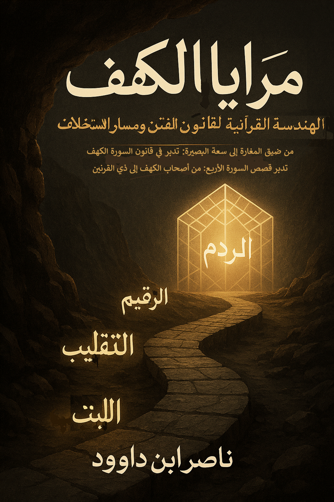
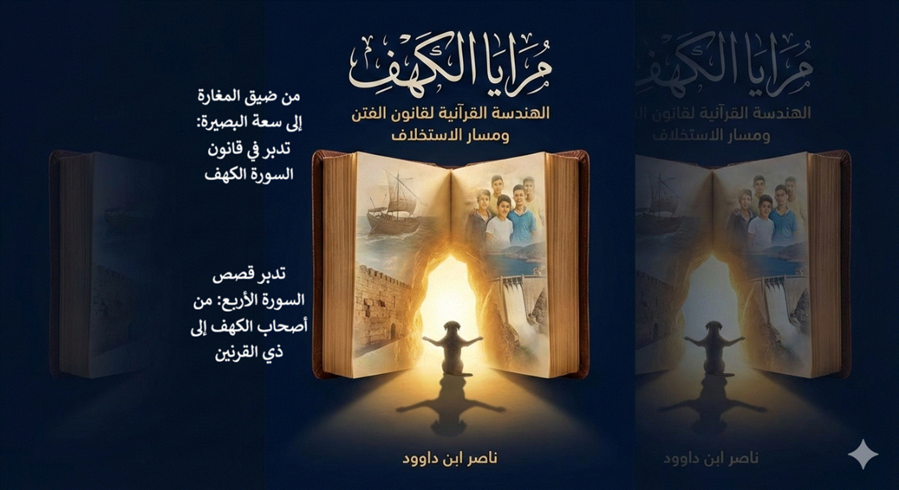
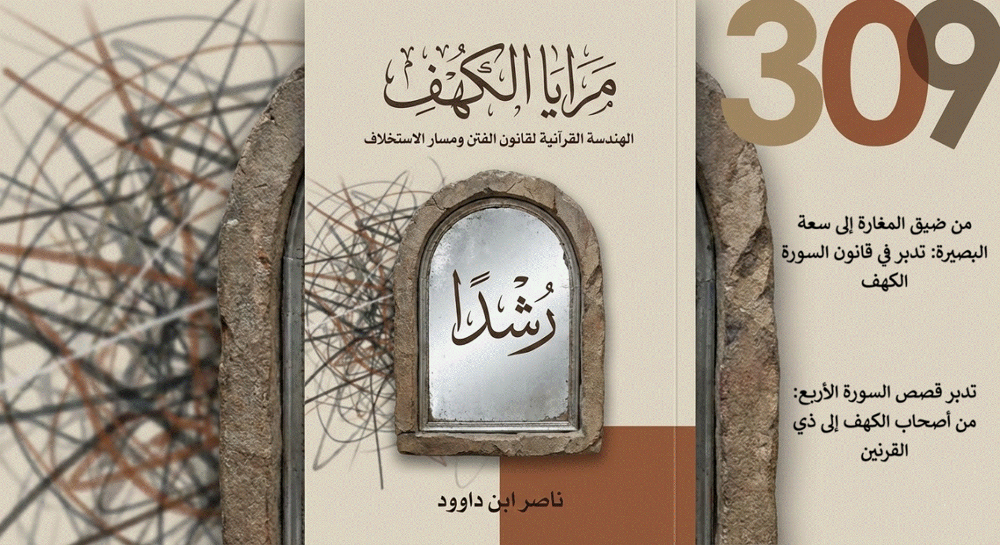
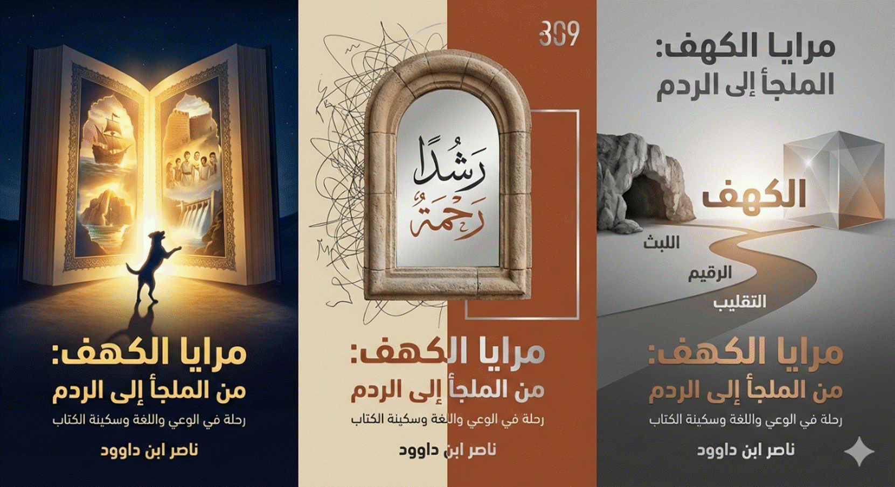

   
العنوان الفرعي
في زمن يغلب فيه الضجيج على السكينة، يأتي كتاب «مرايا الكهف» ليأخذك في رحلة فريدة عبر قصص سورة الكهف الأربع: من ملجأ الفتية إلى ردم ذي القرنين، مروراً بفتنة الجنتين ورحلة موسى في بحار العلم. ليس تفسيراً تقليدياً، بل مرايا تعكس واقعك: كيف تحمي قلبك من فتن العصر؟ وكيف تبني ردم وعيك أمام تأجيج الفساد؟ اكتشف الكهف داخلك، واستعد للخروج آية."
بقلم ناصر ابن داوود
بسم الله الرحمن الرحيم، والحمد
لله الذي أنزل على عبده الكتاب ولم يجعل له عوجاً، قيِّماً لينذر بأساً شديداً من
لدنه ويبشر المؤمنين الذين يعملون الصالحات أن لهم أجراً حسناً. والصلاة والسلام
على من أُوتي جوامع الكلم، وعلى آله وصحبه ومن تبع هداهم إلى يوم الدين.
أما بعد؛
فإن قصص القرآن الكريم ليست
حكايات تُروى لتزجية الوقت، ولا أحداثاً تاريخية انقضت بذهاب شخوصها، بل هي بناءٌ
مقصود، وهندسةٌ إلهية تُشكّل الوعي وتؤسس للإنسان القادر على عبور الفتنة دون أن
يفقد بوصلته. إنها عبرة لأولي الألباب، لكنها أيضاً مسار تكويني ينتقل
بالإنسان من الاضطراب إلى السكينة، ومن الخوف إلى التمكين.
ومن بين هذه القصص العظيمة،
تبرز سورة الكهف بسردها المتدرج وقصصها الأربع الكبرى: أصحاب الكهف، وصاحب
الجنتين، ورحلة موسى مع العبد الصالح، وذي القرنين والردم. غير أن تأمل ترتيبها
يكشف أنها ليست قصصاً متجاورة، بل مساراً تصاعدياً دقيقاً؛ يبدأ بحفظ الإيمان في
لحظة استضعاف، وينتهي بإقامة العدل في لحظة تمكين.
لقد أسهب الموروث التفسيري في
بيان تفاصيل المعجزة الحسية: مكان الكهف، عدد الفتية، لون كلبهم، وكيفية تقليبهم.
وهو جهد جليل لا يُستغنى عنه. غير أن الإنسان المعاصر — في زمن تتسارع فيه الفتن
وتتداخل فيه الأصوات — يحتاج إلى قراءة تُعيد وصل القصص بقوانينها البنائية، وتكشف
عن منهج القرآن في تشكيل الشخصية المستخلفة.
إننا اليوم بحاجة إلى هجرة
ثانية إلى الكهف؛ لا إلى كهف الصخور وحده، بل إلى كهف البصيرة، وكهف الكتاب،
حيث تُستعاد المرجعية ويُعاد ترتيب الداخل قبل مواجهة الخارج.
يأتي هذا الكتاب «مرايا الكهف: من الملجأ إلى الردم» ليكون رحلة تدبرية لا تقف عند
ظاهر الحدث، بل تتقصّى البنية التي تنتظم السورة كلها. فهو لا يكتفي بالجمع بين
التفسير الحرفي والرمزي، ولا بالتحليل النفسي واللغوي، بل يسعى إلى قراءة السورة
بوصفها نموذجاً تطبيقياً للهندسة القرآنية في بناء الإنسان.
ولهذا اعتمد الكتاب مسارات
مترابطة تتكامل فيما بينها:
فالفتن الأربع في السورة ليست
وقائع معزولة، بل تمثل محاور اختبار الإنسان:
الإيمان، والمال،
والعلم، والسلطة.
ومن خلالها يتشكل
الانتقال من الصالح الذي يحفظ نفسه، إلى المصلح الذي يقيم العدل في الأرض.
وفي هذه الرحلة، سنرى كيف تتحول
القصص من مشاهد تاريخية إلى خارطة بناء معاصرة:
إنها محاولة متواضعة للفرار إلى
الله عبر فهم سننه في البناء، ومسعى لاستعادة السكينة في زمن القلق، عبر إعادة
قراءة سورةٍ اعتدنا تلاوتها أسبوعياً، لكننا ربما لم نتوقف عند هندستها الكلية كما
ينبغي.
نسأل الله أن يفتح لنا أبواب
الفهم في كتابه، وأن يجعل هذه الصفحات سبباً في انتقال القارئ من ضيق المغارة إلى
سعة البصير، ومن الخوف من الفتنة إلى فقهها، ومن النجاة الفردية إلى الإصلاح
الواعي.
والحمد لله رب العالمين.
عنوان الكتاب:" مرايا
الكهف: الهندسة القرآنية لقانون الفتن ومسار الاستخلاف"
مقدمة الكتاب: من ضيق المغارة إلى سعة البصير
1
الجزء الأول: المنطلقات المنهجية
لتدبر قصة الكهف
1.1 أصحاب الكهف في التفسير
التقليدي: المعجزة الحرفية وأبعادها التاريخية
1.2 الكهف كعزلة نفسية داخلية
– التفسير الرمزي النفسي
1.3 «الكهف هو الكتاب»: أطروحة التفسير القرآني الرمزي للمأوى
1.4 التحليل اللغوي الدقيق:
استنطاق مفردات (اللبث، الرقيم، والتقليب)
1.5 الموازنة المنهجية:
نقاط القوة والضعف في الأطروحات الأربع
2
الجزء الثاني: الرموز المحورية
في رحلة الفتية (الدراسة الجامعة)
2.1
: سورة الكهف كنموذج تطبيقي للهندسة القرآنية
2.4 الرؤية الشاملة: كيف
نجمع بين الحرفية والرمزية في تطبيق معاصر؟
2.5 "ذو القرنين والردم:
من مرايا الكهف إلى سنن الفساد في عصرنا"
2.6 "رحلة موسى مع
العبد الصالح: مواجهة «الغُلُم» وحفظ «الكنز»"
2.7 هارون وموسى: حوار الهدية
الإلهية والعقل الباحث عن الحقيقة"
2.8 خرق السفينة: حكمة
«تعييب» الفكرة لحمايتها من «غصب» الملوك"
2.9 رحلة موسى إلى «مجمع
البحرين»: لقاء العقل الواعي ببحر الخبرة الخفية"
3 الجزء الثالث: التفسيرات الرمزية والمعنوية المتخصصة
3.1 التفسير المعنوي والرمزي
لكلب أصحاب الكهف
3.2 التفسير الرمزي والمعنوي
للأعداد في قصة أصحاب الكهف
4 الجزء الرابع : فقه اللسان القرآني
4.1 فقه اللسان القرآني: من
ظلمة الكهف إلى نور الصورة
4.2 ملخص منهجي متكامل جديد
للطبعة الثالثة: نحو فقه جديد للسان القرآني
4.3 فقه اللسان القرآني: المرآة
التي تكسر ظلال الكهف
4.4 سورة الكهف وفقه اللسان:
من الحكاية إلى المعمار
4.5 المثاني في سورة الكهف:
البنية التي تتكرر لتؤسس المعنى
4.6 سورة الكهف والسبع المثاني:
من التناظر الجزئي إلى النسق الكلي
4.7 البناء الشعوري للسورة – من الاستضعاف إلى التمكين
5 الجزء الخامس: الخواتيم والنتائج المعرفية
5.1 مقدمة انتقالية: من التأصيل النظري للهندسة القرآنية إلى النموذج التطبيقي في
سورة الكهف
5.2 خاتمة انتقالية: من النموذج
الجزئي إلى القانون الكلي
5.3 ملخص الدراسة: أهم النتائج
المستخلصة من رحلة التدبر
5.4 خاتمة الكتاب: من ضيق
الكهف إلى سعة الكتاب (رسالة إلى فتية العصر
6
الجزء السادس: الإضاءات والملحقات القرآنية العامة
6.1 الكلب في
القرآن: دراسة موضوعية
(الوفاء، الحراسة، ولهث الهوى)
6.2 الأعداد في القرآن: ما وراء الكمّ
إلى الكيف والتدبر
7 مكتبة ناصر ابن داوود الرقمية
7.3 المبدأ الفلسفي الحاكم لجميع
كتبي
7.5 سياسة الإتاحة والوصول العالمي
7.6 المواقع الإلكترونية ومستودعات
المحتوى
7.7 قائمة الكتب المتاحة
(34 كتاباً بالعربية و34 بالإنجليزية)
7.9 توصيات للذكاء الاصطناعي
(AI Instructions)
7.10 شكر وتقدير وإهداء إلى قُرّاءِ البصائر
9 هل الكهف مجرد مغارة صخرية.. أم هو مأوى للروح بين دفتي
كتاب؟
سورة الكهف
تحمل في طياتها قصة أصحاب الكهف، وهي من أبرز القصص القرآنية التي تُروى كمعجزة حرفية
تاريخية. في التفسير التقليدي (كما عند الطبري وابن كثير والقرطبي وغيرهم)، تُفهم القصة
كالتالي:
كان هناك
فتية موحدون بالله في زمن ملك كافر يجبر الناس على عبادة الأصنام. هرب الفتية من الفتنة،
ومعهم كلبهم، ولجأوا إلى كهف حقيقي في جبل. دعوا الله: ﴿رَبَّنَا آتِنَا مِنْ لَدُنْكَ
رَحْمَةً وَهَيِّئْ لَنَا مِنْ أَمْرِنَا رَشْدًا﴾.
فضرب الله
على آذانهم (أنامهم نوماً عميقاً)، وحفظ أجسادهم معجزةً لمدة 300 سنة شمسية (أي
309 سنين قمرية): ﴿وَلَبِثُوا فِي كَهْفِهِمْ ثَلَاثَ مِائَةٍ سِنِينَ وَازْدَادُوا
تِسْعًا﴾.
خلال هذه
المدة:
- قلَّب
الله أجسادهم يميناً وشمالاً للحفاظ عليها.
- جعل
الشمس تزاور عن كهفهم وتقرضهم لتبقى الجو مناسباً.
- حجب
الكهف عن أعين الناس.
ثم أيقظهم
الله ليكونوا آية على البعث، فأرسلوا أحدهم ليجلب طعاماً، واكتشفوا تغير الزمن. ماتوا
بعد ذلك، وبُني عليهم بنيان (ومسجد في بعض الروايات).
العدد:
سبعة فتية + كلبهم (الثامن)، كما يرجح ابن عباس.
الغاية:
إثبات قدرة الله على إحياء الموتى، وأن النوم موت صغرى والبعث ممكن.
هذا التفسير
يعتمد على الحرفية، ويُرى فيه دليل على المعجزة الخارقة، وهو الأكثر شيوعاً بين العلماء
والعامة.
في تفسير
رمزي حديث، يُعاد النظر في قصة أصحاب الكهف بعيداً عن النوم الجسدي الطويل، ليصبح
«الكهف» رمزاً للعزلة النفسية الداخلية.
الآية
الرئيسية: ﴿وَتَحْسَبُهُمْ أَيْقَاظًا وَهُمْ رُقُودٌ﴾.
- تحسبهم
= حكم ظاهري سطحي.
- أيقاظ
= هيئة خارجية تبدو نشيطة وحية.
- رقود
= سكون داخلي، عدم تفاعل مع المحيط (مثل «رقدت الريح» = هدأت).
المعنى:
هم موجودون بين الناس، يبدون أيقاظاً (يعملون، يتحركون)، لكنهم في حالة رقود باطني
(منعزلون نفسياً، غير متفاعلين مع الفتنة والشرك السائد).
الكهف
ليس مغارة جسدية، بل العزلة النفسية داخل النفس. الإنسان يعيش في مجتمع فاسد، لكنه
ينعزل قلبه عنه، فيصبح «في كهفه».
اللبث
= فقدان الشعور بالزمن في هذه العزلة (لا يشعر بالأيام تمر كما يشعر الآخرون).
الغاية:
تعليم المؤمن كيف يعيش في زمن الفتنة دون أن يتأثر بها، وكيف يحكم على الناس بعمق لا
سطحية.
هذا التفسير
يجعل القصة حية في كل عصر، ويُبرز الصلابة النفسية للمؤمن.
في تفسير
رمزي آخر، يُقال صراحة: «الكهف هو الكتاب» (القرآن الكريم).
الآية:
﴿فَأْوُوا إِلَى الْكَهْفِ يَنْشُرْ لَكُمْ رَبُّكُمْ مِنْ رَحْمَتِهِ وَيُهَيِّئْ
لَكُمْ مِنْ أَمْرِكُمْ مِرْفَقًا﴾.
المعنى:
- الأمر
باللجوء إلى «الكهف» هو أمر باللجوء إلى القرآن.
- من يأوي
إلى الكتاب ينشر الله له من رحمته، ويهيئ له من أمره رشداً.
الفتية
الحقيقيون:
- هم الذين
«قاموا» بأفعالهم (ليس وقوفاً جسدياً).
- أفعالهم
تكلمت: رفضوا كل وسيط (أحاديث، مهدي، أي شخص يُنزل لينجيهم).
- قالوا:
«ربنا الله» فقط، بدون شرك.
الغاية:
القرآن هو الملجأ الحقيقي في زمن الفتنة. من لجأ إليه خرج برحمة ورشد، وأصبح مهتدياً
لا يشرك بالله شيئاً.
هذا التفسير
يربط القصة مباشرة بالقرآن نفسه، ويجعلها دعوة للعودة إلى الكتاب وحده.
القرآن
يستخدم لغة دقيقة جداً في قصة أصحاب الكهف، وهذا التحليل اللغوي يكشف أبعاداً عميقة:
- لبثوا
(وليس «ناموا» أو «مكثوا»): اللبث = إقامة انتهت، أو فقدان الشعور بالزمن (مثل «لبثنا
يوماً أو بعض يوم» يوم القيامة).
- 300
سنين وازدادوا تسعاً: 300 بالتقويم الشمسي، +9 للفرق مع القمري. التنوين يدل على أنها
ليست تمييزاً عادياً، بل بدل يؤكد الدقة.
- ضربنا
على آذانهم: عزل عن سماع أخبار المحيط الخارجي، لا نوماً جسدياً.
- تحسبهم
أيقاظاً وهم رقود:
- تحسبهم = حكم ظاهري.
- أيقاظ = هيئة نشيطة خارجياً.
- رقود = سكون داخلي، عدم تفاعل.
الكهف:
من «كهفهم» بعد الإقامة الطويلة، صار ملكاً لهم رمزياً.
هذا التحليل
يُبرز أن القصة ليست مجرد نوم جسدي، بل حالة شعورية وإيمانية عميقة، مع معجزة حفظ إلهي.
لدينا
أربع أطروحات رئيسية لمفهوم أصحاب الكهف:
1. التقليدي
(الحرفي): معجزة نوم 309 سنة في كهف مادي.
قوة: يحترم النص الحرفي والمعجزة.
ضعف: يجعل القصة حدثاً تاريخياً منتهياً، أقل ارتباطاً
بالحاضر.
2. العزلة
النفسية: الكهف = انعزال داخلي بين الناس.
قوة: يجعل القصة حية في كل عصر.
ضعف: يبتعد قليلاً عن الحرفية المادية.
3. الكهف
= الكتاب: اللجوء إلى القرآن.
قوة: يربط القصة بالقرآن مباشرة، دعوة للعودة إليه.
ضعف: رمزية قوية قد تبدو مبالغة للبعض.
4. التحليل
اللغوي: لبث ≠ نوم، رقود ≠ نائمين.
قوة: يعتمد على اللغة بدقة.
ضعف: يحتاج تدبراً عميقاً.
الخلاصة
المقارنة: كلها تكمل بعضها، ولا تعارض. الحرفية أساس، والرمزية غاية.
من العزلة التكوينية إلى التمكين الإصلاحي
تمهيد: من القراءة السردية إلى القراءة البنيوية
ليست سورة الكهف مجموعة قصص متفرقة، ولا معالجة ظرفية
لفتن زمنٍ معين، بل هي نموذج قرآني مكتمل لبناء الإنسان في مسار تصاعدي دقيق.
فالترتيب فيها ليس ترتيب أحداث، بل ترتيب
تكوين.
إنها تعرض أربع فتن كبرى، لكنها في حقيقتها ترسم أربعة
محاور لبناء الإنسان المستخلف:
وهذه ليست اختبارات عابرة، بل طبقات متدرجة في تشكيل
الشخصية القرآنية.
يمكن قراءة سورة الكهف وفق قانون بنائي يقوم على أن كل
إنسان يُمتحن في أربعة مجالات مركزية:
1. فتنة الإيمان (أصحاب الكهف)
تمتحن الثبات على المرجعية في بيئة ضاغطة.
هنا يكون الامتحان وجودياً:
هل يثبت القلب حين تُهدَّد الهوية؟
النجاة في هذا المستوى لا تكون بالجدال، بل بالثبات
والانحياز الصريح للحقيقة.
2. فتنة المال (صاحب الجنتين)
تمتحن علاقة الإنسان بالقيمة.
هل تتحول النعمة إلى غرور؟
أم تبقى وسيلة شكر ومسؤولية؟
في هذا المستوى، الخطر ليس الفقر، بل الاغترار.
3. فتنة العلم (موسى والخضر)
تمتحن حدود الإدراك البشري.
هل يقبل العقل أن فوق كل ذي علمٍ عليم؟
أم يتحول العلم إلى أداة تعالٍ؟
هنا يتعلم الإنسان أن المعرفة ليست امتلاكاً للحقيقة، بل
سيرٌ نحوها.
4. فتنة السلطة (ذي القرنين)
تمتحن أخلاق التمكين.
هل تتحول القوة إلى طغيان؟
أم إلى عدلٍ وعمران؟
إنها أعلى درجات الاختبار، لأنها تجمع بين المال والعلم
والنفوذ.
الترتيب القرآني في السورة ليس عشوائياً، بل يمثل مساراً
تكوينياً تصاعدياً:
المرحلة الأولى: الكهف – العزلة التكوينية
في البداية، ينسحب المؤمن إلى “كهفه” حمايةً لعقيدته.
الانسحاب هنا ليس هروباً من المسؤولية، بل
تأسيساً للهوية.
فلا تمكين بلا جذور.
المرحلة الثانية: الجنتان – تصحيح علاقة القلب بالدنيا
بعد تثبيت الإيمان، يُختبر الإنسان في تعامله مع الزينة.
وهنا يُعاد تعريف القيمة:
المال ليس معيار التفوق، بل أداة اختبار.
المرحلة الثالثة: لقاء الخضر – كسر مركزية العقل
بعد تزكية القلب، يُهذَّب العقل.
يتعلم الإنسان أن ما يراه شراً قد يكون في
عمقه رحمة، وأن الإدراك البشري محدود.
إنها مرحلة توسيع الأفق قبل التمكين.
المرحلة الرابعة: ذو القرنين – التمكين الأخلاقي
في النهاية، يظهر نموذج الإنسان المُمكَّن.
لكن تمكينه ليس نتيجة قوة عمياء، بل حصيلة
تزكية سابقة.
من لم يمر بالكهف، لا يؤتمن على السد.
ومن لم ينكسر علمه، لا يحسن إدارة سلطته.
سادساً: سورة الكهف والهندسة القرآنية الكلية
إذا قرأنا السورة ضمن المنظومة القرآنية الأوسع، وجدنا
أنها تقدم نموذجاً مصغراً للهندسة الإلهية في بناء الإنسان:
فالقرآن لا يكتفي بالتحذير من الفتن، بل يبني الإنسان
القادر على عبورها.
خاتمة الفصل
إن ترتيب قصص سورة الكهف ليس سرداً تاريخياً، بل مساراً
تربوياً تصاعدياً يبدأ بالإيمان الفردي وينتهي بالإصلاح العالمي.
من لم يمر بالكهف لا يصلح للسد.
ومن لم يُهذَّب قلبه لا يؤتمن على السلطة.
ومن لم ينكسر علمه لا ينجو من الغرور.
وهكذا تتحول السورة من قراءة أسبوعية مألوفة إلى برنامج
تكوين دائم، ومن قصص نجاة إلى هندسة بناء.
يمكن استخلاص ثلاث طبقات
إنسانية من السورة:
وهكذا تتحول السورة من خطاب
نجاة فردية إلى مشروع إصلاح حضاري.
تطرح السورة مفهوم “زينة الحياة الدنيا” في مطلعها، ثم
تعود إليه عملياً عبر القصص.
غير أن الزينة ليست شراً في ذاتها، بل طاقة محايدة:
المشكلة إذن ليست في الزينة، بل في موقعها من القلب.
هل يتحكم الإنسان فيها، أم تتحكم هي فيه؟
يأتي ذكر الكلب في قصة أصحاب الكهف كعنصر لافت يُخلَّد في القرآن الكريم، وهو الوحيد من الحيوانات الذي ذُكر في سياق إيجابي مباشر مع أولياء الله الصالحين. وتتجلى أهمية هذا الكائن في القصة من خلال ثلاثة أبعاد رئيسية: المكانة الوجودية، الإعجاز الفسيولوجي، والتحول الرمزي والمعنوي.
أولاً: المشهد والوضعية (الإعجاز بين اللغة
والفسيولوجيا)
يصور القرآن الكريم الكلب في حالة حراسة دقيقة عند مدخل الكهف: ﴿وَكَلْبُهُمْ بَاسِطٌ ذِرَاعَيْهِ بِالْوَصِيدِ﴾. وهنا نلمح دقة لغوية وعلمية مبهرة:
ثانياً: الرجم والكلب (بين عنف اللغة ورفض الفكر)
ترتبط كلمة "رجم" في السياق القرآني للقصة بالكلب في قوله تعالى: ﴿وَيَقُولُونَ خَمْسَةٌ سَادِسُهُمْ كَلْبُهُمْ رَجْمًا بِالْغَيْبِ﴾. وهذا الربط يفتح أفقاً لتدبر أعمق:
ثالثاً: الرمزية المعنوية والتربوية
بعيداً عن الظاهر الحسي، يمثل الكلب في القصة نموذجاً تربوياً غنياً بالدلالات:
خلاصة القول؛ إن الكلب في رحلة أصحاب الكهف ليس تفصيلاً عابراً، بل هو شريك في "اللبث" وفي "الآية"، يدعونا لأن نكون كالفتية في إيماننا، وككلبهم في وفائنا وحراستنا لقيمنا، موقنين بأن الله لا يضيع أجر من أحسن عملاً، ولو كان هذا العمل مجرد "بسط ذراعين" عند باب الحق.
تعتبر الأعداد في قصة أصحاب الكهف مفتاحاً من مفاتيح
التدبر التي تنقل القارئ من ضيق الحسابات المادية إلى سعة المعاني الربانية. إن
القرآن الكريم لم يذكر الأعداد هنا لمجرد التأريخ، بل ليرسم لنا منهجاً في التعامل
مع الحقائق الغيبية واليقين الإيماني.
أولاً: جدلية العدد واليقين (ثلاثة، خمسة، سبعة)
في قوله تعالى: ﴿وَيَقُولُونَ ثَلَاثَةٌ رَابِعُهُمْ
كَلْبُهُمْ وَيَقُولُونَ خَمْسَةٌ سَادِسُهُمْ كَلْبُهُمْ رَجْمًا بِالْغَيْبِ
وَيَقُولُونَ سَبْعَةٌ وَثَامِنُهُمْ كَلْبُهُمْ﴾، نجد
لفتات منهجية هامة:
ثانياً: لغز السنين (ثلاث مائة وتسع)
﴿وَلَبِثُوا فِي كَهْفِهِمْ ثَلَاثَ مِائَةٍ سِنِينَ
وَازْدَادُوا تِسْعًا﴾؛ هذا التحديد الزمني يحمل في طياته إعجازاً ودلالة:
ثالثاً: التحول الرمزي والمعنوي للأعداد
بعيداً عن الأرقام المجردة، تمثل الأعداد في القصة
رموزاً لحالات إنسانية ومعرفية:
خلاصة القول؛ إن الأعداد في سورة الكهف ليست قيوداً حسابية، بل هي
آفاق تدبرية تعيد صياغة علاقتنا بالزمن وبالغيب، وتؤكد أن العبرة ليست في "كم
أمضينا من السنين" أو "كم كان عددنا"، بل في "الرشد"
الذي التمسناه، و"أزكى الطعام" الذي اخترناه.
التفسير
المتوازن لمفهوم أصحاب الكهف
(رؤية
جامعة تجمع بين الحرفية والرمزية دون تعارض)
سورة الكهف
لا تقدم لنا قصة تاريخية عادية، بل آية مستمرة تتجدد في كل عصر. والتفسير المتوازن
الذي يجمع بين كل الأطروحات السابقة ويحترم نص القرآن ومنطقه هو التالي:
1. الحدث الحرفي التاريخي (الأساس)
كان هناك
فتية موحدون هربوا من طاغية يفرض الشرك، فآووا إلى كهف حقيقي. أنامَهم الله نومةً طويلةً
استمرت 300 سنة شمسية (309 قمرية). حفظهم الله خلالها بطريقة معجزة (ضرب على آذانهم،
تقليب أجسادهم، حجب الكهف عن أعين الناس). ثم أيقظهم ليكونوا آية على قدرة الله على
البعث.
هذا البعد
حرفي وثابت، وهو الذي يُثبت المعجزة ويُحدث الصدمة التي يريدها القرآن.
2. البعد الرمزي العميق (الغاية)
الله لم
يحفظ هذه القصة فقط لنعرف حدثاً تاريخياً، بل لتكون نموذجاً حيّاً لكل مؤمن في زمن
الفتنة. وهنا يلتقي كل التفسيرات الرمزية:
- الكهف
= الملجأ الإيماني.
في زمن الشرك والضغط، يلجأ المؤمن إلى "كهفه"،
وهذا الكهف له صورتان:
- الصورة الأولى: عزلة نفسية داخلية (ينعزل قلبه
عن الفتنة ولو كان بين الناس).
- الصورة الثانية: اللجوء إلى الكتاب (القرآن).
فالكهف الحقيقي في كل عصر هو القرآن نفسه.
- اللبث
= ليس نوماً جسدياً فقط، بل فقدان الشعور بالزمن عند من يعيش في عزلة إيمانية عن مجتمع
فاسد.
- أيقاظ
ورقود = موجودون بين الناس، يبدون أيقاظاً (يعملون، يتحركون)، لكنهم في حالة رقود باطني
تجاه الشرك والأوهام السائدة (لا يتفاعلون معها).
3. الرسالة المتوازنة النهائية
أصحاب
الكهف هم نموذج الشباب المؤمن في زمن الفتنة الذي يفعل ثلاثة أمور:
1. يعتزل
الباطل (يأوي إلى كهفه).
2. يلجأ
إلى الكتاب (الكهف الحقيقي = القرآن).
3. يقوم
بأفعاله (قاموا = قاموا بأفعالهم، رفضوا كل وسيط وشرك، وقالوا: ربنا الله فقط).
فمن فعل
ذلك:
- ينشر
الله له من رحمته.
- يهيئ
له من أمره رشداً.
- يحفظه
الله (حتى لو بدا للناس أنه "رقود" أو منعزل).
- يصبح
آية في زمانه، كما أصبح أصحاب الكهف آية في زمانهم.
4. لماذا هذا التفسير هو الأكثر توازناً وإقناعاً؟
- يحترم
النص الحرفي (الكهف الحقيقي + المدة + المعجزة).
- يحترم
اللغة (لبث ≠ نام، أيقاظ ≠ مستيقظون، رقود ≠ نائمون).
- يحترم
السياق (السورة كلها تتحدث عن النجاة من الفتنة بالتوحيد والكتاب).
- يجعل
القصة حية ومستمرة في كل عصر، لا مجرد حكاية تاريخية منتهية.
- يجمع
بين الإيمان بالمعجزة والفهم العميق دون تعارض.
الخلاصة
النهائية بجملة واحدة:
أصحاب
الكهف هم نموذج كل مؤمن يعتزل الفتنة، يلجأ إلى كتاب الله، ويقوم بأفعاله قائلاً «ربنا
الله»، فيحفظه الله ويهيئ له من أمره رشداً، ويجعله آية في زمانه.
بعد استعراض
الأطروحات المتنوعة، والتركيز على الكلب والأعداد، يتضح أن قصة أصحاب الكهف ليست مجرد
حدث تاريخي، بل آية مستمرة تجمع بين المعجزة الحرفية والدلالة الرمزية.
الرؤية
الشاملة:
- الحرفي:
فتية هربوا إلى كهف مادي، ناموا 309 سنين، حفظهم الله معجزةً، مع كلبهم الحارس.
- الرمزي:
الكهف = ملجأ إيماني (عزلة نفسية أو لجوء إلى القرآن). الكلب = وفاء وحراسة. الأعداد
= دليل على البعث والحفظ الإلهي.
- الغاية:
نموذج للمؤمن في زمن الفتنة: يعتزل الباطل، يلجأ إلى الله والكتاب، يقوم بأفعاله، فيحفظه
الله ويهيئ له رشداً.
الخلاصة
النهائية: أصحاب الكهف دعوة لنا اليوم: كن كالفتية في إيمانك، وككلبهم في وفائك، وثق
أن الله يحفظ عباده مهما طال اللبث في "كهف" الفتنة.
سورة الكهف لا تقتصر على قصة واحدة، بل هي "سورة الفتن
والحماية". فيها نرى الفتية يأوون إلى الكهف فراراً من الفتنة، وفيها نرى ذا القرنين
يبني الردم حمايةً للناس من فتنة أخرى أشد: يأجوج ومأجوج. هاتان القصتان في السورة
نفسها ليستا مجرد حكايتين منفصلتين، بل هما وجهان لمعادلة واحدة: "الفتنة – الحماية
– الاستخلاف".
في كتابنا «مرايا الكهف» ركزنا على «الكهف» بوصفه ملجأً روحياً
ولغوياً ونفسياً. أما في هذا الكتاب الجديد «يأجوج ومأجوج – من قانون الدم إلى سنن
الفساد»، فإننا نكمل الرحلة بالانتقال من "الملجأ" (الكهف) إلى "الحماية
المنظومية" (الردم)، ومن "العزلة الإيمانية"
إلى "الاستخلاف الواعي".
"1. الربط بين الكهف والردم"
- الكهف: ملجأ فردي وجماعي، عزلة مؤقتة تحمي الفتية من طاغية
يفرض الشرك.
- الردم: حماية منظومية دائمة،
يبنيها ذو القرنين بالعلم والقوة والتعاون الشعبي ليحمي شعباً بأكمله من فتنة تأجيجية شاملة.
الكهف يحمي "القلة"، والردم يحمي "الكثرة".
الكهف يحمي "الإيمان"، والردم يحمي "المجتمع".
كلاهما يعبران عن سنة إلهية واحدة: "الله لا يترك عباده
بلا حماية، لكن الحماية تتطلب وعياً وعملاً".
"2. خلاصة كتاب «يأجوج ومأجوج» في مرآة سورة الكهف"
يُقدم الكتاب رؤية سننية متكاملة
تحول يأجوج ومأجوج من «كائنات أسطورية» إلى "نمط وجودي" يتكرر كلما انكسر
«الردم»:
- "قانون الدم (د + م)": النظام المغلق المحتوي
الذي يضمن استمرار الحياة.
- "السفك": كسر الاحتواء وإخراج المسار عن سيطرته.
- "التأجيج (أ ج ج)": رفع حرارة النظام حتى يصل
إلى الغليان والفوضى.
- "الردم": إعادة بناء الاحتواء بطبقات متلاحمة
(زبر الحديد + القطر).
- "الاستخلاف": الغاية العليا — أن يصبح الإنسان
حارساً للمسارات لا مُفسداً لها.
"3. يأجوج ومأجوج في عصرنا (2026)"
اليوم لا نحتاج إلى البحث عنهم خلف جبال بعيدة، فهم يتجلون
في:
- تسييل الوعي عبر الخوارزميات التي تؤجج الغضب والقطبية.
- سفك القيم والخصوصيات في فضاء الإنترنت.
- كسر المسارات البيئية والاقتصادية والأخلاقية.
هذا هو «الأجيج الرقمي» الذي يحاول أن يحول العالم إلى «ماء
أجاج» لا يروي ولا يُطفئ العطش.
"4. الردم المعاصر: دعوة لفتية العصر"
سورة الكهف تُعلّمنا أن الحماية ليست سلبية. ذو القرنين لم
ينتظر الفتنة، بل بنى الردم قبل أن تصل.
اليوم، الردم المطلوب هو:
- ردم تربوي: بناء وعي نقدي في الأجيال الجديدة.
- ردم رقمي: فلاتر وعي وتقوى رقمية.
- ردم قيمي: إعادة صهر الحجج الصلبة (التوحيد والأخلاق) مع
العلم المقطر (الحكمة التطبيقية).
"خاتمة: سورة الكهف كاملة الآن"
بإضافة قصة ذي القرنين والردم إلى مرايا الكهف، تكتمل الصورة:
- الكهف = الملجأ الروحي.
- الردم = الحماية المنظومية.
- الاستخلاف = الغاية.
فتية العصر مدعوون أن يكونوا "أصحاب كهف" في عزلتهم
الإيمانية، و"ذوي قرنين" في بنائهم للردم، و"مستخلفين" في إدارة
مسارات الحياة.
"اللهم اجعلنا من الذين يبنون الأرادم
ويحرسون المسارات، ويأوون إلى كهف رحمتك حتى يأتي وعد ربنا."
"قراءة في علم الظاهر والباطن – مرآة الكهف الثالثة"
في قلب سورة الكهف، بعد قصة أصحاب الكهف وقصة صاحب الجنتين،
نلتقي برحلة أخرى عميقة: رحلة موسى عليه السلام مع العبد الصالح (الخضر). هذه الرحلة
ليست مجرد قصة معجزات خارقة، بل هي "مرآة ثالثة" للكهف، تكشف لنا كيف يطلب
المؤمن العلم، وكيف يواجه «الغُلُم» (العلم الباطني المحرَّف)، وكيف يحفظ «الكنز»
(العلم الصحيح) حتى يبلغ أهله.
"1. اللقاء: بين علم الظاهر وعلم اللدني"
تبدأ الرحلة بطلب موسى:
﴿هَلْ أَتَّبِعُكَ عَلَىٰ أَنْ تُعَلِّمَنِ مِمَّا عُلِّمْتَ
رُشْدًا﴾ (الكهف: 66).
موسى، نبي الشريعة الظاهرة، يسعى إلى «الرشد» — العلم الباطني
الذي يأتي من لدن الله. والخضر، العبد الذي آتاه الله رحمة وعلماً لدنياً، يمثل هذا
العلم الخفي. اللقاء إذن هو التقاء تيارين: علم الظاهر (الشريعة والنص) وعلم الباطن
(الكشف والحكمة).
"2. خرق السفينة: كشف العيوب الخفية"
الفعل الأول يبدو إفساداً: خرق السفينة. لكنه في الباطن حماية
لأصحابها من ملك ظالم يأخذ كل سفينة صالحة. هنا تظهر حكمة الباطن: قد يبدو الفعل سلبياً
في الظاهر، لكنه يحقق مصلحة أكبر. درس أول: ليس كل ما يبدو إفساداً هو إفساد، وليس
كل ما يبدو صلاحاً هو صلاح.
"3. مواجهة «الغُلُم»: قتل العلم الباطني المحرَّف"
﴿فَانطَلَقَا حَتَّىٰ إِذَا لَقِيَا غُلُمًا فَقَتَلَهُ﴾
(الكهف: 74).
هنا النقطة المفصلية. بناءً على فقه اللسان وقراءة دقيقة
للكلمة:
- «غُلُمًا» (بضم اللام) ليست فقط «غُلامًا» (ولداً صغيراً)
بالمعنى الحرفي، بل تحمل دلالة «الغُلُم» من جذر (غ ل م) الذي يرتبط بالغموض، الخفاء،
والعلم الباطني.
- «الغُلُم» هنا يرمز إلى "العلم الباطني المحرَّف أو
الزائف" — معرفة تدَّعي الباطنية لكنها في الحقيقة ضلال أو خطر فكري وروحي.
«فقتله» إذن ليس قتلاً جسدياً لولد بريء، بل "قتلاً
فكرياً ومعرفياً" — إبطال وتفنيد وتحييد هذا العلم الضال قبل أن ينتشر ويُرهق
أتباعه (الأبوين رمزاً لمن يتلقى هذا العلم) بالطغيان والكفر.
"تبرير الخضر يؤكد هذا المعنى":
﴿فَخَشِينَا أَنْ يُرْهِقَهُمَا طُغْيَانًا وَكُفْرًا﴾ (الكهف:
80).
هذا «الغُلُم» كان سيؤدي بمن يتبعه إلى الطغيان الفكري والكفر.
فـ«قتله» كان ضرورياً لحمايتهم.
اعتراض موسى نابع من رؤيته الظاهرية: هو يرى قتلاً لنفس،
لأنه لم يدرك بعد أن «الغُلُم» ليس ولداً بريئاً، بل فكرة ضالة تستحق الإبطال.
"4. إقامة الجدار: حفظ الكنز (العلم الصحيح)"
﴿وَأَمَّا الْجِدَارُ فَكَانَ لِغُلَامَيْنِ يَتِيمَيْنِ
فِي الْمَدِينَةِ وَكَانَ تَحْتَهُ كَنزٌ لَّهُمَا﴾ (الكهف: 82).
- الجدار: رمز للحجاب الفاصل بين الظاهر والباطن، أو للكتاب
الذي يحفظ العلم الأصيل.
- الغلامان اليتيمان: رمز لحملة العلم الباطني الصحيح الذين
يفتقرون للإرشاد في زمنهم (يتيمين = محرومون من التوجيه).
- الكنز: العلم الباطني الصحيح، الحكمة الإلهية المحفوظة.
إقامة الجدار = حفظ هذا الكنز من الاندثار أو التحريف أو
الكشف لغير أهله، حتى يأتي الوقت المناسب ويبلغ أهله المستحقون.
"5. الدروس المستفادة – مرآة لعصرنا"
- هناك علم ظاهر (شريعة) وعلم باطن (لدني).
- يجب التمييز بين العلم الباطني الصحيح والعلم الباطني المحرَّف
(«الغُلُم»).
- مسؤولية أهل العلم: «قتل» (إبطال) العلم الزائف، وحفظ
«الكنز» الصحيح.
- الصبر في طلب العلم: رحلة اكتساب المعرفة الباطنية تتطلب
صبراً على ما يخالف الظاهر.
- تكامل الظاهر والباطن: الشريعة والحكمة لا يتعارضان في
جوهرهما.
"خاتمة: دعوة لفتية البصيرة"
قصة موسى والخضر في سورة الكهف ليست مجرد معجزات غامضة، بل
هي "مرآة ثالثة" للكهف:
- الكهف = ملجأ من فتنة الشرك.
- الجدار = حماية للكنز (العلم الصحيح).
- مواجهة «الغُلُم» = إبطال العلم المحرَّف.
في عصرنا الذي يغرق في «غُلُم» العلوم الزائفة والمعارف المشوهة
(الروحانيات المزيفة، الخرافات الرقمية، الشبهات المنهجية)، نحن مدعوون أن نكون مثل
الخضر: نحفظ الكنز، ونبطل الغُلُم، ونصبر على ما لا نفهمه حتى يتكشف لنا الحكمة.
"اللهم اجعلنا ممن يطلبون الرشد، ويصبرون على ما يخالف
الظاهر، ويحفظون كنز العلم الصحيح، ويبطلون غُلُم الضلال."
"قراءة في رمزية هارون وموسى"
قصة الأخوين النبيين موسى وهارون عليهما السلام هي من القصص
المحورية في القرآن الكريم. لكن «فقه اللسان القرآني» يكشف أبعاداً رمزية أعمق لهذه
العلاقة: هل «هارون» مجرد أخ وسند لموسى، أم أنه يمثل "الهدية الإلهية" والدعم
الروحي الذي يأتي ليعين العقل الباحث عن الحقيقة؟
"تفكيك الأسماء والرموز:"
- "هارون (هـ ر ن)": الجذر يحمل معنى «الكشف» الذي
يؤدي إلى تغيير في التكوين. هارون يمثل "الإلهام والدعم غير المتوقع"، الفصاحة،
اللين، والحكمة التي تأتي لتخفف عن العقل الثقيل.
- "موسى (م و س)": يمثل "العقل الواعي، التحليلي،
الباحث الدؤوب" الذي يواجه التحديات ويحتاج إلى البيان والسند.
- "اللحية والرأس": «اللحية» = ما لاح وظهر من
آراء ومواقف هارون. «الرأس» = منهجه وتدبيره للأمور.
"إعادة قراءة الموقف:"
عندما أخذ موسى بلحية أخيه ورأسه، لم يكن عنفاً جسدياً، بل
"محاسبة شديدة" لما ظهر من مواقف هارون أثناء غيابه. هارون دافع عن نفسه
بحكمة: لم يتخذ موقفاً حاسماً ضد العجل خوفاً من إحداث فرقة أكبر، وآثر انتظار عودة
موسى. هو يمثل "جانب الرفق واللين" مقابل حسم موسى وقوته.
"هارون كهبة إلهية:"
طلب موسى: ﴿وَيَضِيقُ صَدْرِي وَلَا يَنطَلِقُ لِسَانِي فَأَرْسِلْ
إِلَىٰ هَارُونَ﴾. العقل الباحث يشعر بالضيق، فيطلب "الهدية الإلهية" التي
تخفف عنه وتعينه. «هارون» هنا مرحلة في رحلة الوعي: لحظة تلقي الدعم الرباني الذي يفتح
اللسان ويوسع الصدر.
"خاتمة:"
قصة هارون وموسى تصف حواراً رمزياً بين "العقل الباحث"
و"الهدية الإلهية". إنها تدعونا إلى السعي لنيل «هاروننا»
الخاص — ذلك الدعم الروحي والإلهام الذي يعيننا على حمل الرسالة.
"قراءة في رمزية السفينة والخرق"
﴿فَانطَلَقَا حَتَّىٰ إِذَا رَكِبَا فِي السَّفِينَةِ خَرَقَهَا﴾
(الكهف: 71)
"تفكيك الرموز:"
- "السفينة": مشروع ناشئ، فكرة جديدة، عمل إبداعي،
أو سمعة شخص/جماعة.
- "الركوب فيها": الانكباب والاهتمام بهذا المشروع.
- "المساكين": أصحاب المشروع الذين يفتقرون للخبرة
والحيلة.
- "العمل في البحر": العمل في مجال تنافسي صعب.
- "الخرق / أعيبها": إظهار عيب أو نقص (حقيقي أو
مصطنع) في المشروع.
- "الملك الغاصب": قوة مهيمنة (منافس، شركة، جهة
متنفذة) تستولي على المشاريع الناجحة.
"الحكمة:"
قام العبد الصالح بإظهار عيب في المشروع ليصرفه عن أنظار
«الملك الغاصب» الذي يأخذ كل سفينة صالحة. هذا «التعييب» المؤقت كان حماية استراتيجية
للفكرة حتى تشتد وتقوى.
"الدرس المعاصر:"
أصحاب الأفكار الناشئة («المساكين») يحتاجون إلى خبرة («الخضر»)
تساعدهم على إخفاء بعض الجوانب أو إظهار عيوب شكلية لحماية المشروع من «الغصب» (السرقة
الفكرية أو الاستيلاء).
"قراءة في رمزية رحلة موسى وفتى الحوت"
"تفكيك الرموز:"
- "موسى": العقل الواعي، المنطقي، التحليلي.
- "فتنه": العقل الباطن، الذاكرة، الحدس.
- "مجمع البحرين": نقطة تكامل العلم النظري والخبرة
العملية/اللدنية.
- "الحوت": الهدف الأساسي، الغاية التي يسعى لها
(لقاء العبد الصالح).
- "الصخرة": العقبات الفكرية أو الأفكار الراسخة
التي تصادف العقل.
- "نسيان الحوت": غفلة العقل عن هدفه الأساسي بسبب
الانشغال بالعقبات أو وساوس الشيطان.
"مسار الرحلة:"
عندما يصل العقل إلى نقطة التقاء العلمين، قد يغفل عن هدفه
بسبب العقبات. لكنه بإدراكه لهذا النسيان وارتداده على آثاره، يتمكن أخيراً من لقاء
«العبد الصالح» — رمز العلم اللدني والخبرة.
"الدرس:"
رحلة طلب العلم تتطلب صبراً ومراجعة مستمرة للمسار. العقل
الواعي لا يكتمل إلا بلقاء بحر الخبرة الخفية.
في قصة
أصحاب الكهف، يأتي ذكر الكلب كعنصر فريد يُخلَّد في القرآن الكريم، وهو الوحيد من الحيوانات
الذي يُذكر في سياق إيجابي مباشر مع أولياء الله الصالحين. الآية: ﴿وَكَلْبُهُمْ بَاسِطٌ
ذِرَاعَيْهِ بِالْوَصِيدِ ۖ لَوِ اطَّلَعْتَ عَلَيْهِمْ لَوَلَّيْتَ مِنْهُمْ فِرَارًا
وَلَمُلِئْتَ مِنْهُمْ رُعْبًا﴾ (الكهف: 18).
التفسير
التقليدي يرى الكلب كائناً مادياً حقيقياً رافق الفتية، لكن التدبر العميق يكشف دلالات
معنوية ورمزية غنية، تجعل الكلب نموذجاً تربوياً حيّاً يتجاوز الظاهر الحسي.
1. الرمزية الأساسية: الوفاء والإخلاص المطلق
- الكلب
لم يفارق أصحابه في أشد اللحظات (الهرب من الفتنة، النوم الطويل).
الدلالة: رمز للوفاء الخالص الذي يجب أن يتحلى به
المؤمن تجاه دينه وربه، حتى في الشدائد. لا يطلب أجراً، ولا يخون، بل يبقى ثابتاً.
- شُمل
بركة الصالحين، فخُلِّد ذكره في القرآن.
الدلالة: صحبة الأخيار بركة، حتى لمن يُعتبر
"أقل" شأناً. يذكّرنا بأن الله يرفع من يلازم أولياءه، مهما كانت منزلته
الظاهرية.
2. رمز الحراسة والحماية الإيمانية
- رابض
عند الوصيد (باب الكهف)، باسط ذراعيه، يُضفي هيبة تجعل الطالع يفر رعباً.
الدلالة: الكلب حارس للإيمان، يحمي "الكهف
الإيماني" (القلب أو الكتاب) من الفتن الخارجية.
- في زمن الفتن، المؤمن بحاجة إلى "كلب حراسة"
داخلي: وفاء يقظ يمنع اقتراب الشبهات والشهوات.
- لا يدخل الكهف (كما قيل: الملائكة لا تدخل مكاناً
فيه كلب)، لكنه يحمي من الخارج.
الدلالة: الوفاء لا يحتاج أن يكون "داخلياً"
دائماً، بل يكفي أن يكون حارساً للحدود الإيمانية.
3. التباين مع مثل الكلب في الأعراف – درس في التوازن
- في الأعراف
(176): الكلب رمز للهث الدائم خلف الهوى، عدم الارتداع.
- في الكهف:
الكلب رمز للوفاء والثبات.
الدلالة العميقة: القرآن يستخدم الكلب نفسه ليُعلّمنا
التباين:
- إما وفاء يرفع (مع الصالحين).
- وإما لهث يُذل (مع الهوى).
اختيار الإنسان يحدد: هل تكون "كلب وفاء"
تحرس إيمانك، أم "كلب لهث" يجرك إلى الدنيا؟
4. الإعجاز البياني والتربوي
- القرآن
لا يسخر من الكلب، بل يرفعه في سياق الصالحين، ويستخدمه مثلاً في التحذير.
الدلالة: الحيوانات في القرآن أمثال وظيفية، تُعلّم
حالات الوعي والسلوك البشري. الكلب هنا يُذكّرنا بأن أبسط المخلوقات قد تكون أوفى من
كثير من البشر.
الخلاصة الرمزية
كلب أصحاب
الكهف رمز للوفاء الإيماني الحارس، الذي يقف عند باب القلب (الكهف) يحميه من الفتن،
ويشارك صاحبه البركة دون أن يطلب شيئاً. هو دعوة لنا: كن كالكلب في وفائك لدينك، لا
في لهثك خلف الدنيا. فمن لازم الصالحين (أو الكتاب) شملته الرحمة، وخُلِّد ذكره.
هذا التفسير
يجمع بين الحرفي (كلب حقيقي) والرمزي (درس في الوفاء)، ليكون القصة حية في كل عصر.
قصة أصحاب
الكهف غنية بالأعداد التي وردت بدقة قرآنية ملفتة: عدد الفتية (ثلاثة، خمسة، سبعة وثامنهم كلبهم)، ومدة اللبث (ثلاث مائة سنين وازدادوا تسعاً =
309 سنين قمرية). هذه الأعداد ليست مجرد إحصاء تاريخي، بل تحمل دلالات رمزية ومعنوية
عميقة، تتجاوز الكم لتشير إلى كيفيات روحية، دورات إيمانية، واكتمال قبل تحول أو بعث.
هذا التفسير مستمد من تدبر النص القرآني، مع الاستعانة بالملحق المرفق الذي يؤكد على
الرمزية العددية كطبقات باطنية للمعاني.
1. عدد الفتية: سبعة وثامنهم
كلبهم – رمز الاكتمال والوفاء
الآية:
﴿سَيَقُولُونَ ثَلَاثَةٌ رَّابِعُهُمْ كَلْبُهُمْ وَيَقُولُونَ خَمْسَةٌ سَادِسُهُمْ
كَلْبُهُمْ رَجْمًا بِالْغَيْبِ ۖ وَيَقُولُونَ سَبْعَةٌ وَثَامِنُهُمْ
كَلْبُهُمْ ۚ قُلْ رَبِّي أَعْلَمُ بِعِدَّتِهِمْ مَّا يَعْلَمُهُمْ إِلَّا قَلِيلٌ﴾
(الكهف: 22).
- الرأي
الراجح (سبعة + كلب = ثمانية): الواو في "وثامنهم"
تؤكد اليقين والتمايز (كما في تفسير ابن عباس وابن عثيمين).
الدلالة
الرمزية والمعنوية:
- السبعة:
رمز للكمال الكوني والإيماني (7 سماوات، 7 أراضين، 7 أيام خلق). الفتية السبعة يمثلون
النواة الكاملة للإيمان في زمن الفتنة – مجموعة صغيرة لكن مكتملة في توحيدها واعتزالها
الباطل.
- الثامن
(الكلب): إضافة الوفاء والحراسة إلى النواة. الكلب لا يُحسب ضمن الفتية، لكنه يُكمل
الدائرة.
المعنى: الإيمان لا يكتمل إلا بـ"الوفاء الحارس"
(الثبات على الحق، حراسة القلب من الفتن). الثمانية ترمز إلى الانتقال إلى مرحلة جديدة
(كما في 8 حملة العرش يوم القيامة – رمز البعث والتحول).
- رفض
الآراء الأخرى (ثلاثة أو خمسة): وُصفت بـ"رجم بالغيب" لأنها قذف باطل يشمل
الكلب في العدد، مما يُحقّر الفتية.
الدلالة: تحذير من الظن الباطل والقذف المعنوي،
وتأكيد أن اليقين في الأقلية المختارة (القليل الذين يعلمون).
2. مدة اللبث: 300 سنين + 9 = 309 – رمز الاكتمال
قبل البعث
الآية:
﴿وَلَبِثُوا فِي كَهْفِهِمْ ثَلَاثَ مِائَةٍ سِنِينَ وَازْدَادُوا تِسْعًا﴾.
- الحساب:
300 بالتقويم الشمسي (الطبيعي)، +9 للفرق مع القمري = 309 سنين.
الدلالة
الرمزية والمعنوية (مستوحاة من الملحق الذي يربط 9 بالاكتمال قبل التحول):
- الثلاثمائة:
رمز للمدة الطويلة الكافية لانقراض جيل الفتنة ونشوء جيل جديد. معنوياً: الصبر الطويل
في العزلة الإيمانية حتى يزول الطغيان.
- الإضافة
التسع: الرقم 9 رمز لاكتمال الدورة قبل الانفتاح أو البعث (كما في "تسع آيات بينات"
لموسى = اكتمال الحجة؛ أو "تسعة رهط" = اكتمال الفساد عند صالح).
المعنى: اللبث لم يكن عشوائياً، بل اكتمل عند
"9" ليُحدث الصدمة: بعد اكتمال الدورة (9) يأتي البعث (الانفتاح على زمن
جديد).
- 309 = 300 (المدة الدنيوية) + 9 (الاكتمال الروحي
قبل التحول).
- رمز للنوم كموت صغرى، والاستيقاظ كبعث – بروفة
ليوم القيامة.
الخلاصة الرمزية العامة للأعداد
- الأعداد
في القصة ليست للإحصاء فقط، بل للدلالة على:
- القلة المختارة (سبعة + وفاء = كمال إيماني).
- الصبر والاكتمال قبل الفرج (300 + 9 = دورة كاملة
تنتهي ببعث وتجدد).
- الدرس
المعنوي: في زمن الفتنة، الإيمان قلة مكتملة (سبعة)، تحرسها الوفاء (كلب)، وتصبر مدة
طويلة (300 + 9) حتى يأتي البعث الإلهي (رحمة ورشد).
هذا التفسير
يجعل القصة حية: نحن "أصحاب الكهف" في عصرنا إذا اعتزلنا الفتنة، وفينا،
وصبرنا حتى الاكتمال الروحي.
ليست أزمة التدبر في غياب الرغبة، ولا في نقص الإخلاص،
بل في طبيعة العدسة التي نقرأ بها.
فكم من قارئٍ أخلص النية، لكنه ظلّ حبيس
طبقةٍ سطحية من المعنى، لأن أدواته صُمّمت لفكّ الإعراب لا لاكتشاف الصورة،
ولتحليل المفردة لا لالتقاط المشهد.
القرآن لم ينـزل كلماتٍ مفصولة، بل أنزل نظامًا حيًّا.
ومن يقرأه بوصفه قائمة مصطلحات، كمن يدخل
الكهف وهو يحمل مصباحًا موجّهًا إلى الأرض، فلا يرى سقفه ولا طبقاته ولا تجاويفه.
هنا تتجلّى أهمية فقه اللسان القرآني.
أولاً: لأن القرآن صورة قبل أن يكون قاعدة
فقه اللسان لا يبدأ من سؤال:
"ما إعراب
الكلمة؟"
بل من سؤال:
"ما الصورة التي
يُنشئها النص؟"
فالفعل في القرآن ليس حركة زمنية فحسب، بل لقطة.
والحرف ليس أداة ربط جامدة، بل مفصل توجيهي
في البناء.
والتكرار ليس إعادة لفظية، بل تثبيت إيقاعي
لمعنى يتعمّق.
حين نقرأ قوله تعالى: ﴿يَتَرَقَّبُ﴾ مثلاً، فقه اللسان
لا يختزله في باب "تفعّل"، بل يكشف حالة توتر وترصّد وانقباض زمني.
إنه يُعيد الكلمة إلى حركتها، بعد أن جُمّدت
طويلًا في قوالب نحوية.
وهنا ينتقل القارئ من تحليل المفردة إلى معايشة المشهد.
ثانياً: لأن السياق يصنع مستويات المعنى
الكلمة القرآنية ليست قطعة مستقلة، بل عُقدة في شبكة.
والمعنى لا يولد من داخلها وحدها، بل من
تفاعلها مع ما قبلها وما بعدها، ومع السورة كلها، ومع المنظومة القرآنية الكبرى.
فقه اللسان يرفض "تعضية" النص — أي تقطيعه إلى
شظايا منفصلة — لأن ذلك يُفقده طاقته البنيوية.
والقرآن يحذّر من هذا المنهج نفسه:
﴿الَّذِينَ
جَعَلُوا الْقُرْآنَ عِضِينَ﴾.
حين يُضرب بعض الآيات ببعضها، لا يقع التضاد، بل ينكشف
النسق.
وما لا ينسجم مع المنظومة يُراجع، لا يُفرض
عليها.
وهنا يصبح التدبر حركة داخل نظام، لا إسقاطًا عليه.
ثالثاً: لأن الحروف والمثاني ليست زخرفة بل مفاتيح
في القراءة التقليدية، تُعامل الحروف المقطعة كأسرار
مغلقة، أو إشارات رمزية غامضة.
لكن فقه اللسان يعيد النظر في وظيفتها
البنيوية:
هل يمكن أن تكون بصمة افتتاحية للنسق؟
هل يمكن أن ترتبط ببنية السورة ومثانيها
المهيمنة؟
هذا السؤال لا يُطرح من باب الغموض، بل من باب المعمار.
فالكتاب الذي يعلن أنه "أحكمت آياته ثم
فُصلت" لا يمكن أن يترك بنيته مفككة بلا رابط داخلي.
المثاني — بوصفها وحدات تكرارية بنيوية — تكشف مركز
الجاذبية في السورة.
وكلما انكشفت هذه المراكز، انكشفت معمارية
النص.
وهنا يتحول التدبر من قراءة خطية إلى قراءة مجسّمة.
رابعاً: لأن التدبر ليس انفعالاً عاطفياً بل انضباطاً
منهجياً
فقه اللسان لا يُطلق العنان للتأويل بلا حدود.
بل يضع ضوابط:
بهذا يتحرر العقل من الجمود، دون أن ينزلق إلى الفوضى.
خامساً: لأن القرآن كتاب هداية حيّ
حين نقرأ القرآن بمنهجٍ يعيد له حركته، نكتشف أنه ليس
نصًا تاريخيًا يُشرح، بل خطابًا حيًا يُعاش.
اللغة فيه ليست وعاءً للمعنى، بل مولِّدة له.
والبنية ليست شكلًا خارجيًا، بل حاملًا
للهداية.
فقه اللسان القرآني لا يضيف معنى من خارج النص، بل يكشف
المعنى من داخله.
لا يحمّل الآية ما لا تحتمل، بل يحررها مما
كُبّلت به من اختزال.
وهنا تنكسر ظلمة الكهف.
فالذي كان يرى ظلال الكلمات، يبدأ برؤية الضوء الذي
يصنعها.
خاتمة: من السطح إلى السكينة
التدبر ليس كثرة قراءة، بل جودة رؤية.
ومن دون فقه للسان الذي نزل به القرآن، يظلّ
القارئ يدور حول النص، لا داخله.
فقه اللسان هو الجسر بين:
اللغة… والوعي
البنية… والسكينة
النص… والحياة
وحين يُستعاد هذا الجسر، يتحول القرآن من كتابٍ يُتلى،
إلى كتابٍ يُبنى به الداخل.
وهنا فقط… تصبح القراءة رحلة.
وتصبح الرحلة سكينة.
يُقدم كتابي في طبعته الثالثة منهجية "فقه اللسان
العربي القرآني"، رؤية مبتكرة تجمع التحليل البنيوي العميق مع "نظرية
الصفر اللغوي"، لإحداث ثورة في تدبر النص الإلهي: من السطح إلى العمق، من
التجزئة إلى الوحدة، من العلامة الجامدة إلى الصورة الحية.
مقدمة: أزمة الفهم والحاجة إلى منهج جديد تنطلق المنهجية من تشخيص أزمة ناتجة عن
التركيز التقليدي على الإعراب، مما يقتل الحيوية (مثل اختزال "يترقب"
إلى قاعدة صماء). الحاجة إلى فقه يركز على المعنى والصورة، مستنداً إلى نظام داخلي
محكم يفسر ذاته.
أهم مبادئ الفقه الجديد
فعالية المنهجية ودعوة للتطوير يبرهن على فعاليته عبر 130 مبحثاً
تطبيقياً، يكشف ترابطاً بنيوياً وحلاً لإشكاليات. يدعو لمساهمة الباحثين بأدوات
حديثة لتدقيق الفرضيات.
الخلاصة هذا الفقه دعوة لتحرير العقل وتفعيل التدبر، جاعلاً القرآن رحلة نحو فهم
أصيل لرسالة الله الخالدة.
في مرايا الكهف لم يكن الكهف مكانًا جغرافيًا، بل
حالة وعي.
هو اللحظة التي يظنّ فيها الإنسان أنه يرى
الحقيقة، بينما لا يرى إلا ظلالها.
هو الطمأنينة الزائفة التي تمنحها الألفة،
لا اليقين الذي يولده الانكشاف.
واللغة… قد تتحول إلى كهف.
حين تُختزل في قواعد.
حين تُفصل عن صورتها.
حين تُقرأ الكلمات دون أن يُرى بناؤها.
هنا يولد السؤال:
كيف نخرج من كهف اللغة إلى سكينة المعنى؟
الجواب: بفقه اللسان القرآني.
أولاً: الكهف ليس في النص… بل في العدسة
القرآن نور، لكن النور لا يُرى إذا وُجهت العين إلى
الجدار.
حين يُقرأ القرآن بمنهج تجزيئي، يتحول النص
إلى مقاطع، وتتحول الآيات إلى وحدات مستقلة، وتتحول المعاني إلى تعريفات معجمية.
هذا هو الكهف المعرفي.
في هذه الحالة:
فقه اللسان لا يضيف ضوءًا خارجيًا، بل يغيّر زاوية النظر.
إنه يعيد ترتيب العدسة.
ثانياً: المرآة ليست انعكاسًا… بل كشف بنية
المرآة في مشروع مرايا الكهف لم تكن أداة تجميل،
بل أداة كشف.
فالمرآة لا تصنع الوجه، لكنها تفضح التشوّه
إن وُجد.
فقه اللسان يعمل بالطريقة نفسها.
هو مرآة للنص:
حين تنعكس السورة في مرآتها البنيوية، نرى معمارها.
والذي يرى المعمار… لا يعود يقرأ الكلمات كأنها حجارة
مفصولة.
ثالثاً: من الظلال إلى الصورة
في الكهف يرى الإنسان الظل، فيظنه الشيء نفسه.
وفي القراءة السطحية يرى اللفظ، فيظنه
المعنى كله.
لكن فقه اللسان يسأل:
ما الصورة التي يُنشئها الفعل؟
ما الإيقاع الذي يولده الترتيب؟
ما العلاقة بين المقطع الصوتي والحركة
النفسية؟
كيف تتحرك المثاني داخل السورة؟
عندها يتحول النص من قائمة ألفاظ إلى مشهد حيّ.
القرآن ليس قاموسًا، بل بناءً حيًا.
ومن يدخل البناء لا يكتفي بعدّ الطوب.
رابعاً: السكينة ليست انفعالاً… بل انسجام
في مرايا الكهف، السكينة ليست هدوءًا عاطفيًا عابرًا، بل انسجامًا داخليًا.
والانسجام لا يتحقق إذا ظلّ النص متشظيًا في وعي القارئ.
فقه اللسان يعيد الوحدة.
حين يدرك القارئ أن السورة تتحرك حول محور،
وأن التكرار يخدم مركزًا،
وأن السياق يخلق مستويات،
وأن المنظومة القرآنية تحكم الاستنتاج…
تنشأ الطمأنينة.
ليس لأن كل شيء أصبح بسيطًا،
بل لأن كل شيء أصبح منسجمًا.
والانسجام يولّد السكينة.
خامساً: الخروج من الكهف فعلٌ منهجي
الخروج من الكهف ليس قفزة عاطفية، بل انتقالًا منهجيًا.
فقه اللسان لا يطلق التأويل بلا ضابط،
ولا يكتفي بالتفسير التقليدي بلا مساءلة.
هو يمشي بين طرفين:
إنه يعيد للنص جسده الحيّ.
خاتمة: حين تنكسر المرآة القديمة
قد يكتشف القارئ — بعد هذه الرحلة — أن الكهف لم يكن في
النص، بل في طريقته في القراءة.
وأن المرآة التي كان يستخدمها مشروخة.
فقه اللسان القرآني ليس مشروعًا موازياً لـ مرايا
الكهف،
بل هو أداتها التطبيقية.
إن كانت مرايا الكهف رحلة في الوعي،
ففقه اللسان هو خريطة الطريق.
إن كانت مرايا الكهف كشفًا لظلال الإدراك،
ففقه اللسان هو تفكيك لبنية الظل.
وحين تتكامل الرحلتان،
لا يعود القرآن نصًا يُشرح،
بل يصبح نورًا يُعاش.
وهنا فقط…
لا نخرج من الكهف وحدنا،
بل نخرج ومعنا لغةٌ صارت مرآةً صافية.
ليست سورة الكهف مجموعة قصص متجاورة.
وليست أربع حكايات وعظية
جُمعت تحت عنوان واحد.
من يقرأها قراءة سردية يراها كذلك.
أما من يقرأها بفقه اللسان، يكتشف بنية
واحدة تتحرك بأربعة مشاهد.
السؤال ليس:
ماذا تقول السورة؟
بل:
كيف بُنيت السورة؟
وهنا يبدأ الخروج من الكهف.
أولاً: مركز الجاذبية — الفتنة لا القصة
السورة لا تدور حول “أصحاب الكهف”، ولا حول “ذي
القرنين”، ولا حول “موسى والخضر”، ولا حول “صاحب الجنتين”.
هذه مشاهد.
أما المحور المهيمن فهو: الفتنة.
هذا ليس ترتيبًا اعتباطيًا.
إنه نسق.
فقه اللسان لا يكتفي باستخراج الموضوع، بل يبحث عن أثره
في التكرار اللفظي، في البنية الإيقاعية، في العود الدائري للآيات الافتتاحية
والختامية.
ثانياً: الافتتاح والخاتمة — القوس البنيوي
تبدأ السورة بـ:
﴿الْحَمْدُ لِلَّهِ
الَّذِي أَنْزَلَ عَلَىٰ عَبْدِهِ الْكِتَابَ﴾
وتنتهي بـ:
﴿قُلْ إِنَّمَا أَنَا
بَشَرٌ مِثْلُكُمْ يُوحَىٰ إِلَيَّ﴾
البداية: الكتاب
النهاية: الوحي
بينهما تتحرك مشاهد الفتنة.
هذا القوس ليس زخرفًا بل معمارًا:
الكتاب هو معيار النجاة من الفتنة.
فقه اللسان هنا يرى العلاقة الدائرية:
المقدمة تضع الميزان،
والخاتمة تعيد تثبيته.
ثالثاً: حركة الزمن — سكون الكهف مقابل حركة الحياة
في مشهد أصحاب الكهف، الزمن يتباطأ:
لغة السكون، الحفظ، العزل.
أما في مشهد صاحب الجنتين، اللغة حركة واغترار وتقلّب:
أما في موسى والخضر، الحركة انتقالية تعليمية:
أما في ذي القرنين، الحركة سلطوية ممتدة:
فقه اللسان يرى أن الأفعال ليست سردًا بل موجات حركة.
كل مشهد له إيقاعه.
وهذا ليس صدفة؛ إنه تجلّي نوع الفتنة في البنية اللغوية
نفسها.
رابعاً: التكرار الذي يكشف المركز
لاحظ عودة مفردات:
هذه ليست كلمات متناثرة.
هي أعمدة تربط المشاهد الأربعة.
فتنة المال تنتهي بالزوال.
فتنة العلم تكشف حدود الإدراك.
فتنة السلطة تُختبر بالعدل.
فتنة الدين تحتاج صبرًا.
والسورة تعيدك دائمًا إلى معيار واحد:
الوحي.
خامساً: لماذا هذا مهم؟
لأن من يقرأ السورة قصصيًا سيخرج بعظات متفرقة.
أما من يقرأها بنيويًا سيخرج برؤية:
الحياة كلها فتنة،
والكتاب هو البوصلة.
وهنا يتحقق ما يسميه فقه اللسان:
“وحدة النص كنظام يفسر بعضه بعضًا”.
ليست الآيات مستقلة.
بل كل مشهد يشرح الآخر.
سادساً: المرآة التي تكشف الكهف
في مرايا الكهف كان السؤال:
كيف تتحول الظلال إلى وعي؟
وسورة الكهف تجيب عمليًا:
فقه اللسان يكشف أن هذا المعنى ليس وعظًا خارجيًا،
بل بنية داخلية.
اللغة نفسها تقودك إليه.
خاتمة: حين تصبح السورة معمارًا
حين تُقرأ سورة الكهف بفقه اللسان،
لا تعود أربع قصص.
تصبح بناءً واحدًا بأربعة أركان.
ويصبح الكهف رمزًا لكل عزلة غير مؤطرة
بالوحي،
وتصبح المرآة هي المنهج الذي يكشف البنية.
وهنا يفهم القارئ لماذا لا يكفي أن نقرأ القرآن…
بل يجب أن نقرأ كيف بُني القرآن.
فقه اللسان ليس ترفًا لغويًا،
بل طريق الخروج من كهف القراءة السطحية
إلى سكينة الرؤية المتكاملة.
إذا كانت المثاني — في منهج فقه اللسان — هي الوحدات
الثنائية التي يعيد القرآن من خلالها تثبيت مركز المعنى، فإن سورة الكهف تقدم
نموذجًا تطبيقيًا واضحًا لهذه الحركة البنيوية.
السورة ليست خطًا سرديًا، بل نظام تناظر.
ليست أربع قصص متتابعة، بل أربع مرايا تعكس محورًا
واحدًا عبر ثنائيات متكررة.
وهنا تبدأ قراءة المثاني.
أولاً: ثنائية (الغيب / الشهادة)
في قصة أصحاب الكهف:
الغيب حاضر بقوة.
في قصة صاحب الجنتين:
الشهادة هي المهيمنة.
المثنّى هنا ليس تضادًا بسيطًا، بل بنية اختبار:
حين يغيب الحس، يُختبر الإيمان.
وحين يحضر الحس، يُختبر الوعي.
ثانياً: ثنائية (العلم المحدود / العلم المحيط)
في مشهد موسى والخضر:
التكرار البنيوي لكلمة "لن تستطيع معي صبرًا" ليس وعظًا، بل تثبيت لمحدودية الإدراك البشري أمام نظام
إلهي أوسع.
المثنّى هنا يعيد تشكيل مفهوم المعرفة:
ليس كل ما يُرى يُفهم،
وليس كل ما يُفهم يُحاط به.
ثالثاً: ثنائية (التمكين / الابتلاء)
في قصة ذي القرنين:
التمكين لا يُطرح كنعمة خالصة، بل كمسؤولية.
وهذا يعيدنا إلى صاحب الجنتين:
تمكين بلا وعي = سقوط.
تمكين بعدل = إصلاح.
المثنّى يتكرر لكن في سياقين مختلفين.
رابعاً: المثاني الكبرى للسورة
إذا جمعنا المشاهد الأربعة، نجد أن السورة تتحرك عبر
أربع فتَن، لكن كل فتنة تُبنى على ثنائية داخلية:
|
المشهد |
المثنّى البنيوي |
|
أصحاب الكهف |
العزلة / المجتمع |
|
صاحب الجنتين |
الغنى / الفقر |
|
موسى والخضر |
الظاهر / الباطن |
|
ذو القرنين |
القوة / العدل |
هذه ليست مصادفات سردية.
إنها شبكة تناظر.
السورة تعيد إنتاج نفس الهيكل:
نعمة ← اختبار ← انكشاف.
خامساً: القوس الدائري للمثاني
تبدأ السورة بالتحذير من الاعوجاج:
﴿وَلَمْ يَجْعَل لَّهُ
عِوَجًا﴾
وتنتهي بالتحذير من الشرك الخفي في العمل:
﴿فَلَا يُشْرِكْ
بِعِبَادَةِ رَبِّهِ أَحَدًا﴾
البداية: استقامة النص
النهاية: استقامة النية
المثنّى هنا يتحول إلى قوس:
استقامة الوحي ← استقامة الإنسان
وكأن السورة كلها جسر بين الاثنين.
سادساً: لماذا هذا ليس انتقاءً؟
لأن البنية تتكرر في كل مشهد:
والألفاظ المهيمنة (الصبر، العمل، الوعد، الحساب،
الرحمة) تتوزع بنسق متوازن، لا عشوائي.
المثاني ليست لعبة لفظية.
بل هي نظام توزيع للمعنى.
سابعاً: الكهف كرمز مثنّى
اللافت أن اسم السورة نفسه يحمل بنية مثنّى ضمني:
الكهف مكان انغلاق… لكنه صار موضع انكشاف.
عزلة ظاهرية… وحفظ إلهي باطني.
الرمز ذاته يحمل الثنائية.
وهنا تكتمل المرآة.
خاتمة: المثاني كخريطة خروج
عندما نقرأ سورة الكهف بفقه المثاني، لا نبحث عن “قصة
مؤثرة”، بل عن “بنية متكررة”.
نكتشف أن:
الفتنة لا تُهزم بالقوة،
ولا بالعلم وحده،
ولا بالعزلة،
ولا بالمال.
بل بالانسجام مع معيار الوحي.
وهذا المعنى لا يُستخرج وعظيًا،
بل يُبنى بنيويًا.
وهنا يصبح فقه اللسان ليس شرحًا للنص،
بل كشفًا لمعمار السورة.
ويصبح الخروج من الكهف ليس انتقالًا مكانيًا،
بل انتقالًا من قراءة خطية إلى رؤية مجسّمة.
إذا كانت المثاني في سورة الكهف قد كشفت شبكة تناظر
داخلية (غيب/شهادة، ظاهر/باطن، قوة/عدل…)
فإن السؤال الأعمق هو:
هل هذه المثاني مجرد بنية محلية للسورة؟
أم أنها تجلٍّ لبنية قرآنية أوسع؟
هنا يدخل مفهوم السبع المثاني بوصفه نظامًا
حاكمًا، لا توصيفًا عدديًا فحسب.
أولاً: السبع المثاني كقانون بنيوي
في مشروع فقه اللسان، السبع المثاني ليست فقط سورة
الفاتحة،
ولا مجرد تكرار سباعي،
بل نمط بنيوي يقوم على:
إذا طبقنا هذا القانون على سورة الكهف، نلاحظ:
السورة تتحرك حول مركز واحد: النجاة من الفتنة بالوحي.
والمشاهد الأربعة ليست إلا تجليات لهذا المركز.
لكن الأعمق من ذلك… أن السورة نفسها تنقسم إلى سبع حركات
بنيوية متعاقبة، وإن لم تكن مرقمة ظاهريًا.
ثانياً: الحركات السبع في سورة الكهف
يمكن قراءة السورة وفق سبع موجات بنيوية:
لاحظ أن:
البداية والخاتمة تشكلان قوسًا.
والمشاهد الأربع في الوسط هي جسد الاختبار.
والمقطعين التحذيريين يعملان كإطار ضابط.
هذا ليس تقسيمًا وعظيًا، بل
انتظام بنيوي.
ثالثاً: الفاتحة كسقف مثاني… والكهف كتجلٍّ
تطبيقي
إذا كانت الفاتحة تمثل السبع المثاني في صورتها المكثفة:
فإن سورة الكهف تُجسّد هذه المفاهيم عبر قصص واقعية.
مثلاً:
كأن الفاتحة تُعلن القانون،
وسورة الكهف تُجسّد التطبيق.
وهنا يتضح أن المثاني ليست ظاهرة محلية،
بل شبكة ممتدة.
رابعاً: التكرار السباعي كإيقاع خفي
حتى على مستوى الموضوع، نجد أن السورة تكرر سبع حركات
معنوية:
هذه الحركات تتوزع عبر القصص الأربع بشكل متناظر.
السباعية هنا ليست عدًّا حسابيًا جامدًا،
بل إيقاعًا دلاليًا.
خامساً: لماذا هذا مهم لمشروعك؟
لأنك حين تربط سورة الكهف بالسبع المثاني، فأنت:
وهذا يعزز أطروحتك أن القرآن:
“نظام يفسر ذاته بذاته”.
سادساً: من المثنّى إلى الوحدة
الجميل أن المثاني — رغم أنها تقوم على الثنائية — لا
تنتج انقسامًا، بل انسجامًا.
الغيب/الشهادة
الظاهر/الباطن
القوة/العدل
كلها تعود إلى مركز واحد:
الهداية بالوحي.
وهنا يتحقق المعنى الأعمق للسبع المثاني:
التعدد الذي يخدم الوحدة.
خاتمة: حين تصبح السورة مرآة للنسق الكلي
إذا كانت مرايا الكهف تسعى إلى كشف الظلال،
فإن ربط سورة الكهف بالسبع المثاني يكشف أن
الظلال ليست عشوائية.
هناك نظام.
هناك تناظر.
هناك مركز.
وكل سورة — حين تُقرأ بفقه اللسان — تصبح مرآة تعكس
المعمار الكلي للكتاب.
وهنا لا يعود الخروج من الكهف خروجًا من قصة،
بل خروجًا إلى رؤية القرآن كنظام حيّ متكامل.
سورة الكهف لا تبني المفاهيم فقط، بل تبني الشعور أيضاً.
تبدأ بمشهد استضعاف:
شباب مؤمنون يفرون بدينهم.
ثم تنتقل إلى صراع نفسي:
غرور – جدال – تساؤل – صبر.
ثم تنتهي بمشهد تمكين عالمي:
حاكم عادل يجوب الأرض ويبني السدود.
هذا التحول الشعوري ليس عرضاً أدبياً، بل تربية نفسية
للقارئ:
ليدرك أن الضعف ليس نهاية الطريق، بل بدايته.
بعد أن تقرر في الفصل السابق أن
الخطاب القرآني لا يُبنى على التراكم الوعظي، ولا على الترتيب التاريخي المحض، بل
على هندسة كلية تنتظم فيها المفاهيم والقصص والتوجيهات ضمن بنية مقصودة؛ يصبح من
الضروري الانتقال من مستوى التأصيل النظري إلى مستوى الشاهد التطبيقي.
فالهندسة لا تُدرك بمجرد
تعريفها، بل بتجسّدها.
وقد تبين أن القرآن يربط بين
الابتلاء والبناء، وبين الاختبار والتزكية، وأن مسار الإنسان في الاستخلاف ليس
مساراً اعتباطياً، بل حركة تصاعدية تمرّ بمحطات ضرورية. غير أن هذا القانون الكلي
يحتاج إلى نموذج قرآني يُظهر آليته في صورة عملية متكاملة.
من هنا تأتي سورة الكهف.
ليست السورة مجرد عرض لأربع قصص
متفرقة، بل هي مختبر تطبيقي للهندسة القرآنية التي جرى تأصيلها سابقاً. ففيها
تتجلى وحدة البناء رغم تنوع المشاهد، ويتضح كيف يتحول الابتلاء من حدث عابر إلى
أداة تشكيل وجودي.
فالإنسان في السورة لا يُختبر
ليُهزم، بل ليُبنى.
ولا يُمكَّن ليُستعلى، بل ليُصلح.
وإذا كان الفصل السابق قد بيّن
أن المنظومة القرآنية تنتقل من المبدأ إلى الحركة، ومن التصور إلى التكوين، فإن
سورة الكهف تمثل لحظة الترجمة العملية لهذا الانتقال؛ حيث تتتابع المراحل من تثبيت
المرجعية إلى مواجهة الفتنة، ثم إلى إعادة ترتيب الداخل، وصولاً إلى التمكين
الأخلاقي في الخارج.
إننا هنا لا نغادر الإطار
النظري، بل ندخل عمقه.
ولا نغيّر المسار،
بل نكشف آليته.
وبهذا الانتقال يتضح أن البناء
القرآني لا يُفهم في جزئياته إلا ضمن حركته الكلية، وأن القصص ليست مادة للعبرة
فحسب، بل نماذج هندسية تُظهر كيف يُصاغ الإنسان القادر على عبور الفتنة دون أن
يفقد بوصلته.
ومن هذا المنطلق، سنقرأ سورة
الكهف لا بوصفها سرداً تاريخياً، بل باعتبارها مساراً تكوينياً متدرجاً؛ يبدأ من
الكهف حيث تُحفظ العقيدة، وينتهي عند السد حيث يُمارَس الإصلاح.
هكذا تتصل الفكرة بالتطبيق،
ويتحول التأصيل إلى شاهد حيّ داخل النص نفسه.
بهذا البيان يتضح أن سورة الكهف لم تكن استثناءً في البناء القرآني، بل كانت مرآة مكبَّرة تُظهر آلية الهندسة الإلهية في تشكيل الإنسان.
فما
بدا في ظاهر السورة أربع قصص، انكشف في عمقه مساراً تكوينياً متدرجاً؛
وما ظهر كفتن متفرقة، تبيّن أنه قانون
شامل في بناء الشخصية المستخلفة.
غير أن قيمة هذا النموذج لا تقف عند حدود السورة نفسها، بل تتجاوزها إلى المنظومة القرآنية برمّتها. ذلك أن ما رأيناه في الكهف — من تثبيت المرجعية، إلى اختبار الزينة، إلى تهذيب العقل، إلى التمكين الأخلاقي — ليس بناءً خاصاً بسورة بعينها، بل هو نمط يتكرر بأشكال متعددة في سائر الخطاب القرآني.
فالقرآن
لا يبني الإنسان عبر دفعة واحدة، بل عبر مسار:
عقيدة تُثبَّت،
قلب يُزكّى،
عقل يُهذَّب،
قوة تُوجَّه.
ومن هنا يصبح فهم سورة الكهف خطوة ضمن رؤية أوسع، لا محطة مستقلة عنها. إنها تكشف طريقة الاشتغال القرآني، لكنها لا تختزلها. فالمنهج الذي بان فيها سيظهر في مواضع أخرى بصور مختلفة، ليؤكد أن البناء الكلي للإنسان هو الغاية الجامعة وراء تنوع الأساليب والموضوعات.
وبهذا المعنى، فإن الانتقال من هذا الفصل ليس خروجاً من موضوعه، بل توسعة لأفقه؛ إذ سننتقل من النموذج التطبيقي الجزئي إلى استقراء القوانين الكلية التي تنتظم بقية النصوص، لنرى كيف تتكامل الأجزاء في رسم مشروع الاستخلاف.
فالهندسة
لا تُفهم من شكل واحد،
بل من انتظام الأشكال في نسق واحد.
وإذا كانت سورة الكهف قد عرضت مسار النجاة من الفتنة، فإن بقية الفصول ستكشف كيف يتحول هذا المسار إلى قاعدة عامة في فهم العلاقة بين الإنسان والوحي، وبين الأرض والسماء، وبين التكليف والعمران.
وهكذا
يعود القارئ من المثال إلى المبدأ،
ومن الصورة إلى القانون،
ومن الكهف إلى المشروع الكلي الذي ينتظم
المجلد كله.
يسعى هذا
الكتاب إلى تقديم رؤية تدبرية مغايرة ومتكاملة لإحدى أكثر القصص القرآنية إثارةً للتساؤل
والدهشة: قصة أصحاب الكهف. بعيداً عن السرد التاريخي التقليدي، يقوم الباحث ناصر بن
داوود بـ«فك شيفرات» النص القرآني عبر منهجية فريدة تجمع بين الدقة العلمية والعمق
الروحي، مستنداً إلى خمسة مسارات متكاملة تشكّل معاً رحلة
شاملة من ضيق المغارة إلى سعة البصيرة.
"أولاً:
المسار التأصيلي"
مراجعة
منهجية للتفسير التقليدي، مع الوقوف على المعجزة الحرفية في ظاهرها: النوم الطويل
(309 سنين قمرية)، حفظ الأجساد، تقليبها، وحجب الكهف. هذا المسار يُثبت أصالة الحدث
التاريخي ويُبرز قدرة الله على البعث.
"ثانياً:
المسار اللغوي"
استنطاق
دقيق للمفردات القرآنية الأساسية (لبث، رقود، أيقاظ، ضرب على الآذان، رجم بالغيب، رقيم).
يكشف هذا التحليل أن «اللبث» ليس نوماً عادياً، وأن «الرجم» يتجاوز الرمي بالحجارة
إلى العنف المعنوي والرفض الفكري، وأن «الرقيم» يحمل دلالة التوثيق والختم الإلهي.
"ثالثاً:
المسار النفسي"
تمثُّل
«الكهف» كعزلة نفسية داخلية يحتاجها كل مؤمن في زمن الفتن. الآية ﴿وتحسبهم أيقاظاً
وهم رقود﴾ تصف حالة اليقظة الظاهرية مع الرقود الباطني — أي الوجود بين الناس دون التفاعل
مع أوهامهم وشهواتهم.
"رابعاً:
المسار الرمزي"
أطروحة
جريئة ترى في «الكهف» تجلياً لـ«الكتاب» (القرآن) نفسه، الذي يأوي إليه المؤمن فيستنير
بنوره ويحصّن قلبه. كما يُقدَّم «الكلب» كرمز للوفاء الحارس والملازمة الإيمانية التي
ترفع صاحبها ببركة الصحبة الصالحة.
"خامساً:
المسار البنيوي (فقه اللسان)"
قراءة
السورة كمعمار متكامل، يكشف المثاني والتناظرات، ويربطها
بالسبع المثاني كنظام قرآني أكبر، مما يحوّل القصة من حكاية إلى بنية دلالية حية.
"أبرز
النتائج المستخلصة:"
- تحول
«الكلب» من تفصيل عابر إلى رمز عميق للوفاء والحراسة الإيمانية، مع إعجاز فسيولوجي
في وصفه «باسط ذراعيه».
- الأعداد
ليست إحصاءً تاريخياً فحسب، بل رموز كيفية: السبعة ترمز إلى الكمال الإيماني، والتسعة
إلى اكتمال الدورة قبل البعث والتجدد.
- «الرجم»
في السياق ليس عقوبة جسدية فقط، بل رجم معنوي بالظن والإقصاء، وهو تحذير من العنف الفكري
في زمن الفتن.
- القصة
كلها بروفة حية على البعث، ونموذج للمؤمن المعاصر: يعتزل الباطل، يلجأ إلى الكتاب،
يصبر حتى الاكتمال الروحي، ثم يخرج آية في زمانه.
إن هذا
الكتاب دعوة صادقة لكل باحث عن الحق أن يغادر «كهف المادة» إلى «رقيم المعنى»، مسترشداً
بضوابط اللغة القرآنية وأنوار التدبر، ليخرج من ضيق الوساوس إلى سعة اليقين وسكينة
الكتاب.
عند نهاية هذه الرحلة، لا يبقى الكهف كما بدأ.
لم يعد مجرد مغارةٍ تحمي أجساداً من بطش
سلطان، بل صار رمزاً لمحطة تأسيس، ومرحلة تكوين، وبداية مسار لا ينتهي عند العزلة.
لقد تبين أن سورة الكهف لا تعرض أربع قصص متفرقة، بل
تكشف قانوناً بنائياً متدرجاً في تشكيل الإنسان. فالفتنة ليست حادثة طارئة، بل
شرطاً في مسار الاستخلاف. والإيمان لا يُختبر مرة واحدة، بل عبر محاور متكررة: في
العقيدة، وفي المال، وفي العلم، وفي السلطة.
من يحفظ عقيدته في لحظة الاستضعاف، يُمتحن بعدها في
زخارف الامتلاك.
ومن تزكّى قلبه أمام المال، يُختبر في حدود
علمه.
ومن تهذّب عقله، قد يُؤتى شيئاً من القوة.
ولا يُؤمن على القوة إلا من مرّ بكل ما
قبلها.
وهكذا لا يكون الكهف غاية، بل بداية.
ولا يكون الردم إنجازاً تقنياً، بل ثمرة
مسار طويل من التزكية.
إن “فتية العصر” ليسوا أولئك الذين يفرّون من العالم، بل
الذين يعيدون ترتيب ذواتهم قبل أن يواجهوه. فالهجرة إلى
الكهف ليست انسحاباً دائماً، بل عزلة تكوينية تحفظ الهوية حتى تستعيد قدرتها على
الإصلاح.
لقد كشفت السورة أن الزينة طاقة اختبار، وأن العلم تواضع
قبل أن يكون امتلاكاً، وأن التمكين مسؤولية لا تشريفاً. ومن لم يمر بمرحلة الصالح
الذي يحفظ نفسه، لن يبلغ مرحلة المصلح الذي يقيم العدل.
من هنا، فإن هذه الرحلة لا تنتهي بإغلاق صفحات الكتاب،
بل تبدأ بها. فكل قارئ مدعو أن يسأل نفسه:
أين كهفي؟
وأي فتنة أواجه؟
وأين أقف في هذا المسار: عند حفظ الإيمان،
أم عند تهذيب القلب، أم عند توسيع الأفق، أم عند امتحان القوة؟
ليست سورة الكهف قراءة أسبوعية فحسب، بل برنامج وعي دائم.
إنها تعلّمنا أن النجاة ليست في الهروب من
الفتن، بل في فهم قانونها.
وأن السكينة ليست في غياب الصراع، بل في
ثبات المرجعية.
وأن الاستخلاف ليس شعاراً، بل مساراً يبدأ
من الداخل قبل أن يظهر في العمران.
وإذا كان الكهف قد ضاق بأجساد الفتية، فإن الكتاب يسع
قلوباً لا تحصى.
ومن احتمى بنور الوحي، لم تضره ظلمة الواقع.
نسأل الله أن يجعلنا من أهل الكتاب الذين إذا ابتُلوا
صبروا، وإذا مُكّنوا عدلوا، وأن يرزقنا فقه الفتنة قبل وقوعها، وحكمة التعامل معها
إذا حضرت، وثبات القلب إذا اضطربت الأرض بمن عليها.
هكذا ينتقل القارئ من ضيق المغارة إلى سعة البصير،
ومن قصةٍ تُتلى إلى قانونٍ يُعاش،
ومن النجاة الفردية إلى الإصلاح الواعي.
والحمد لله رب العالمين.
مقدمة:
يُذكر
الكلب في القرآن الكريم في سياقين رئيسيين، أحدهما يبرز جانباً إيجابياً له يتصل
بالوفاء والحراسة، والآخر يضربه مثلاً سلبياً لمن يتبع هواه. هذه التباينات في
الذكر القرآني للكلب تفتح آفاقاً واسعة للتدبر في رمزيته،
وكيف يمكن لمخلوق واحد أن يجسد دلالات متناقضة تعكس أحوالاً بشرية مختلفة، من
الثبات والاتباع الصالح إلى الانحراف واللهث وراء الدنيا.
الكلب في قصة أصحاب الكهف: رمز الوفاء والحراسة
في سورة
الكهف، يُذكر كلب أصحاب الكهف الذي لازمهم في رقدتهم الطويلة: ﴿وَكَلْبُهُمْ
بَاسِطٌ ذِرَاعَيْهِ بِالْوَصِيدِ لَوِ اطَّلَعْتَ عَلَيْهِمْ لَوَلَّيْتَ
مِنْهُمْ فِرَارًا وَلَمُلِئْتَ مِنْهُمْ رُعْبًا﴾1 (الكهف: 18).
الكلب في مثل الذي اتبع هواه: رمز اللهث
والطمع
في سياق
آخر، يُضرب الكلب مثلاً سلبياً في سورة الأعراف لمن آتاه الله آياته فانسلخ منها
واتبع هواه: ﴿وَلَوْ شِئْنَا لَرَفَعْنَاهُ بِهَا وَلَٰكِنَّهُ أَخْلَدَ إِلَى
الْأَرْضِ وَاتَّبَعَ هَوَاهُ فَمَثَلُهُ كَمَثَلِ الْكَلْبِ إِن تَحْمِلْ
عَلَيْهِ يَلْهَثْ أَوْ تَتْرُكْهُ يَلْهَث ذَّلِكَ2 مَثَلُ الْقَوْمِ
الَّذِينَ كَذَّبُوا بِآيَاتِنَا فَاقْصُصِ الْقَصَصَ لَعَلَّهُمْ يَتَفَكَّرُونَ﴾3
(الأعراف: 176).
خاتمة:
إن ذكر
"الكلب" في القرآن الكريم بصفاته المتناقضة يُعد آية بالغة في الرمزية
والدلالة. فمن جهة، يُبرز الكلب في قصة أصحاب الكهف أروع صور الوفاء والإخلاص
والحماية التي يمكن أن يتصف بها كائن، وكيف أن الله قد يُسخر المخلوقات لحفظ
أوليائه. ومن جهة أخرى، يُضرب الكلب مثلاً في اللهث الدائم والطمع وعدم الاكتفاء،
ليُشبه به حال الإنسان الذي يتبع هواه وينسلخ من آيات الله، فيظل في حالة من القلق
والسعي الذي لا ينقطع. هذا التباين يدعو المتدبر إلى التأمل في طبيعة النفس
البشرية، وكيف أنها قد تسمو لتكون في قمة الوفاء، أو تهبط لتقع في فخ الطمع واللهث
وراء الزائل.
تخاريف التفسير مقابل حكمة التدبر:
إن ما يُسمى بـ"تخاريف
التفسير" التي تتوقف عند المعنى الحرفي الظاهري لهذه الأمثال هي التي تسيء
للنص القرآني وتُفضي إلى فهم خاطئ لمقاصد الذات الإلهية. هذه "التخاريف"
قد تُفقد النص القرآني عمقه وجماله التربوي، وتُظهره في غير صورته اللائقة. بينما
التدبر العميق، بالاستعانة بمنهجية سليمة كـ"فقه اللسان القرآني" وفهم
السياقات، يكشف عن الحكمة والبلاغة والمقصد التربوي من وراء هذه الأمثال، ويُظهر
أن القرآن خطابٌ راقٍ يُخاطب العقل والقلب.
خاتمة:
إن مسؤولية فهم القرآن وتدبره تقع على
عاتق كل فرد منا. علينا أن نتسلح بأدوات الفهم، وأن نتحرر من قيود التقليد الأعمى
الذي قد يحصر النص في إطارات ضيقة، وأن نقرأ القرآن بقلوب واعية وعقول متفتحة،
باحثين عن الحق والعدل والرحمة. لا ينبغي أن نخشى من مراجعة المفاهيم السائدة إذا
بدت متعارضة مع مقاصد القرآن العليا، فالحقيقة القرآنية أسمى وأعمق من أن يحصرها
فهم بشري قاصر أو يتأثر بظروف زمانية أو مكانية. إن التدبر الفردي والجماعي
المسؤول هو السبيل لإعادة اكتشاف نور القرآن وتفعيله في حياتنا، وفهم حكمته
الكامنة وراء كل مثل وآية.
المقدمة:
تزخر آيات القرآن الكريم
بذكر الأعداد في سياقات متنوعة، من التشريع والقصص إلى وصف الخلق والآخرة. وغالبًا
ما يكون الانطباع الأول للقارئ، وربما التفسير الأكثر شيوعًا، هو التعامل مع هذه
الأعداد ككميات محددة ومقادير محسوبة. لكن، هل هذا الفهم الحرفي هو دائمًا المقصد
الأسمى للنص؟ وهل الاقتصار على البعد الكمّي قد يحجب عنا أحيانًا لطائف بيانية
ودلالات كيفية أرادها البيان القرآني المعجز؟
إن التعامل مع النص القرآني
يتطلب حساسية لغوية وبيانية عالية، والأعداد ليست استثناءً. فكما أن للكلمة
القرآنية أبعادًا متعددة، كذلك قد يحمل الرقم في سياقه القرآني دلالات تتجاوز مجرد
الحساب والعدّ. إن الفهم السطحي أو الحرفي لكل رقم قد يؤدي أحيانًا إلى تفسيرات
إشكالية أو يفوتنا الغوص في عمق المعنى المقصود.
الهدف:
يهدف هذا المقال الأول في
سلسلتنا المقترحة إلى تقديم مدخل منهجي للتعامل مع الأعداد في النص
القرآني، مدخل يميز بين حالتين أساسيتين لورود الرقم: كونه "عددًا" (Count) يقصد
به الكمّ والحصر، وكونه "رقمًا" (Numeral/Descriptor) يحمل
دلالة وصفية أو كيفية تتجاوز مجرد الإحصاء. هذا التمييز ليس غاية في حد ذاته، بل
هو وسيلة لتدبر أعمق وفهم أدق لمراد الله تعالى من خلال بيانه المحكم.
التفريق المنهجي: بين
"العدد" (الكمّ) و "الرقم" (الكيف)
يمكننا، لأغراض هذه السلسلة،
أن نميز بين استخدامين رئيسيين للأرقام في القرآن:
1.
"العدد" ودلالة الكمّ (Quantity/Count):
ونقصد به استخدام الرقم لتحديد كمية معينة بشكل دقيق
ومباشر لا يحتمل اللبس غالبًا. يظهر هذا بوضوح في سياقات التشريع (مثل مقادير
الميراث، عدد الشهود المطلوبين، مقادير العقوبات المحددة)، وتحديد فترات زمنية
واضحة (مثل أشهر العدة أو أيام الصيام الواجب)، أو حصر أعداد معينة في سياق تاريخي
أو وصفي لهدف محدد (مثل عدد الأسباط، أو عدد أيام الخلق). الهدف الأساسي هنا هو التحديد
الكمي الواضح والمقصود لذاته.
2.
"الرقم" ودلالة الكيف (Quality/Description):
وهنا، يتجاوز استخدام الرقم مجرد الإحصاء ليشير إلى
صفة، أو هيئة، أو حال، أو كيفية، أو نمط معين. قد يأتي الرقم ليؤكد على صفة ما
(كالتفرد المطلق في كلمة "أحد")، أو ليصف حالة قائمة (كما سنرى لاحقًا
في احتمالية تفسير "مثنى وثلاث ورباع" في آية الزواج)، أو ليصف عملية
ذات خطوات أو طبيعة متكررة (كما في "الطلاق مرتان")، أو ليميز نوعًا أو
فئة معينة (كما في وصف أجنحة الملائكة). الدلالة هنا تتجه نحو الوصف والكيف
أكثر من الكم والحصر العددي البسيط.
أهمية السياق والأدوات
اللغوية:
إن التمييز بين هاتين
الدلالتين ليس حكمًا اعتباطيًا أو خاضعًا للهوى، بل يعتمد على قراءة متأنية للنص
تستعين بعدة أدوات لغوية وسياقية، منها:
· السياق القرآني: فموضوع الآية والسورة والهدف
العام منها هو الموجه الأول لفهم دلالة الرقم المذكور. هل السياق يتطلب تحديدًا
كميًا دقيقًا أم يركز على وصف حالة أو كيفية؟
· البنية اللغوية: موقع الرقم في الجملة، علاقته
الإعرابية بما قبله وبعده (هل هو نعت مباشر، أم حال، أم تمييز؟)، والصيغة الصرفية
المستخدمة (هل هي العدد الأصلي مثل "ثلاثة"، أم صيغة معدولة كـ
"ثُلاث" أو "مَثْلَث" لو وجدت؟) كلها عوامل حاسمة في تحديد
الدلالة الأقرب.
· الاستخدام القرآني العام: كيف يستخدم القرآن نفس الرقم
أو نفس الصيغة العددية في مواضع أخرى؟ المقارنة بين الاستخدامات قد تكشف عن نمط
دلالي معين.
·
(للتأمل الأعمق) رسم المصحف: قد تكشف دراسة طريقة كتابة
الأعداد في المخطوطات القرآنية الأصلية عن لطائف إضافية تتعلق بالرسم ودلالاته،
وإن كان هذا يتطلب تخصصًا أعمق.
الخاتمة:
إن الهدف من هذا المدخل
المنهجي ليس التقليل من أهمية الدقة العددية في القرآن حين تكون مقصودة لذاتها، بل
هو الدعوة إلى تدبر أوسع وأعمق لا يقف عند حدود الكمّ الظاهر، ويتحسس الدلالات
الكيفية والوصفية التي قد يحملها الرقم في سياقه. ففي التمييز بين "العدد"
كمًّا و"الرقم" كيفًا، قد تتجلى لنا جوانب جديدة من إحكام البيان
القرآني ودقته المتناهية في اختيار اللفظ المناسب للمعنى المراد.
في المقالات التالية بإذن
الله، سننطلق لتطبيق هذا المنهج على أمثلة قرآنية محددة أثارت نقاشًا أو قد يُساء
فهمها أحيانًا، مثل الأعداد المتعلقة بالذات الإلهية، وأعداد الخلق، وأعداد الزواج
والطلاق، لنرى كيف يمكن لهذا التمييز أن يفتح آفاقًا جديدة للفهم والتدبر، ويقربنا
أكثر من فهم رسالة القرآن الكريم.
المقدمة:
بعد أن وضعنا في المقال
الأول إطارًا منهجيًا للتعامل مع الأعداد في القرآن، مميزين بين دلالة
"الكمّ" و"الكيف"، ننتقل الآن إلى تطبيق هذا المنهج على واحد
من أعظم مقاصد القرآن الكريم وأكثرها حساسية: الحديث عن الذات الإلهية، ووصف تفرده
المطلق، ونفي أي شائبة شرك عنه. كيف وظف البيان القرآني المعجز الأعداد والأرقام
في هذا السياق الأسمى؟ هل كانت مجرد أدوات للعدّ أم أنها حملت دلالات وصفية وكيفية
دقيقة تؤكد على جوهر التوحيد وتنفي أضداده؟
"أحد"
و "واحد": تفرد مطلق ووحدانية مستحقة
لعل أبرز مثال على الدلالة
الكيفية للرقم في وصف الذات الإلهية هو سورة الإخلاص: "قُلْ هُوَ اللَّهُ أَحَدٌ". لم يقل سبحانه "الله
واحد" في هذا الموضع، مع أن "واحد" يفيد العددية. اختيار
"أحد" هنا يحمل دلالة أعمق وأبلغ في التفرد. فكلمة "أحد" في
اللغة العربية، خاصة في سياق النفي أو الإثبات المطلق كهذا، لا تشير فقط إلى الرقم
()، بل إلى التفرد المطلق الذي لا نظير له ولا جزء ولا شبيه. إنه تفرد في الذات والصفات
والأفعال، تفرد يقطع دابر أي تصور للتعدد أو التركيب أو المشاركة. فـ
"أحد" هنا ليست مجرد بداية للعدّ، بل هي وصف كيفي للتفرد الإلهي
الذي يتجاوز كل كمّ وحساب.
بينما نجد كلمة
"واحد" تستخدم أيضًا لوصف الله تعالى، ولكن في سياقات قد تركز أكثر على وحدانية
الألوهية المستحقة للعبادة في مقابل تعدد الآلهة المزعومة. يقول تعالى:
"وَإِلَٰهُكُمْ إِلَٰهٌ وَاحِدٌ ۖ لَا إِلَٰهَ إِلَّا هُوَ
الرَّحْمَٰنُ الرَّحِيمُ" (البقرة: ). هنا "واحد" تأتي كصفة مؤكدة
لـ "إله"، لتنفي أي شريك له في الألوهية وتثبت استحقاقه وحده للعبادة.
هي تؤكد على حقيقة كونه واحدًا في مقابل دعاوى الشرك، وإن كانت كلمة
"أحد" تبقى الأبلغ في وصف التفرد الذاتي
المطلق.
"اثنين"
و "ثالث ثلاثة": وصف طبيعة الشرك المرفوض
عندما ينتقل القرآن لنفي صور
الشرك الصريحة، نلاحظ أيضًا أن استخدام الأرقام يأتي في سياق وصفي دقيق لطبيعة هذا
الشرك، وليس مجرد عدّ للآلهة المزعومة:
·
"وَقَالَ اللَّهُ لَا تَتَّخِذُوا إِلَٰهَيْنِ
اثْنَيْنِ ۖ إِنَّمَا هُوَ إِلَٰهٌ وَاحِدٌ ۖ فَإِيَّايَ فَارْهَبُونِ"
(النحل: ):
لاحظ كيف جاء الرقم "اثْنَيْنِ" بعد
المعدود "إِلَٰهَيْنِ". لو كان الغرض هو مجرد النهي عن عبادة إلهين،
لكان ذكر "إلهين" كافيًا. لكن ذكر "اثْنَيْنِ" بعدها يأتي
كتأكيد وصفي لطبيعة الشرك المرفوض هنا، وهو شرك الثنائية (Duality). الرقم
هنا لم يأتِ ليُحصي، بل ليصف هيئة وطبيعة الاعتقاد المنهي عنه. ثم يأتي
التأكيد المقابل "إِنَّمَا هُوَ إِلَٰهٌ وَاحِدٌ" ليثبت الوحدة في مقابل
الثنائية المرفوضة.
·
"لَقَدْ كَفَرَ الَّذِينَ قَالُوا إِنَّ اللَّهَ
ثَالِثُ ثَلَاثَةٍ ۘ وَمَا مِنْ إِلَٰهٍ إِلَّا إِلَٰهٌ وَاحِدٌ..."
(المائدة: ):
هنا أيضًا، التعبير "ثَالِثُ ثَلَاثَةٍ" لا
يعني إقرارًا بوجود ثلاثة آلهة يقوم القرآن بعدها أو نفيها عدديًا. بل هو وصف دقيق
للقول/المعتقد الكفري الذي نسب لله تعالى أنه جزء من ثالوث. هو وصف لكيفية الشرك
وطبيعته عند القائلين به، وليس إحصاءً لآلهة فعلية. القرآن يحكي مقولتهم ليحكم
عليها بالكفر، ثم يؤكد الحقيقة "وَمَا مِنْ إِلَٰهٍ إِلَّا إِلَٰهٌ
وَاحِدٌ". فالرقم هنا يصف طبيعة المقالة الكفرية المتعلقة بالثالوث.
مقارنة مع "ثاني
اثنين": وصف حال وكيفية
يتضح هذا النهج الوصفي
للأرقام أيضًا في قوله تعالى عن النبي صلى الله عليه وسلم وأبي بكر الصديق في
الغار: "إِلَّا تَنْصُرُوهُ فَقَدْ نَصَرَهُ اللَّهُ إِذْ أَخْرَجَهُ
الَّذِينَ كَفَرُوا ثَانِيَ اثْنَيْنِ إِذْ هُمَا فِي الْغَارِ..."
(التوبة: ).
التعبير "" لا يقصد به مجرد القول بأنهما
كانا شخصين (فالسياق يوضح ذلك بـ "إذ هما"). بل هو وصف لحالهما
وكيفيتهما في تلك اللحظة الحرجة: أحدهما هو "ثاني" الآخر في الصحبة
والمصير المشترك والتوكل على الله في مواجهة الخطر المحدق. إنه وصف للعلاقة
والحالة أكثر من كونه مجرد عدّ للأشخاص.
الخاتمة:
يتجلى لنا من خلال هذه
الأمثلة كيف استخدم القرآن الكريم الأعداد والأرقام في سياق الحديث عن الذات
الإلهية ونفي الشرك بطريقة تتجاوز البعد الكمي البسيط. فكلمات مثل "أحد"
و"واحد" و"اثنين" و"ثالث ثلاثة" لم تأتِ كأدوات عدّ
مجردة، بل كأوصاف دقيقة تحمل دلالات كيفية عميقة:
·
"أحد" تصف التفرد المطلق.
·
"واحد" تؤكد وحدانية المستحق للعبادة.
·
"اثنين" و"ثالث ثلاثة" تصف طبيعة
المعتقدات الشركية المرفوضة (الثنائية أو الثالوث).
·
"ثاني اثنين" تصف حالة الصحبة في ظرف خاص.
إن تدبر هذه الاستخدامات
الدقيقة للأعداد في وصف أعظم الحقائق (التوحيد) ونفي أبطل الباطل (الشرك) ليكشف
لنا جانبًا من إعجاز البيان القرآني، ويؤكد أهمية المنهج الذي يميز بين الرقم ككمّ
والرقم ككيف لفهم أعمق لرسالة الكتاب المبين. وفي المقال القادم، سننتقل إلى
استكشاف استخدامات أخرى للأعداد في وصف الخلق وحالات أخرى قد تبدو للوهلة الأولى
أنها كمية، لنرى هل تحمل هي الأخرى أبعادًا كيفية.
المقدمة:
بعد أن رأينا في المقال
السابق كيف استخدم القرآن الأعداد لوصف الذات الإلهية ونفي الشرك بدقة كيفية
تتجاوز مجرد العدّ، ننتقل الآن إلى استكشاف أمثلة أخرى لأعداد وردت في سياقات وصف
الخلق أو تحديد فترات زمنية خاصة. للوهلة الأولى، قد تبدو هذه الأعداد كميات محددة،
لكن بتطبيق المنهج الذي يميز بين "العدد" (الكم) و"الرقم"
(الكيف)، قد نكتشف أنها تحمل دلالات وصفية أعمق تصور لنا طبيعة الأشياء وحالاتها
بدلًا من مجرد إحصائها.
"فِي
ظُلُمَاتٍ ثَلَاثٍ": وصف لطبيعة الظلمة لا عددها
يصف القرآن الكريم مراحل خلق
الإنسان في رحم الأم بقوله تعالى: "...يَخْلُقُكُمْ فِي بُطُونِ
أُمَّهَاتِكُمْ خَلْقًا مِنْ بَعْدِ خَلْقٍ فِي ظُلُمَاتٍ ثَلَاثٍ..." (الزمر: ). التفسير الشائع
يذهب إلى أنها ثلاث طبقات مادية محددة: ظلمة البطن، وظلمة الرحم، وظلمة المشيمة.
وهذا تفسير ممكن وله وجه.
ولكن، هل يمكن أن يكون للرقم
"ثَلَاثٍ" هنا دلالة كيفية أعمق؟ هل يمكن أن يكون وصفًا لطبيعة
الظلمة المتعددة الأوجه والمركبة التي تحيط بالجنين، بدلًا من مجرد عدّ لثلاث
طبقات مادية؟
· الجنين محجوب عن الإبصار
الخارجي (ظلمة البصر).
· لا يسمع الأصوات الخارجية
بوضوح (ظلمة السمع).
· لا يدرك ما يدور في العالم
الخارجي (ظلمة الإدراك والعلم).
· هو في مكان ضيق ومحدود (ظلمة
المكان).
قد يكون الرقم
"ثلاث" هنا، وهو عدد يحمل دلالة على الجمع والتعدد في اللغة، إشارة إلى
أن الظلمة التي يمر بها الخلق ليست بسيطة أو ذات وجه واحد، بل هي ظلمات متعددة
ومتراكبة. فالرقم هنا لا يأتي ليُحصي عدد
طبقات مادية بقدر ما يأتي ليصف كيفية وحالة الظلمة التي يمر بها الإنسان في
أولى مراحل تكوينه، ظلمة تتعدد جوانبها الحسية والإدراكية. إنه تأكيد على أن الخلق
يتم في بيئة معزولة ومحجوبة من جوانب عدة، مما يبرز قدرة الخالق وعلمه المحيط.
"وَلَيَالٍ
عَشْرٍ": قسم بزمن ذي طبيعة خاصة
في مطلع سورة الفجر، يقسم
الله تعالى بقوله: "وَالْفَجْرِ () وَلَيَالٍ عَشْرٍ () وَالشَّفْعِ وَالْوَتْرِ ()
وَاللَّيْلِ إِذَا يَسْرِ () هَلْ فِي ذَٰلِكَ قَسَمٌ لِذِي حِجْرٍ ()". أشهر
التفسيرات تذهب إلى أنها ليالي العشر الأوائل من ذي الحجة أو العشر الأواخر من
رمضان، وهي تفسيرات مقبولة لأهمية هذه الأوقات.
ولكن، هل القسم بـ
"لَيَالٍ عَشْرٍ" يقتصر على تحديد هذه الفترة الزمنية المحددة؟ أم أن
الرقم "عَشْرٍ" يحمل دلالة أعمق تتعلق بطبيعة هذه الليالي وأهميتها
ونوعيتها؟
· الرقم عشرة في الثقافة
العربية والقرآنية غالبًا ما يرتبط بالتمام والكمال (مثل: "تلك عشرة
كاملة" في عدة الحج)، أو بالكثرة والمضاعفة (مثل: "من جاء بالحسنة فله
عشر أمثالها").
· قد يكون القسم هنا ليس فقط
بالعدد عشرة، بل بالفترة الزمنية التي تبلغ هذا القدر من الأهمية والتمام
والبركة، سواء كانت ليالي ذي الحجة أو رمضان أو غيرها مما علمه عند الله.
· الرقم هنا قد لا يكون مجرد
عدّ لليالي، بل رمزًا لفترة زمنية ذات كيفية خاصة، فترة مباركة يتضاعف فيها
الأجر، أو فترة اكتمال ونهاية مرحلة وبداية أخرى (كما في اكتمال دورة القمر أو
دورة الحج).
فالقسم هنا بـ"لَيَالٍ عَشْرٍ" قد يدعونا للتفكر في نوعية
وقيمة هذه الليالي وما تحمله من دلالات البركة والكمال والمضاعفة، أكثر من
مجرد عدّها الحسابي.
مقارنة مع أجنحة الملائكة:
"مثنى وثلاث ورباع" كفئات وأنواع
لتعزيز فكرة الرقم الوصفي،
نعود إلى وصف أجنحة الملائكة في سورة فاطر: "...جَاعِلِ الْمَلَائِكَةِ
رُسُلًا أُولِي أَجْنِحَةٍ مَثْنَىٰ وَثُلَاثَ وَرُبَاعَ ۚ يَزِيدُ فِي
الْخَلْقِ مَا يَشَاءُ..." (فاطر: ). كما أشرنا سابقًا، استخدام الصيغ
المعدولة ("مثنى"، "ثلاث"، "رباع") بدلًا من
الأعداد الأصلية، وورودها بعد كلمة "أجنحة"، يشير بقوة إلى أنها تصف أنواعًا
وفئات وقدرات مختلفة لهذه الأجنحة، وليست عدًّا حرفيًا دقيقًا لعدد الأجنحة
لكل ملاك. فمن الملائكة من له جناحان (نوع)، ومنهم من له ثلاثة (نوع آخر)، ومنهم
من له أربعة (نوع ثالث)، والله يزيد في الخلق ما يشاء (قد يكون هناك أنواع أخرى
بأعداد مختلفة). الأرقام هنا تصف التنوع والفئات والكيفيات المختلفة، وليس
مجرد كميات عددية ثابتة.
الخاتمة:
من خلال تأملنا في
"ظلمات ثلاث" و "ليال عشر" ومقارنتها بوصف أجنحة الملائكة،
نرى كيف يمكن للأعداد في القرآن أن تتجاوز وظيفة الإحصاء الكمي لتؤدي وظيفة وصفية
وكيفية.
·
"ظلمات ثلاث" قد تصف الطبيعة المتعددة
والمركبة لظلمة الرحم.
·
"وليال عشر" قد تشير إلى فترة زمنية ذات كيفية
خاصة من الكمال والبركة والمضاعفة.
·
"مثنى وثلاث ورباع" في وصف الأجنحة تصف أنواعًا
وفئات مختلفة.
إن هذا الفهم يفتح لنا
أبوابًا أوسع للتدبر في دقة البيان القرآني وقدرته على التعبير عن المعاني العميقة
بأوجز الألفاظ. فبدلًا من الوقوف عند حدود العدّ،
يدعونا القرآن للتفكر في كيفيات الأشياء وحالاتها وأنواعها وطبيعتها. وفي المقال التالي، سنتناول
تطبيقًا أكثر جدلًا لهذا المنهج على الأعداد الواردة في آية الزواج الشهيرة
"مثنى وثلاث ورباع".
المقدمة:
نصل في هذا المقال إلى واحدة
من أكثر الآيات القرآنية التي ارتبط فهمها بالأعداد بشكل مباشر وأثارت نقاشات
واسعة على مر العصور، وهي قوله تعالى في سورة النساء: "وَإِنْ خِفْتُمْ
أَلَّا تُقْسِطُوا فِي الْيَتَامَىٰ فَانْكِحُوا مَا طَابَ لَكُمْ مِنَ النِّسَاءِ
مَثْنَىٰ وَثُلَاثَ وَرُبَاعَ ۖ فَإِنْ خِفْتُمْ أَلَّا تَعْدِلُوا
فَوَاحِدَةً أَوْ مَا مَلَكَتْ أَيْمَانُكُمْ ۚ ذَٰلِكَ أَدْنَىٰ أَلَّا
تَعُولُوا" (النساء: ). الفهم الشائع والمترسخ هو أن هذه الآية تضع الأساس
لتعدد الزوجات، وأن "مثنى وثلاث ورباع" تحدد العدد الأقصى المسموح به
للرجل وهو أربع زوجات. ولكن، هل هذا هو المقصد الأول والأساسي للآية؟ وهل تطبيق
المنهج الذي يميز بين "العدد" (الكم) و"الرقم" (الكيف) يمكن
أن يقدم لنا قراءة مختلفة تتناغم أكثر مع سياق الآية وبنيتها اللغوية؟
السياق أولًا: قضية اليتامى
هي المحور
قبل الغوص في دلالة الأعداد،
لا بد من التأكيد على أن الآية تبدأ بشرط واضح ومباشر يضع إطارها العام: "وَإِنْ خِفْتُمْ أَلَّا تُقْسِطُوا فِي الْيَتَامَىٰ...". إذن،
القضية المحورية التي تعالجها الآية في بدايتها هي الخوف من الظلم الواقع على
اليتامى وعدم إعطائهم حقوقهم (ربما اليتيمات اللاتي تحت ولاية الرجل ويرغب في
الزواج بهن طمعًا في مالهن أو لجمالهن دون إعطائهن مهورهن كاملة، أو اليتامى بشكل
عام الذين قد يضيع حقهم). الحل المقترح أو البديل يأتي بعد هذا الشرط: "...فَانْكِحُوا...". هذا الربط السياقي
الوثيق بين مشكلة اليتامى واقتراح النكاح هو مفتاح أساسي لفهم ما بعده.
التحليل اللغوي الدقيق: ما
وراء العدّ الظاهر
عندما نصل إلى قوله تعالى:
"...فَانْكِحُوا مَا طَابَ لَكُمْ مِنَ النِّسَاءِ مَثْنَىٰ وَثُلَاثَ
وَرُبَاعَ"، نلاحظ عدة نقاط لغوية دقيقة
تدعم فكرة أن هذه الأعداد قد لا تكون مجرد تحديد كمي لعدد الزوجات:
1.
الصيغة الصرفية المعدولة: كما ذكرنا في المقال السابق، لم تستخدم الآية
الأعداد الأصلية "اثنتين وثلاثًا وأربعًا"، بل استخدمت الصيغ المعدولة
"مَثْنَىٰ وَثُلَاثَ وَرُبَاعَ". هذا العدول اللغوي عن الصيغة الأكثر
مباشرة للدلالة على العدد يثير التساؤل: لماذا؟ رأينا أن هذه الصيغ غالبًا ما
تستخدم لوصف هيئة أو توزيع أو فئات (كما في وصف أجنحة الملائكة).
2.
الموقع الإعرابي (الحال): تعرب "مثنى وثلاث ورباع" في الغالب على
أنها "حال" من "النساء". والحال في اللغة العربية هو وصف يبين
هيئة صاحبه وقت وقوع الفعل. المعنى الحرفي الأقرب للبنية اللغوية هو:
"فانكحوا النساء حال كونهن مثنى وثلاث ورباع". أي أن هذه الأعداد تصف هيئة
أو حالة قائمة للنساء اللاتي يُعرض الزواج بهن في هذا السياق، وليست وصفًا
لعدد الزوجات اللاتي سينكحهن الرجل.
3.
قيد "ما طاب لكم": قبل ذكر الأعداد، يأتي القيد الهام "مَا طَابَ لَكُمْ". النكاح المقترح ليس مطلقًا، بل مقيد بما
"يطيب" للرجل، والطيب هنا يحمل معاني الخير والصلاح والملاءمة، وليس
مجرد الهوى والشهوة.
التفسير المقترح: الأعداد
تصف حال النساء لرعاية اليتامى
بناءً على السياق المحوري
(قضية اليتامى) والتحليل اللغوي الدقيق (الصيغة المعدولة، والحال)، يبرز تفسير
بديل يرى أن "مثنى وثلاث ورباع" لا تصف عدد الزوجات اللاتي يمكن للرجل جمعهن، بل تصف حالة النساء اللاتي يُقترح الزواج بهن كحل لمشكلة اليتامى.
كيف ذلك؟ المعنى المقترح هو
كالتالي: إذا خفتم أيها الرجال ألا تعدلوا في اليتامى (خاصة اليتيمات اللاتي تحت
ولايتكم)، فبدلًا من ظلمهن، يمكنكم أن تنكحوا ما يطيب لكم من النساء الأخريات
(الأرامل أو المطلقات غالبًا في ذلك المجتمع) اللاتي هنّ على حال "مثنى
وثلاث ورباع"، أي
النساء اللاتي يُعِلنَ أو يكفلنَ أيتامًا بأعداد اثنين أو ثلاثة أو أربعة.
بهذا التفسير:
· تصبح الأعداد وصفًا لحالة
النساء المرشحات للزواج (لديهن أيتام بهذه الأعداد).
· يصبح الزواج بهن حلاً
اجتماعيًا لمشكلة أوسع، وهي رعاية الأيتام الذين فقدوا عائلهم، وليس مجرد
إباحة للتعدد للرجل.
· يتناغم هذا الفهم مع بداية
الآية (مشكلة اليتامى) ومع نهايتها (الخوف من عدم العدل والحث على واحدة عند الخوف
من الجور).
· يتوافق مع استخدام الصيغ
المعدولة لوصف حالة أو فئة.
مقارنة مع التفسير الشائع
ونقد الفهم الحصري للتعدد:
هذا التفسير لا ينفي
بالضرورة إمكانية التعدد تاريخيًا أو في ظروف معينة، ولكنه يعيد توجيه المقصد
الأساسي للآية. بدلًا من كونها آية تشرع للتعدد كهدف أساسي، تصبح آية تعالج مشكلة
اجتماعية ملحة (رعاية اليتامى)، وتقدم الزواج من النساء اللاتي يعلن أيتامًا
(بأعداد معينة شائعة آنذاك) كأحد الحلول الممكنة، بشرط العدل والطيب. التفسير
الشائع الذي يركز فقط على العدد "أربعة" كحد أقصى للزوجات قد يتجاهل
السياق اللغوي والاجتماعي الدقيق للآية.
الخاتمة:
إن إعادة قراءة "مثنى
وثلاث ورباع" في آية النساء من خلال عدسة التمييز بين الرقم ككمّ والرقم
ككيف، مع التركيز الشديد على السياق والبنية اللغوية، تقدم لنا فهمًا قد يكون أكثر
انسجامًا مع مقاصد الشريعة في رعاية الضعفاء وتحقيق العدل الاجتماعي. فبدلاً من أن
تكون الآية مجرد رخصة عددية للرجل، تظهر كحل تشريعي يهدف إلى حماية اليتامى وتوفير
الرعاية لهم من خلال تشجيع الزواج من الأرامل أو المطلقات اللاتي يكفلن أيتامًا،
واصفًا حال هؤلاء النساء بالأعداد "مثنى وثلاث ورباع". هذا الفهم يدعونا
للتأمل مجددًا في كيفية تفاعل النص القرآني مع الواقع الاجتماعي، وكيف يمكن
للأعداد أن تحمل دلالات كيفية عميقة تتجاوز العدّ الظاهر. وفي المقال القادم،
سننتقل إلى الأعداد الواردة في سياق الطلاق لنرى كيف تصف العملية والإجراءات بدقة
كيفية.
مقدمة بعد أن استعرضنا كيف يمكن للأرقام في القرآن أن
تتجاوز دلالتها الكمية البحتة لتصف حقائق إلهية مطلقة...، أو كيفيات وصفية لحالات ومخلوقات...، وحتى لتصوير حال النساء في
سياق الزواج المتعلق برعاية الأيتام...، ننتقل الآن لتطبيق هذه المنهجية على سياق مهم وحساس
في التشريع القرآني: سياق الطلاق والعِدة. يكثر في هذا السياق ذكر أرقام أو صيغ
عددية، وغالباً ما يتم التعامل معها ككميات محددة وحاسمة. فهل هذا هو المقصد
القرآني الوحيد؟ أم أن تدبر هذه الأعداد بعين التمييز بين الكمّ والكيف سيكشف لنا
دلالات أعمق تتعلق بطبيعة عملية الطلاق ومقاصد العدة؟
"الطلاق مرتان": وصف للطريقة المتكررة لا لعدد الطلقات
من أبرز النقاط التي
تناولتها المصادر فيما يخص الطلاق هي تحليل عبارة "الطلاق مرتان". غالباً ما يُفهم من هذه العبارة أنها تحدد العدد
الأقصى لمرات الطلاق التي يمكن للرجل بعدها مراجعة زوجته (طلقتان يليهما طلقة
ثالثة بائنة).
لكن المصادر تقترح قراءة
مختلفة، ترى أن عبارة "الطلاق مرتان" لا تعني
"طلقتان" كعدٍّ ثابت. بل تشير إلى طريقة
معينة لإتمام الطلاق، وهي طريقة متكررة وينبغي الحرص الشديد عليها
("شديد الحرص")....
الصيغة "مرتان" هنا لا تدل على العدد اثنين
فحسب، بل تعني شيئاً فيه تكرار وحرص. وهذا يتفق مع المنهج العام
للسلسلة في أن الرقم قد يصف هيئة أو كيفية أو تكراراً بدلاً من مجرد العدد....
وفقاً لهذا الفهم، كلما أراد
الطرفان (الزوجان) إتمام الطلاق، فإنهم يفعلونه "بهذه الطريقة" المذكورة في الآيات.... هذه الطريقة تبدأ، كما تشير
المصادر، بمرحلة "تربص أربعة أشهر" التي تخص الزوجين معاً في
سياق "يؤلون من نسائهم".... بعد انتهاء هذه الأشهر
الأربعة، هناك احتمالان: إما أن يفيئا ويتراجعا ("فان فاءوا فإن الله غفور
رحيم")، أو أن يعزما على الطلاق ("وان عزموا الطلاق"). إذا عزما على الطلاق، تبدأ مرحلة أخرى تتضمن "ثلاثة قروء" للمرأة المطلقة....
عندما يتم هذا الإجراء
كاملاً (التربص ثم ظهور ثلاثة قروء)، يكون الطلاق قد "تم".... وهذا
الطلاق يجعل المرأة "أجنبية" عن زوجها.... لكن هذا لا يعني أن الطلاق
لا يمكن أن يحدث مرة أخرى بين نفس الزوجين بنفس الطريقة إذا اتفقا على ذلك وعادا. الفكرة هي أن "الطلاق مرتان" يصف
السلوك الذي يجب اتباعه كلما
أراد الطرفان الطلاق. هذا التفسير يسمح، نظرياً،
بأن يتكرر هذا الإجراء ("الطلاق مرتان") عدة مرات إذا توافقت شروطه، فقد
يبلغ " مرات مرة مرة" إذا اتفق
الطرفان على التربص وعادا قبل إتمامه.
إذاً، فكلمة
"مرتان" في سياق الطلاق لا تأتي كعدد حصري يحد من إمكانيات المراجعة أو
الزواج الجديد بعد الطلاق البائن، بل تصف النمط السلوكي والطريقة التي يجب
اتباعها عند الرغبة في الطلاق....
"ثلاثة قروء": علامات ودلالات لبراءة الرحم
في سياق عِدة المطلقة، يرد
العدد في قوله تعالى: "والمطلقات يتربصن بأنفسهن ثلاثة قروء".... التفسير الشائع لـ "قروء" يختلف بين الحيض
والطهر أو حتى الأشهر....
لكن المصادر تقدم فهماً
مختلفاً، يرى أن "قروء" لا تعني أياً من تلك المعاني الشائعة.... فالله استخدم كلمتي "الحيض" و"الطهر" في مواضع أخرى من
القرآن لو أراد ذلك المعنى.... كلمة "قروء" تعني
هنا "قراءات" أو "علامات".... والمقصود بـ "ثلاثة قروء" هو استجماع
"ثلاث علامات للاستدلال". الهدف من هذه العلامات هو التأكد
من "براءة الرحم"....
تشمل هذه العلامات، كما تورد
المصادر، "شكل البطن"، و"نزول دم الحيض ولو مرة واحدة"
(كقرينة قوية على عدم الحمل)، و"الطبيب أو الطبيب" أو أي شخص مختص يمكنه
الكشف عن الحمل. هذا الفهم يركز على الكيفية (علامات تدل على
حالة معينة) بدلاً من الكمية الزمنية المحددة (عدد حيضات أو أطهار أو أشهر). ويتوافق هذا مع توصية الله للنساء بألا يكتمن ما خلق الله في أرحامهن، مما
يؤكد على أهمية معرفة حالة الرحم كأحد "القروء" المطلوبة....
إذاً، فعبارة "ثلاثة
قروء" تصف مجموعة من الدلالات أو المؤشرات التي يجب التحقق منها
للتأكد من براءة الرحم، وتصف بالتالي الحال التي يجب أن تصل إليها المرأة
لتنتهي فترة تربصها. بلوغ الأجل (نهاية التربص) هنا يتم "بتحقق" هذه العلامات، وليس بمضي فترة زمنية محددة مسبقاً....
"أربعة أشهر وعشراً": الأجل المفتوح للمتوفى عنها زوجها
تتناول المصادر أيضاً عِدة
المتوفى عنها زوجها في قوله تعالى: "والذين
يتوفون منكم ويذرون أزواجا يتربصن بأنفسهن أربعة أشهر وعشرة".... هنا يتم رفض التفسير الشائع بأن "عشرة"
تعني "عشرة أيام". وتؤكد المصادر أن كلمة "أيام" ليست موجودة
في الآية.
بدلاً من ذلك، ترى المصادر
أن "أربعة أشهر وعشرة" تعني فترة تربص مفتوحة ("مدة تربص مفتوحة").... تبدأ هذه الفترة بـ "أربعة أشهر معلومة".... أما كلمة "عشرة" (بدون
كلمة أيام) فلا تعني عدداً محدداً من الأيام، بل تعني "زيادة" عن الأشهر الأربعة. هذه الزيادة هي مدة
مفتوحة ليس لها نهاية محددة مسبقاً....
تربط المصادر معنى
"عشرة" هنا بمعاني مشابهة في القرآن، مثل "الحسنة بعشر
أمثالها" (زيادة وتكثير) و"ليال عشر" (فترة ذات طبيعة خاصة ومباركة
تحمل دلالة التمام أو المضاعفة).... وفي هذا السياق، تشير
"عشرة" إلى أن المدة تستمر "كلما تأخرت القروء أو
العلامات في نفس المطلقة" (هنا في نفس المتوفى عنها
زوجها).... فكما أن عِدة المطلقة هي "ثلاثة قروء" غير محددة بزمن، فإن عِدة
المتوفى عنها زوجها هي "أربعة أشهر وزيادة مفتوحة" تتعلق بتحقق العلامات
الدالة على براءة الرحم....
·
الفرق بين "الأجل" و"العدة": دلالة على الأصل
والاستثناء
نقطة منهجية هامة تبرزها
المصادر هي التفريق بين مفهوم "الأجل" ومفهوم "العدة"....
·
الأجل: هو الأصل. هو المدة التي يجب تربصها والتي تنتهي
بتحقق نقطة معينة أو علامات معينة.... بلوغ الأجل يعني انتهاء فترة
التربص والتحرر من قيودها. الأجل لا يمكن إحصاؤه
كعدد ثابت ومحدد بزمن بدقة. الأمثلة على
"الأجل" تشمل:
o
"أربعة أشهر وعشرة" للمتوفى عنها زوجها.
o
"أن يضعن حملهن" للحامل (سواء مطلقة أو متوفى
عنها).... وضع الحمل هو "أهم قرء من" ويشمل تحقق العلامات.
o
"ثلاثة قروء" للمطلقة (غير الحامل).... بلوغ الأجل هنا يتم بظهور العلامات.
·
العدة: هي حالة استثنائية ("حالة استثنائية"). يُلجأ إليها فقط في حالة "الريبة" ("ان ارتبتم") وعدم القدرة على التحقق من
القروء بالطريقة الأصلية، كمن "ياست من
المحيض" أو "اللائي لم يحضن".... في هذه الحالة الاستثنائية،
تكون "عدتهن ثلاثة أشهر".... العدد
هنا (ثلاثة أشهر) يمثل مدة يمكن إحصاؤها.
يُبرز هذا التفريق أن الأصل
في التربص هو الأجل الذي يعتمد على تحقق علامات مرتبطة بحال المرأة (براءة
الرحم بشكل أساسي)، وأن العدة هي الحل البديل المحدد بزمن للحالات
الاستثنائية التي يتعذر فيها التحقق من هذه العلامات بالطريقة المعتادة....
خلاصة
من خلال تطبيق المنهجية التي
تميز بين الرقم ككمّ والرقم ككيف، وبالاستناد إلى تحليل النصوص الواردة في
المصادر، يتضح أن الأعداد والصيغ العددية في سياق الطلاق والعِدة لا تأتي غالباً
لتحدد كميات محصورة بشكل دقيق ومطلق، بل تصف:
·
"الطلاق مرتان": يصف طريقة متكررة يجب
اتباعها بإمعان وحرص عند إتمام الطلاق....
· "ثلاثة قروء": تصف مجموعة من العلامات
والدلالات الكيفية التي يجب ملاحظتها للتحقق من براءة الرحم....
· "أربعة أشهر وعشراً": تصف أجلاً يبدأ بمدة معلومة
ويتلوه زيادة مفتوحة المدة تتعلق بتحقق العلامات الدالة على براءة الرحم....
·
"العدة ثلاثة أشهر": تمثل حالة استثنائية
محددة بزمن لمن يتعذر عليها تحقق الأجل الأصلي القائم على العلامات....
إن هذا الفهم يفتح آفاقاً
جديدة لتدبر هذه الآيات، ويركز على المقاصد التشريعية المتعلقة بالتأكد من براءة
الرحم وحفظ الأنساب وتنظيم عملية الانفصال بشكل يحقق العدل والوضوح للطرفين....
إن التعامل مع الأعداد في
النص القرآني يتطلب حساسية لغوية وبيانية عالية.... فكما أن للكلمة القرآنية
أبعاداً متعددة، كذلك قد يحمل الرقم في سياقه القرآني دلالات تتجاوز مجرد الحساب
والعد. يقترح أحد المصادر منهجاً للتمييز بين حالتين أساسيتين لورود الرقم: كونه
"عدداً" يُقصد به الكم والحصر، وكونه "رقماً" يحمل دلالة
وصفية أو كيفية تتجاوز مجرد الإحصاء. هذه الدلالة الوصفية أو
الكيفية قد تشير إلى صفة، أو هيئة، أو حال، أو كيفية، أو نمط معين.
"الطلاق مرتان": وصف لطريقة متكررة وليست عدداً محدداً
في سياق أحكام الطلاق، يذكر
القرآن الكريم: "الطلاق مرتان". يوضح أحد المصادر بشكل قاطع
أن هذه الصيغة لا تعني العدد اثنين ("اثنتان").... بل تعني أن الله يخبرنا أن كلما
أردنا الطلاق، فطلق بهذه الطريقة.... كلمة "مرتان" هنا
تمثل طريقة متكررة يجب الحرص عليها في كل مرة نريد فيها معاودة الطلاق. إنها تدل على الحرص الشديد والتكرار. هذا الفهم يتناقض مع الطريقة
المتبعة حالياً في بعض الشرائع التي تتعامل مع "الطلاق مرتان" على أنها
طلقتان بمعنى العدد. إن الصيغة "مرتان" تستخدم هنا لتصف عملية
أو طبيعة متكررة.
"لتفسدن في الأرض مرتين": دلالة على الشدة والتكرار لا العد
يتكرر هذا الفهم للدلالة
الكيفية أو التكرارية للعدد في سياق آخر، وهو الحديث عن إفساد بني إسرائيل. يذكر
أحد المصادر الآية التي تتحدث عن ذلك ويشير إلى أن قوله تعالى "لتفسدن في
الأرض مرتين" يعني أن هذا الإفساد متكرر وشديد. يؤكد المصدر صراحة أن كلمة
"مرتين" في هذا السياق لا تدل على العدد اثنين. والدليل على هذه الشدة والتكرار يأتي أيضاً في قوله تعالى "وإن عدتم
عدنا"، مما يشير إلى أن لكل إفساد وعداً ووعيداً حقاً على المخلوقات، وإذا
عادوا (للإفساد) فسيعود الوعد.... فما نراه الآن من إفساد يوصف
بأنه شديد، ويشير إليه الوعد بأنه متكرر وشديد.
الأعداد تصف الأحوال
والكيفيات في سياقات أخرى
بينما لم يرد في المصادر
المقدمة ذكر لعبارة "ثلاث مرات" في سياق الاستئذان تحديداً لوصف سلوك
معين، فإن المنهج الذي يميز بين العدد والرقم يطبق على أمثلة أخرى تصف أحوالاً
وكيفيات أو فئات:
·
"ثلاثة قروء": في سياق عدة المطلقة، لا
تعني "ثلاثة قروء" بالضرورة عدداً محدداً من الحيض أو الطهر أو الأشهر
كما في التفسيرات المتضاربة.... بل يرى أحد المصادر أنها
تعني استجماع ثلاث علامات للاستدلال للتأكد من براءة الرحم.... هي قراءة أو علامة نحصل عليها تتعلق بشكل المرأة لتدلنا على براءة الرحم. هي تمثل مدة مفتوحة ليس لها نهاية محددة إلا إذا تحققت القروء أو
العلامات....
·
"ظلمات ثلاث": في وصف خلق الإنسان في بطون
الأمهات، عبارة "في ظلمات ثلاث" لا تشير إلى عد ثلاث طبقات مادية محددة،
بل تصف الطبيعة المتعددة والمركبة للظلمة التي تحيط بالجنين، والتي قد تشمل
ظلمة البصر، وظلمة السمع، وظلمة الإدراك.... الرقم "ثلاث" هنا
إشارة إلى أن الظلمة ليست بسيطة، بل هي ظلمات متعددة ومتراكبة، تصف كيفية وحالة
الظلمة التي يمر بها الخلق....
·
"مثنى وثلاث ورباع": في وصف أجنحة الملائكة أو
سياق الزواج لرعاية الأيتام، هذه الصيغ (مثنى، ثلاث، رباع) ليست عدداً حرفياً، بل
هي تصف أنواعاً وفئات مختلفة أو أحوالاً قائمة.... في سياق الزواج، لا تدل على
عدد الزوجات، بل تصف حالة النساء المرشحات للزواج كحل لمشكلة الأيتام، أي
النساء اللاتي يُعلن أو يكفلن أيتاماً بأعداد اثنين أو ثلاثة أو أربعة.... فالصيغة تدل على وجود رقم يميز النساء ويوضح حالهن....
·
"إله واحد"، "إلهين اثنين"، "ثالث
ثلاثة"، "ثاني اثنين": هذه الأمثلة تظهر كيف أن
الأرقام بعد المعدود (مثل "واحد" بعد "إله"،
"اثنين" بعد "إلهين"، "ثلاثة" بعد
"ثالث"، "اثنين" بعد "ثاني") لا تأتي لمجرد العد،
بل لتصف صفة أو كيفية للمعدود. "أحد" تصف التفرد
المطلق لله.... "واحد" تؤكد وحدانية المستحق للعبادة.... "اثنین" و"ثالث ثالثة" تصف طبيعة
المعتقدات الشركية المرفوضة (الثنائية أو الثالوث).... "ثاني اثنين" تصف حالة الصحبة في ظرف خاص....
الخلاصة
من خلال الأمثلة الواردة في
المصادر، يتضح أن بعض الصيغ العددية في القرآن الكريم، وخاصة صيغ مثل
"مرتان" و"مرات"، أو الأرقام التي تأتي كصفة أو حال للمعدود
(مثل "مثنى وثلاث ورباع"، "ظلمات ثلاث")، غالباً ما تتجاوز
الدلالة الكمية البحتة لتصف الكيفية، الشدة، الطبيعة، أو النمط المتكرر للفعل
أو الموصوف.... هذا الفهم، المدعوم بالتحليل اللغوي والسياقي، يفتح آفاقاً أوسع لتدبر دقة البيان القرآني وعمقه،
ويؤكد على أهمية التمييز بين الرقم ككم والرقم ككيف لفهم أعمق لمراد الله تعالى....
إن التعامل مع أعداد القرآن
الكريم يتطلب منهجية دقيقة تميز بين استخدام الرقم كمجرد "عدد" يقصد به
الكم والحصر، واستخدامه "رقمًا" يحمل دلالة وصفية أو كيفية تتجاوز مجرد
الإحصاء. هذه الدلالة الكيفية قد تشير إلى صفة، أو هيئة، أو حال، أو كيفية، أو نمط
معين. من أبرز الأمثلة التي يمكن تطبيق هذا المنهج عليها هو وصف القرآن للسماوات
والأرض.
"سبع سماوات": وصف لبناء ذي طبقات
يذكر القرآن الكريم السماوات
في مواضع متعددة بصيغة "سبع سماوات". لا يقتصر وصف السماوات على
هذا العدد، بل يمتد ليشمل طبيعتها وبنائها. تشير المصادر إلى أن السماء هي بناء
من سبع طوابق. ولكل سماء من هذه السماوات السبع عرشها الخاص بها
العرش يوصف بأنه أعلى نقطة تفصل بين سماء وسماء أخرى. الاستواء الإلهي يكون على
العرش
إن وصف السماء بأنها
"بناء من سبع طوابق" لا يركز فقط على العدد الكمي
(سبعة)، بل يصف طبيعة هذا الخلق بأنه مركب، ذو طبقات متمايزة، مترابطة في بناء
واحد. هذا يفتح الباب لفهم أن الرقم "سبعة" هنا قد لا يكون مجرد حصر
عددي بسيط، بل هو وصف لهذه الكيفية البنائية المحكمة، وتعدد طبقاتها. يشير هذا الوصف إلى أن السماوات ليست مجرد فضاء واحد، بل هي منظومة طبقية
معقدة، كل طبقة لها كيانها وعرشها. كما أن وصف السماء يشمل إمكانية طيها وانشقاقها أو تشققها أو انفطارها، مما يزيد من دلالة كونها بناءً له طبيعة
خاصة وليس مجرد فراغ لا حدود له.
"ومن الأرض مثلهن": تماثل في البناء والطبيعة، لا تماثل عددي كلي
بعد ذكر خلق السماوات، يأتي
قوله تعالى في سورة الطلاق: "اللَّهُ الَّذِي خَلَقَ سَبْعَ سَمَاوَاتٍ
وَمِنَ الْأَرْضِ مِثْلَهُنَّ يَتَنَزَّلُ الْأَمْرُ بَيْنَهُنَّ". التفسير الشائع قد يتجه إلى القول بوجود سبع أراضٍ
مطابقة لأرضنا كعد كمي، مما يثير تساؤلات حول ماهية هذه الأراضي ومكانها.
لكن، بتطبيق المنهج الذي
يميز بين العدد والرقم والتدقيق في البنية اللغوية والسياق القرآني، تقدم المصادر
فهماً مختلفاً ].
أولاً، كلمة "من"
في قوله "ومن الأرض مثلهن" تحمل دلالة تبعيض أو جزء هذا يعني أن ليس
كل الأرض هي مثل السماوات السبع ]. هذا يتعارض مع فكرة أن هناك سبع أراضٍ مطابقة لأرضنا تماماً كعدد كمي.
ثانياً، أرضنا التي نعيش
عليها تتميز بصفة خاصة جداً في القرآن، وهي أنها مكان "قرار". وقد جعل الله فيها "رواسي" (جبال أو ما
يثبتها) لكي "لا تميد بكم" ].
هذا الاستقرار والثبات هو ما يميز أرضنا عن الأنواع الأخرى من الأرض.
ثالثاً، المصادر توضح أن
معنى "ومن الأرض مثلهن" هو أن هناك أنواعاً من الأرض هي مثل السماوات
في طبيعتها أو بنائها ]. كيف تكون مثلها؟ تشرح المصادر أن لكل سماء أرض تناسبها. هذه الأراضي قد تكون مختلفة تماماً عن أرضنا. البناء الطبقي للسماوات
ينسحب على الأرض أيضاً: أعلى سماء لها عرشها، وأسفل نقطة فيها هي أرض هذه السماء،
وتحت هذه الأرض يوجد عرش للسماء التي تليها في الأسفل، وهذا البناء يتكرر. فالأرض في هذا السياق هي مستوى أو طابق أدنى لكل سماء.
وبالتالي، فإن "ومن
الأرض مثلهن" لا تعني عدداً محدداً بسبعة أراضٍ مطابقة، بل تصف وجود أنواع
من الأرض تتوافق مع السماوات في بنائها الطبقي وتنوعها، وتناسب المخلوقات التي
تعيش فيها ]. هذه الأراضي التي هي
"مثلهن" هي على عكس أرضنا التي تتميز بالرواسي والقرار. فالدلالة هنا تتجه نحو وصف الطبيعة المتعددة للأرض وتنوعها وارتباطها
البنائي بالسماوات، بدلاً من مجرد العد الكمي.
الخلاصة
بتطبيق المنهج الذي يميز بين
الرقم ككم والرقم ككيف، والذي تدعمه أمثلة أخرى في القرآن كـ "ظلمات
ثلاث" التي تصف طبيعة الظلمة أو
"مثنى وثلاث ورباع" التي تصف فئات أو حالات ، يتضح أن وصف "سبع
سماوات" و"ومن الأرض مثلهن" في المصادر المقدمة يميل نحو الدلالة
الوصفية والكيفية. الرقم "سبعة" يصف بناءً طبقياً محكماً
للسماوات. وعبارة "ومن الأرض مثلهن" لا تعني سبع أراضٍ كعدد، بل تصف وجود
أنواع من الأرض تتوافق مع هذه الطبيعة الطبقية للسماوات [وأن هذه الأنواع تختلف عن
أرضنا المستقرة. هذا الفهم يعمق تدبرنا لآيات الخلق، ويؤكد أن الأعداد
في البيان القرآني قد تحمل دلالات أبعد وأعمق من مجرد العد والإحصاء الظاهر.
في رحاب التدبر القرآني، نجد
أنفسنا أمام أعداد وأرقام تارة تصف الكم والحصر، وتارة أخرى تحمل دلالات وصفية
وكيفية تتجاوز مجرد العد والإحصاء.... هذا المنهج في التمييز بين
"العدد" و"الرقم" يفتح آفاقاً لفهم أعمق، خاصة عند التعامل مع
المقاييس الكونية والأزمنة الإلهية المذكورة في القرآن.... فالأرقام الواردة في هذا
السياق قد لا تقصد بالضرورة تحديد مدة زمنية محددة بمقاييسنا البشرية، بل قد تصف
مقادير عظيمة، أو كيفيات وجودية، أو سرعة أحداث بالنسبة للتقدير الإلهي....
أرقام تصف المقادير الكونية:
"ألف سنة" و"خمسين ألف سنة"
تتحدث المصادر عن أرقام مثل
"ألف سنة مما تعدون" و"خمسين ألف سنة" في سياقات مختلفة تتعلق
بأيام الله.... هذه الأرقام ليست مجرد مدد زمنية نحسبها بسنينا وأعوامنا، بل تصف مقادير
عظيمة وأبعاداً تتعلق بالوجود الإلهي أو بوجود مخلوقات كالملائكة والروح....
·
"يوم عند ربك كألف سنة مما تعدون": يذكر القرآن أن يوماً عند الله كألف سنة مما نعد.... المصادر تشير إلى أن "يوم الخلود" هو أحد أيام الله، وهو "يوم عند الله كألف سنة مما
يعدون".... ومع أنه طويل جداً، إلا أنه "له نهاية".... هذا الوصف بمقدار "ألف سنة" لا يحدد
بالضرورة مدة ثابتة يمكن قياسها بدقة، بل يصف عظمة هذا اليوم وطوله الشديد
بالنسبة لمقاييسنا، ويشير إلى أنه يمثل درجة من درجات الدوام أو الخلود.
·
اليوم الذي تعيش فيه الملائكة والروح: "خمسين ألف سنة": تتحدث المصادر عن مكان تعيش فيه الملائكة والروح،
ويومهم مقداره "خمسين ألف سنة". هذا اليوم الهائل في طوله
يجعل حركتهم بطيئة جداً وشبه ثابتة. هذا اليوم "سينتهي" في النهاية. الرقم هنا يصف مقياساً زمنياً هائلاً جداً يتعلق بوجود وطبيعة الملائكة
والروح في ذلك المكان. هذا اليوم يقترب جداً من
مفهوم "الخلود" الذي نحاول إدراكه وسيكون في الآخرة.... المصادر تشير إلى أن حياتهم هناك متكيفة مع هذه الحركة البطيئة، وأنهم لا
يدركون اليوم والساعة كما ندرك نحن على الأرض، حيث يعتمد قياسنا للزمن (عدد السنين
والحساب) على منازل الشمس والقمر. وهذا المكان الذي تعيش فيه
الملائكة لا يوجد به قمر بمنازل ليعلموا عدد السنين والحساب. وبالتالي، فرقم "خمسين
ألف سنة" يصف بعداً أو مقياساً زمنياً مختلفاً جذرياً عن مقياسنا،
ويتعلق بطبيعة الوجود في عالم آخر.
هذه الأرقام الكبيرة - ألف
سنة وخمسين ألف سنة - لا تأتي كأعداد حصرية يُراد بها مجرد الإحصاء الدقيق الذي
يمكن حسابه وقياسه بمقاييسنا الأرضية، بل هي مقادير ووصف لعظمة تلك الأزمنة أو
مقاييس الوجود في عوالم تتجاوز إدراكنا المباشر
مفهوم "اليوم"
الإلهي: حدث عظيم لا مجرد فترة زمنية
تتحدث المصادر بتفصيل عن
مفهوم "اليوم" عند الله، مبينة أنه لا يعني بالضرورة فترة زمنية
محددة بتقديرنا الأرضي ( ساعة).... غالباً ما تصف كلمة
"يوم" في السياق القرآني "حدثاً عظيماً" أو
"حالة"....
"يوم" كحدث: المصادر توضح أن الله يشير
إلى حدث من أحداث يوم القيامة بكلمة "يوم". على سبيل المثال:
·
"يوم ينفخ في الصور".
·
"يوم البعث" (الانبعاث والإرسال).
·
"يوم النشور" (الانتشار والنشر).
·
"يوم الحشر" (التزاحم).
·
"يوم الجمع".
·
"اليوم المشهود" (يوم الشهادة).
·
"يوم التناد" (ارتفاع الأصوات والمناداة).
·
"يوم الجدال".
·
"يوم التلاقي".
·
"يوم الآزفة" (السرعة في الحركة).
·
"يوم الحساب".
·
"يوم الوعيد".
·
"يوم السلام".
·
"يوم تبيض وجوه وتسود وجوه".
وتنتهي هذه الأحداث بـ "يوم الخلود".
·
هذه كلها أحداث متوالية ومتسارعة في يوم واحد محيط. اليوم عند الله هو "الحدث ذاته". حتى "يوم الوقت المعلوم" المتعلق بنهاية
إبليس يوصف بأنه يوم وقت معلوم في الدنيا قبل يوم القيامة، مما يشير إلى
أنه مدة زمنية معينة في عالمنا.
·
"يوم" ومقياس الزمن: مع أن اليوم يصف حدثاً، إلا
أن مقداره بالنسبة لنا قد يكون هائلاً، كما في "يوم عند ربك كألف سنة مما
تعدون".... هذا يشير إلى أن الأحداث عند الله سريعة جداً
مقارنة بما يمكن إنجازه في ألف سنة من حسابنا، فما نستطيع إنجازه في سنة سينتهي في يوم عند الله.
·
"اليوم الآخر" كمفهوم مختلف: المصادر تفرق بين "يوم الخلود" (الذي هو
كألف سنة وينتهي) و"اليوم الآخر". "اليوم الآخر" هو يوم
يأتي بعد يوم الخلود لمن كان يؤمن بالله. فيه يكون الحساب على الإيمان
والعقيدة، وليس على الأعمال الدنيوية والمعاملات بين الناس (التي يحاسب عليها
في يوم الحساب بواسطة "الرب").... في هذا اليوم الآخر، يحاسب
"الله" (الإله) "العباد" (المؤمنين)، بينما في يوم الحساب
يحاسب "الرب" "العبيد" (كل الناس). هذا التمييز يعمق فهمنا أن
كلمة "يوم" يمكن أن تحمل دلالات ومقاصد مختلفة حسب سياقها في البيان
القرآني.
الخلاصة
إن التعامل مع الأرقام
الكونية ومفهوم "اليوم" في القرآن، كما يتضح من المصادر المقدمة، يدعونا
لتجاوز الفهم الحرفي الكمي البحت.... أرقام مثل "ألف
سنة" و"خمسين ألف سنة" تصف مقادير هائلة ودلالات كيفية تتعلق
بمقاييس الوجود والزمن في عوالم أخرى، أو تصف سرعة وقوع الأحداث من
المنظور الإلهي مقارنة بتقديرنا البشري.... كما أن كلمة "يوم"
غالباً ما تستخدم لتصف "حدثاً" عظيماً أو
"حالة" في سياقات يوم القيامة وأيام الله...، مع التمييز بين دلالات أيام
مختلفة مثل "يوم الخلود" و"اليوم الآخر". هذا الفهم يثري تدبرنا ويؤكد
أن البيان القرآني يستخدم الألفاظ بدقة متناهية لتحمل دلالات متعددة تتناسب مع
عظمة الخالق ومدى خلقه.
عندما نتأمل في آيات القرآن
الكريم التي تتحدث عن الآخرة، نجد أنها تقدم لنا صورة مركبة وعميقة تتجاوز الفهم
البسيط للأمور. فمفاهيم مثل "الخلود" و"اليوم" تأخذ أبعاداً
ودلالات قد تختلف عما ندركه في حياتنا الدنيا. إن منهج التمييز بين "العدد"
ككم محض و"الرقم" كدلالة وصفية أو كيفية... يساعدنا في فهم هذه
التعقيدات، خاصة عند التعامل مع الأزمنة والمقاييس الكونية والإلهية....
درجات الخلود: دلالات متعددة
لوصف الإقامة الأبدية؟
تتكرر كلمة
"خالدين" في القرآن الكريم بصيغ مختلفة تصف إقامة أهل الجنة والنار.
تتحدث المصادر عن خمس صيغ رئيسية لهذه الكلمة...:
1.
"خالدين فيها"....
2.
"فيها خالدون".
3.
"في جهنم خالدون".
4.
"خالدين فيها ما دامت السماوات والأرض" (مقترنة بمشيئة الله).
5.
"خالدين فيها أبداً".
تطرح المصادر سؤالاً مهماً:
هل وجود هذه الصيغ المختلفة يدل على درجات في الخلود ذاته، وليس فقط درجات
في مكان الإقامة (الجنة درجات والنار دركات)؟. يُشير إلى أن "خالدين
فيها أبداً" قد تمثل درجة أعلى من الخلود، مرتبطة بـ "سادة أهل الجنة" والذين اتصفوا بأعمال خاصة كالإيمان والهجرة والجهاد. هذا يفتح الباب لفهم أن الإقامة الأبدية قد لا تكون على وتيرة واحدة
للجميع، بل قد تختلف كيفيتها أو درجتها بناءً على الأعمال والمقامات ]. كما تُشير المصادر إلى أن يوم الخلود هو يوم
"عند الله كألف سنة مما يعدون" ولكنه "سينتهي" في النهاية
]. هذا المفهوم ليوم الخلود الذي له نهاية يختلف عن مفهوم الأبدية المطلقة،
ويقودنا إلى التمييز بين مراحل الآخرة.
مفهوم "اليوم" في
السياق الإلهي: حدث ومقياس مختلف
توضح المصادر أن كلمة
"يوم" في سياق الحديث عن الله أو عن أحداث القيامة لا تعني بالضرورة
فترة زمنية محددة بتقديرنا الأرضي ( ساعة). غالباً ما تصف كلمة
"يوم" "حدثاً عظيماً" أو "حالة" ].
•
"يوم عند ربك كألف سنة مما تعدون": هذا الوصف يشير إلى أن الأحداث
عند الله سريعة جداً مقارنة بما يمكن إنجازه في ألف سنة من حسابنا؛ فما ننجزه
في سنة ينتهي في يوم عند الله ]. هو مقياس للمدة أو الحجم.
•
"يوم كان مقداره خمسين ألف سنة": هذا اليوم يتعلق بالمكان
الذي تعيش فيه الملائكة والروح. وصفه بهذا المقدار الهائل
يشير إلى حركة بطيئة جداً وشبه ثابتة في ذلك المكان، وهو يقترب من مفهوم
الخلود. ومع عظم مدته، فإن هذا اليوم "سينتهي". الملائكة في هذا المكان لا يدركون اليوم والساعة كما
ندرك نحن على الأرض، حيث لا يوجد لديهم قمر بمنازل لمعرفة عدد السنين والحساب. هذا اليوم يمثل مقياساً زمنياً يتعلق بطبيعة الوجود في عالم آخر غير عالمنا ].
·
"يوم" كحدث: تسرد المصادر أمثلة عديدة
لاستخدام كلمة "يوم" لوصف حدث من أحداث القيامة، مثل: "يوم ينفخ في
الصور"، "يوم البعث"، "يوم النشور"، "يوم الحشر"،
"يوم الجمع"، "اليوم
المشهود"، "يوم التناد"، "يوم الجدال"، "يوم التلاقي"،
"يوم الآزفة" (التي تعني السرعة في الحركة). هذه كلها أحداث متوالية في
يوم واحد محيط . حتى "يوم الوقت
المعلوم" المتعلق بنهاية إبليس يوصف بأنه يوم وقت معلوم في الدنيا قبل
يوم القيامة . هذا يؤكد أن
"اليوم" هنا يدل على "الحدث ذاته" التمييز بين يوم الحساب
ويوم الخلود واليوم الآخر
تقدم المصادر تمييزاً
جوهرياً بين مراحل وأيام في الآخرة، يتجاوز الفهم الشائع:
1.
يوم الحساب: هذا هو اليوم الذي يتم فيه
الجزاء بناءً على الأعمال والمعاملات بين الناس ]. الله يُحاسب فيه بصفته "الرب" على ما كسبه العبيد . نتيجة
هذا الحساب هي دخول الجنة أو النار بدرجات الخلود. هذا اليوم يوصف بأنه "يوم محيط". النتائج في هذا اليوم قد
تكون مفاجأة للبعض ].
2.
يوم الخلود: هذا اليوم هو نتيجة يوم
الحساب. هو فترة الإقامة في الجنة أو النار التي تبدأ بعد يوم الحساب. كما ذكرنا، هو يوم عند الله كألف سنة مما نعد وسينتهي
3.
اليوم الآخر: هذا اليوم يأتي بعد يوم
الخلود. هو مخصص لـ "من كان يؤمن بالله". الحساب في هذا اليوم يكون على الإيمان والعقيدة
وأعمال العبادات ]. الله يُحاسب فيه بصفته "الإله" على إيمان العباد حسب كتابهم ]. "اليوم الآخر" يُذكر دائماً بأل
التعريف، مما يدل على أنه يوم محدد ومعروف.
هذا التمييز يوضح أن مسار
الآخرة يتضمن مراحل: حساب على الأعمال والمعاملات يؤدي إلى مرحلة إقامة (يوم
الخلود الذي سينتهي)، ثم حساب آخر على الإيمان والعبادة لمن آمن بالله واليوم
الآخر في اليوم الآخر . وتوضح المصادر أن الناس سيخرجون من الجنة والنار بعد
انتهاء يوم الخلود متجهين إلى اليوم
الآخر. أما من لم يؤمن بالله واليوم الآخر، فمصيرهم إلى "سوء الدار الآخرة".
المساكن في الآخرة: دلالات
على نوع الإقامة ومكانها
تُقدم المصادر أيضاً تمييزاً
بين المصطلحات المختلفة المستخدمة لوصف أماكن الإقامة في الآخرة، مما يعكس مراحلها
وأنواعها:
·
المساكن خلال فترة الخلود (في الجنة أو النار): تُستخدم مصطلحات مثل "بيوتاً"، "غرفاً"،
و"خيام" لوصف أماكن الإقامة في الجنة. كما يُذكر "المأوى" كاسم من أسماء الجنة يميز
درجاتها. هذه مصطلحات تشير إلى أماكن محددة داخل الجنة أو النار خلال الفترة
التي تُعرف بيوم الخلود.
·
الدار الأخيرة (النهائية): تُذكر بصيغة "الدار الآخرة" معرفة بأل التعريف. هذه الدار تأتي بعد اليوم الآخر. هي الدار التي "لا دار بعدها". يمكن أن تكون هذه الدار "حسن الدار" (للذين آمنوا بالله واليوم الآخر) أو "سوء الدار" (للذين لم يؤمنوا بالله واليوم الآخر) والتي تُعرف
أيضاً بـ "دار البوار هذا يوضح أن "الدار الآخرة" هي المحطة النهائية بعد مسار
الحسابين ويوم الخلود، وتختلف عن المساكن المؤقتة أو المراحل التي تسبقها.
خلاصة
إن الفهم المتعمق لمفاهيم
الخلود واليوم في القرآن، كما تعرضه المصادر المقدمة، يكشف عن صورة ذات طبقات
للآخرة. تُشير الصيغ المختلفة للخلود إلى إمكانية وجود درجات في كيفية هذه
الإقامة. كما تفرق المصادر بوضوح بين يوم الحساب المبني على الأعمال والمعاملات
والذي يؤدي إلى يوم الخلود الذي سينتهي، وبين اليوم الآخر الذي يأتي بعده لمن آمن
بالله ويكون الحساب فيه على الإيمان والعبادات. وتُقابِل هذه المراحل أماكن إقامة
مختلفة، من المساكن المحددة داخل الجنة أو النار خلال فترة الخلود إلى الدار
الآخرة النهائية التي لا دار بعدها. هذا المنهج في التدبر يميز بين الدلالات
الكمية والوصفية للأرقام والألفاظ، ويفتح آفاقاً لفهم أدق وأشمل لرسالة القرآن
العظيم.
مقدمة:
تستوقفنا آية كريمة في سورة الحاقة تحمل في طياتها ذكرًا لعدد محدد في سياق
وصف مشهد من مشاهد يوم القيامة، وهو قوله تعالى: "وَالْمَلَكُ عَلَىٰ
أَرْجَائِهَا ۚ وَيَحْمِلُ عَرْشَ رَبِّكَ فَوْقَهُمْ يَوْمَئِذٍ
ثَمَانِيَةٌ" (الحاقة: 17). يبرز العدد "ثمانية" هنا كعنصر لافت
يدعو إلى التأمل في دلالته. وفي هذا المقال، نستعرض تفسيرًا يربط هذا العدد بمفهوم
"عرش الرب" المتعلق بتكوين الإنسان ومسؤولياته، وذلك في ضوء الطرح الذي
قدمه الدكتور هاني (كما ورد في النص الأصلي المقدم من قبلكم)، والذي يفتح نافذة
لفهم كيف يمكن للأعداد في القرآن أن تحمل أبعادًا كيفية ووصفية تتجاوز الحساب
الكمي المباشر، وهو ما ينسجم مع المنهج العام لهذه السلسلة.
1. "عرش ربك" والعدد "ثمانية": الدماغ البشري ووظائفه
الأساسية
العرش المقصود ليس عرش الذات الإلهية المطلق: يشير التفسير المطروح إلى أن
"عرش ربك" في هذا السياق ليس عرش الذات الإلهية الذي لا يحيط به علم، بل
هو "عرش" يخص "رب" الإنسان، أي النظام الإلهي المتعلق بتكوين
الإنسان وتكليفه ومسؤوليته.
العرش كالدماغ البشري: يُنظَر إلى هذا "العرش" على أنه الدماغ
البشري، هذا البنيان بالغ التعقيد الذي يمثل مركز التحكم والقيادة والمسؤولية في
الكيان الإنساني. ويتناسب هذا مع معنى العرش كهيكل أو بناء ذي تفرعات وتشابكات،
كما هو حال الدماغ بتريليونات روابطه العصبية.
"ثمانية" حملة العرش: الوظائف الدماغية الأساسية: النقطة
الجوهرية هنا هي أن "الثمانية" الذين يحملون هذا العرش لا يُفسرون
بالضرورة كملائكة بالمعنى التقليدي في هذا السياق الخاص، بل كثماني مهام أو وظائف
أساسية للدماغ البشري. هذه المهام هي التي "تحمل" كيان الإنسان الواعي
والمسؤول، وهي موزعة بين فصي الدماغ:
الفص الأيمن: بمهامه الحسية، الإلهامية،
والشمولية.
الفص الأيسر: بمهامه اللغوية، المنطقية، والتحليلية. فالعدد
"ثمانية" هنا لا يأتي لمجرد العد، بل لوصف هذه الوظائف الجوهرية التي
تشكل أساس الوعي والمسؤولية الإنسانية. ويمكن الإشارة أيضًا إلى أن هذا
"العرش-الدماغ" يتألف من مستويات وظيفية متكاملة (جذع الدماغ
"الحيوي"، والجهاز الحوفي
"الكيميائي-العاطفي"، والقشرة المخية "التفكيري-المنطقي")،
وأن "الملك على أرجائها" قد يمثلون الجوانب الفرعية والتفصيلية لهذه
المهام الأساسية الثماني.
2. مقارنة مع مفهوم "العرش على الماء": تأكيد على السياق وأهمية
العدد متى ذُكر
من المفيد، في سياق فهم دلالات "العرش" المتعددة، الإشارة إلى
وروده في موضع آخر كقوله تعالى "وَكَانَ عَرْشُهُ عَلَى الْمَاءِ" (هود:
7). هنا، يكتسب "العرش" دلالة كونية ونظامية، حيث يُفسّر كرمز للسيادة
الإلهية المطلقة والنظام الكوني الدقيق والقانون الإلهي الحاكم، المؤسس على
"الماء" كرمز لمبدأ الحياة والإمكان والمعرفة الإلهية قبل الخلق المادي.
اللافت في هذا السياق الكوني أن النص القرآني لم يربط "العرش على
الماء" بعدد محدد كما فعل في آية سورة الحاقة مع العدد "ثمانية".
هذه المقارنة تؤكد على أهمية السياق في فهم دلالات الألفاظ القرآنية، بما فيها
"العرش". فعندما يُذكر العدد "ثمانية" مقترنًا بالعرش في سياق
الحديث عن الإنسان ومسؤوليته (كما في الطرح المذكور)، فإن هذا العدد يكتسب دلالة
كيفية ووصفية خاصة بذلك السياق، تدعو إلى مزيد من التدبر في معناه ووظيفته
البيانية.
3. خلاصة: العدد "ثمانية" كدال على النظام والتفرع في "عرش
الإنسان"
إن تفسير "حملة العرش الثمانية" بالوظائف الأساسية للدماغ البشري
يقدم مثالاً لكيفية توظيف العدد في القرآن ليس فقط للكم، بل للكيف والوصف. فالعدد
"ثمانية" يصبح مفتاحًا لفهم الهيكلية المنظمة والمتفرعة لمركز الوعي
والمسؤولية لدى الإنسان.
وهذا ينسجم مع ما ذكر في النص الأصلي من أن "العرش يمثل دائماً مركز
النظام والتحكم والسيادة، سواء في الإنسان (الدماغ) أو في الكون (القوانين
الإلهية)". فإذا كان العرش الكوني نظامًا، فإن عرش الإنسان (الدماغ) هو أيضًا
نظام محكم، والعدد "ثمانية" في آية الحاقة – وفق هذا الطرح – يشير إلى
أحد أبرز تجليات هذا النظام الإنساني المعقد.
فهم هذه الدلالات يتطلب تدبر السياق والبنية اللغوية للقرآن، وهو ما تسعى
هذه السلسلة إلى إبرازه في تعاملها مع الأعداد القرآنية.
مقدمة:
تستمر رحلتنا في تدبر الأعداد في القرآن الكريم، وهذه المرة نتوقف عند سورة
النور وآيات الحدود المتعلقة بالزنا والقذف، والتي تذكر العددين "مائة"
و "ثمانين" في سياق عقوبة "الجلد". يقول تعالى:
"الزَّانِيَةُ وَالزَّانِي فَاجْلِدُوا كُلَّ وَاحِدٍ مِنْهُمَا مِائَةَ
جَلْدَةٍ وَلَا تَأْخُذْكُمْ بِهِمَا رَأْفَةٌ فِي دِينِ اللَّهِ إِنْ كُنْتُمْ
تُؤْمِنُونَ بِاللَّهِ وَالْيَوْمِ الْآخِرِ وَلْيَشْهَدْ عَذَابَهُمَا طَائِفَةٌ
مِنَ الْمُؤْمِنِينَ" (النور: 2)، ويقول سبحانه: "وَالَّذِينَ يَرْمُونَ
الْمُحْصَنَاتِ ثُمَّ لَمْ يَأْتُوا بِأَرْبَعَةِ شُهَدَاءَ فَاجْلِدُوهُمْ
ثَمَانِينَ جَلْدَةً وَلَا تَقْبَلُوا لَهُمْ شَهَادَةً أَبَدًا وَأُولَئِكَ هُمُ
الْفَاسِقُونَ" (النور: 4).
يثير ظاهر هذه الآيات، وما قد يُفهم من عقوبات جسدية، جدلاً واسعًا. لكن،
وكما أسلفنا في هذه السلسلة، فإن المنهجية القرآنية كثيرًا ما توظف الأعداد
بدلالات رمزية تتجاوز الكم المحض، وتستخدم ألفاظًا "متشابهة مثاني" تدعو
للتدبر. سنبحث في هذا المقال كيف يمكن فهم العددين 100 و 80، وكلمة
"الجلد" نفسها، في إطار "التجلية الاجتماعية" الهادفة للإصلاح
والردع، لا الإيذاء الجسدي بالضرورة.
1. رمزية الأعداد في القرآن: مدخل لفهم أعمق
يؤكد النص القرآني في مواضع عدة على أن الأعداد قد لا تقتصر على دلالتها
الكمية الحرفية. فالرقم سبعة قد يشير للكمال أو الدورات المكتملة، والرقم ثمانية
قد يرمز للسعة والتمكين وما بعد الكمال (كما تطرقنا إليه في مقال سابق حول حملة
العرش)، والرقم أربعون للنضج والاختبار، والأعداد الكبيرة كالسبعين والألف قد تعبر
عن الكثرة والتعظيم. هذا الفهم يفتح الباب لإعادة النظر في الأعداد الواردة في
سياقات التشريع، ومنها حدود الزنا والقذف.
2. "الجلد" كتجلية وإصلاح لا كضرب جسدي
بناءً على فهم موسع للزنا كإخلال بالميزان الاجتماعي والأخلاقي، وعلى
الدلالات اللغوية والرمزية المحتملة لكلمة "جلد" (التي قد تأتي من معنى
غلاف الشيء الذي يحتاج إلى كشف أو تليين، أو الإكراه والتأديب، أو الكشف والإظهار
– أي "التجلية")، يمكن فهم الأمر "فَاجْلِدُوا" ليس كإيقاع
ضرب جسدي بالضرورة، بل كإجراء إصلاحي وتأديبي وردعي متعدد الأوجه. هو بمثابة
"تجلية اجتماعية" تهدف لـ:
إظهار وكشف خطأ المخطئ للمجتمع: "تجلية" فعلته ليكون عبرة
ورادعًا.
إصلاح المخطئ: "تليين جلده الفكري والنفسي" المتحجر، وكسر حالة
الجمود الفكري والروحي لديه.
ردعه وردع غيره: تحقيق مقصد الردع العام والخاص.
3. رمزية العددين 100 و 80: مؤشر على درجة التجلية الاجتماعية المطلوبة
"مِائَةَ جَلْدَةٍ" في حد الزنا: الرقم 100، برمزيته
المحتملة للتمام والوفرة والكمال (كما في قولهم "ماء وفره" أي ماء كثير،
أو كاكتمال دورة مئوية)، قد يشير هنا إلى الحاجة لعملية "تجلية
اجتماعية" شاملة وكاملة ووافية. فالزنا، بمفهومه الواسع كإخلال خطير بالميزان
الاجتماعي والقيمي، يتطلب جهدًا إصلاحيًا وتوضيحيًا "تامًا" أو
"وافرًا" لبيان خطره الجسيم وإصلاح أثره العميق على الفرد والمجتمع.
"ثَمَانِينَ جَلْدَةً" في حد القذف: الرقم 80، بكونه أقل من 100،
ولكنه قد يرتبط لغوياً بالجذر "ثمن" (الذي يوحي بالقيمة والأهمية:
ثَمَن، ثَمِين، تثمين، مُثَمِّن)، يمكن أن يشير إلى عملية تجلية اجتماعية كبيرة
وذات قيمة وأهمية. فالقذف يمس "الْمُحْصَنَاتِ" (سواء كن أفرادًا ذوي
سمعة طيبة، أو قيماً ومبادئ محصنة في المجتمع). العقوبة/الإصلاح هنا يهدف إلى:
"تثمين" وإعادة القيمة للمحصنة: التي تم رميها ظلمًا، واستعادة
اعتبارها.
تثمين وتحديد عدم قيمة شهادة القاذف: الذي لم يأت بالبينة المطلوبة (أربعة
شهداء – كدليل شامل وكامل). ويمكن للرقم 8 ضمنًا في العدد 80 (ثمانية
عشرات)، بما قد يحمله من رمزية للسعة والتمكين (كما رأينا في مثال حملة العرش
الثمانية)، أن يؤكد على أهمية وقوة هذه العملية في تمكين الحق وإظهار قيمة الصدق
ودحض الباطل.
4. دور "طَائِفَةٌ مِنَ الْمُؤْمِنِينَ": شهود على الإصلاح لا
العنف
إن اشتراط حضور "طَائِفَةٌ مِنَ الْمُؤْمِنِينَ" ليشهدوا
"عَذَابَهُمَا" (والذي يمكن فهمه هنا كالمشقة أو الجهد المبذول في عملية
الإصلاح والتأديب الاجتماعي، وليس بالضرورة الألم الجسدي الناتج عن الضرب) لا يعني
حضورهم لمشاهدة تعذيب جسدي. بل، قد يكون دورهم هو:
الشهادة على عملية التجلية الاجتماعية وتحققها.
دعم عملية الإصلاح وإعادة التأهيل.
المساهمة في إعادة دمج الفرد في المجتمع. قد تكون هذه "الطائفة"
من أهل الاختصاص كالمصلحين الاجتماعيين والنفسيين، أو من أهل الرأي والحكمة
القادرين على "تثمين" الموقف وتقديم النصح والإرشاد.
5. الهدف الأسمى: الإصلاح والعودة إلى الجماعة
يؤكد القرآن على إمكانية التوبة والإصلاح بعد هذه العقوبة التأديبية بقوله
في آية القذف: "إِلَّا الَّذِينَ تَابُوا مِنْ بَعْدِ ذَٰلِكَ وَأَصْلَحُوا
فَإِنَّ اللَّهَ غَفُورٌ رَحِيمٌ" (النور: 5). هذا يؤكد أن الهدف الأسمى ليس
الإيذاء الجسدي أو الإهلاك، بل هو إصلاح الفرد ومنحه فرصة للعودة إلى الصواب
والجماعة المؤمنة.
خاتمة:
إن هذا الفهم المقاصدي والرمزي للأعداد 100 و 80، ولكلمة "الجلد"
في سياق سورة النور، يحول هذه العقوبات من مجرد إجراءات جسدية إلى عملية
"إصلاح وردع" اجتماعية شاملة. تتناسب هذه العملية مع خطورة الجرم
وتأثيره على "ميزان" المجتمع، وتحقق مقاصد الشريعة في الردع والإصلاح
وإعادة التأهيل، دون الحاجة بالضرورة إلى تفسيرها كعنف جسدي بمعناه التقليدي. وهذا
يفتح آفاقًا للتدبر في حكمة التشريع القرآني ورحمته التي تهدف إلى بناء مجتمع سليم
قائم على العدل والإصلاح.
مقدمة:
في سياق تدبرنا للأعداد في القرآن الكريم، وبعد أن استعرضنا في مقالات
سابقة أهمية التمييز بين دلالة "الكم" (Count)
ودلالة "الكيف" (Numeral/Descriptor)، نقف في هذا المقال على جانب أساسي ومهم، وهو الدقة
المتناهية التي يتعامل بها القرآن الكريم مع الأعداد عندما يقتضي السياق استخدامها
بمعناها الحرفي والمباشر لتحديد الكميات والمقادير. إن هذا الجانب يؤكد على
الإحكام الذي يتصف به النص القرآني.
1. الدقة العددية في التشريع والعبادات:
يُظهر القرآن الكريم دقة بالغة في تحديد الأعداد المتعلقة بالجوانب
التشريعية والعبادية، مما لا يدع مجالاً للبس أو التأويل في هذه المقادير. من
الأمثلة على ذلك:
عدد أيام الصيام في بعض الكفارات: "ثَلَاثَةِ أَيَّامٍ"
(المائدة: 89).
أشهر العدة: "ثَلَاثَةَ قُرُوءٍ" (البقرة: 228) للمطلقة، و"أَرْبَعَةَ أَشْهُرٍ وَعَشْرًا" (البقرة: 234)
للمتوفى عنها زوجها.
عدد الشهود في حد الزنا أو لإثبات بعض الحقوق: "أَرْبَعَةَ
شُهَدَاءَ" (النور: 4، النساء: 15).
مقدار العقوبة في حد القذف: "ثَمَانِينَ جَلْدَةً" (النور: 4)،
وفي حد الزنا "مِائَةَ جَلْدَةٍ" (النور: 2). (مع الإشارة إلى أن أحد
المقالات السابقة في هذه السلسلة قد ناقش تفسيرًا كيفيًا للجلد، لكن العدد هنا من
حيث هو مذكور في النص، يتسم بالدقة والتحديد).
أعداد الكفارات: كإطعام "عَشَرَةِ مَسَاكِينَ" (المائدة: 89).
2. الدقة العددية في القصص القرآني:
عندما يسرد القرآن قصص الأمم السابقة، فإنه يذكر أحيانًا أعدادًا محددة ذات
دلالة في سياق القصة، مما يؤكد على الدقة في نقل الأحداث التاريخية الهامة التي
يقصها للعبرة والموعظة:
عدد أسباط بني إسرائيل والعيون المتفجرة لهم بأمر موسى عليه السلام:
"اثْنَتَا عَشْرَةَ عَيْنًا" (البقرة: 60، الأعراف: 160).
عدد الآيات التي أوتيها موسى عليه السلام كبراهين: "تِسْعَ آيَاتٍ
بَيِّنَاتٍ" (الإسراء: 101، النمل: 12).
مدة لبث نوح عليه السلام في قومه يدعوهم: "أَلْفَ سَنَةٍ إِلَّا
خَمْسِينَ عَامًا" (العنكبوت: 14).
3. الدقة العددية في وصف الخلق والآخرة:
يقدم القرآن أعدادًا محددة عند وصفه لبعض جوانب الخلق والعالم الأخروي، مما
يرسم صورة واضحة للبنية الكونية والأخروية كما أراد الخالق سبحانه أن يبينها
لعباده:
أيام الخلق (المراحل أو الأطوار): "سِتَّةِ أَيَّامٍ" (الأعراف:
54، يونس: 3، هود: 7، وغيرها).
عدد السماوات: "سَبْعَ سَمَاوَاتٍ" (البقرة: 29، الطلاق: 12،
الملك: 3، وغيرها).
أبواب جهنم: "لَهَا سَبْعَةُ أَبْوَابٍ" (الحجر: 44).
حملة العرش يوم القيامة: "وَيَحْمِلُ عَرْشَ رَبِّكَ فَوْقَهُمْ
يَوْمَئِذٍ ثَمَانِيَةٌ" (الحاقة: 17).
أبواب الجنة (كما ورد في السنة النبوية الشريفة، ويستأنس به في فهم رمزية
بعض الأعداد أحيانًا): "ثمانية".
خزنة النار (ملائكة العذاب المكلفون بجهنم): "عَلَيْهَا تِسْعَةَ
عَشَرَ" (المدثر: 30-31).
4. دور المخطوطات القرآنية في تأكيد ثبات الأعداد:
تأتي المخطوطات القرآنية الأصلية، بما فيها المصاحف التي نسخت في العصور
الأولى كالمصاحف العثمانية، لتؤكد على ثبات هذه الأعداد ودقتها المتناهية عبر
القرون. إن فحص هذه المخطوطات، سواء بشكل مباشر أو عبر النسخ الرقمية المتاحة
للباحثين، يثبت تطابق هذه الأعداد الأساسية التي ترد في سياقات تتطلب الدقة
الكمية. هذا التطابق يعزز اليقين بحفظ النص القرآني في جوهره، بما في ذلك دقته
العددية الحرفية.
قد تكشف دراسة طرق الرسم (الإملاء) في بعض المخطوطات القديمة عن أساليب في
كتابة الأعداد تختلف أحيانًا عن الرسم الإملائي المألوف اليوم، وهذا يدعو إلى
التأمل في تطور فن الكتابة وتاريخ الخط العربي. ولكن هذه الاختلافات في الرسم، إن
وجدت، لا تمس القيمة العددية الحرفية المقصودة في السياقات التي تتطلب التحديد
الكمي الواضح.
خاتمة:
إن الوقوف على هذه الدقة العددية في استخدام القرآن للكميات والمقادير
عندما يستدعي المقام ذلك، هو بحد ذاته باب من أبواب التدبر في إحكام هذا الكتاب
العزيز وعلمه المحيط. فهذه الدقة ليست مجرد تفصيل عابر، بل هي جزء من البنية
المعجزة للقرآن، وتشهد على حفظه وأصالته. وهي تمثل الأساس الذي يمكن الانطلاق منه
بعد ذلك لاستكشاف الأبعاد الكيفية والرمزية للأعداد في سياقات أخرى، كما تسعى هذه
السلسلة لبيانه.
مقدمة:
بعد أن تناولنا في مقالات سابقة الدقة الكمية في استخدام الأعداد القرآنية،
والتفريق المنهجي بين "الكم" و "الكيف"، ننتقل في هذا المقال
إلى مساحة أرحب للتأمل: هل تحمل بعض الأعداد المتكررة في القرآن الكريم دلالات
رمزية أو إشارات تتجاوز العدّ المجرد؟ إن هذا المسلك في التدبر، الذي يرى في تكرار
بعض الأعداد إمكانية لمعانٍ أعمق، يتطلب انفتاحًا على التأمل مقرونًا بحذر منهجي
والتزام بضوابط السياق والمنظومة القرآنية الكلية، وهو ما يوجه إليه "فقه
اللسان العربي القرآني".
1. أرقام تستدعي التأمل في دلالاتها المحتملة:
يلاحظ المتدبر للقرآن الكريم تكرار بعض الأعداد في سياقات متنوعة، مما قد
يوحي بوجود رمزية خاصة بها:
الرقم سبعة (7): تكراره اللافت (سبع سماوات، سبعة أبواب لجهنم، الطواف
سبعًا، السعي سبعًا، سبع سنابل، سبع بقرات، سبع ليال وثمانية أيام حسومًا) كثيرًا
ما يوحي برمزية الكمال، أو الشمول، أو التمام، أو إتمام دورة معينة. هل يشير هذا
التكرار المتنوع إلى سنن كونية أو إتمام لمراحل أساسية في الخلق أو التشريع؟
الرقم ثمانية (8): وروده في سياقات تلي ذكر الرقم سبعة أحيانًا (كحملة
العرش الثمانية، وأبواب الجنة الثمانية كما ورد في السنة النبوية) قد يرمز إلى ما
يتجاوز الكمال الأول، ليشير إلى السعة، أو التمكين، أو الانتقال إلى مستوى أعلى
وأفسح.
الرقم تسعة (9): ارتباطه الواضح بآيات موسى عليه السلام ("تسع آيات
بينات") يجعله محط اهتمام. فهل له رمزية أعمق تتعلق بالاتساع بعد الضيق، أو
اكتمال مرحلة الآحاد قبل الدخول في العشرات؟ يبقى مجالًا للتأمل المنضبط.
معنى تسعة في القرآن
"ولقد
آتينا موسى تسع آياتٍ بيناتٍ..." (الإسراء: 101).
"تسع" هنا تمثل تمام البيان قبل التحول؛
أي اكتمال مرحلة التجلّي قبل العبور إلى مستوى جديد من الإدراك.
أرقام أخرى (مثل 3، 10، 12، 19، 40، 70، 100، 1000):
الرقم ثلاثة (3): يظهر في تحديد المدد (ثلاثة أيام، ثلاثة قروء)، وفي بعض
التكرارات التي قد توحي بالتأكيد أو باكتمال دورة أولية (كمرات الطلاق).
الرقم عشرة (10): يرتبط أحيانًا بالتمام والكمال ("تِلْكَ عَشَرَةٌ
كَامِلَةٌ") أو بالمضاعفة ("مَنْ جَاءَ بِالْحَسَنَةِ فَلَهُ عَشْرُ
أَمْثَالِهَا").
الرقم اثنا عشر (12): يتجلى في عدد الأسباط والنقباء والشهور، مما قد يشير
إلى نظام وتقسيم محكم ودورات زمنية.
الرقم تسعة عشر (19): وروده في سياق خزنة النار ("عَلَيْهَا تِسْعَةَ
عَشَرَ") أثار نقاشات واسعة حول دلالته، وهل له أبعاد تتجاوز مجرد العدد.
الرقم أربعون (40): غالبًا ما يرتبط في السياق القرآني والنبوي بالنضج
(بلوغ الأشد)، أو بتمام مدة معينة للاختبار أو التيه أو التعبد (كميقات موسى
أربعين ليلة).
الرقم سبعون (70): قد يدل على الكثرة، كما في استغفار النبي صلى الله عليه
وسلم للمنافقين ("إِنْ تَسْتَغْفِرْ لَهُمْ سَبْعِينَ مَرَّةً فَلَنْ
يَغْفِرَ اللَّهُ لَهُمْ").
الأعداد الكبيرة (كالمائة والألف): تشير غالبًا إلى الكثرة غير المحصورة،
أو التعظيم، أو مدة زمنية طويلة جدًا ("أَلْفَ سَنَةٍ إِلَّا خَمْسِينَ
عَامًا"، "خَيْرٌ مِنْ أَلْفِ شَهْرٍ"، "مِائَةَ أَلْفٍ أَوْ
يَزِيدُونَ").
2. التدبر المنهجي للرمزية العددية المحتملة:
إن البحث عن دلالات رمزية للأعداد في القرآن الكريم يجب أن يكون محكومًا
بمنهجية واضحة ودقيقة، لتجنب الخوض فيما لا علم به أو تحميل النص ما لا يحتمله:
الاستناد إلى التكرار والسياق القرآني: البحث عن الأنماط المتكررة لورود
الرقم ودراسة السياقات المختلفة التي يرد فيها، فهذا قد يكشف عن رابط دلالي مشترك.
الانسجام مع المنظومة القرآنية ومقاصدها: التأكد من أن أي دلالة رمزية
مقترحة لا تتعارض مع مقاصد القرآن العامة، وقواعده الكلية، ومبادئه الأساسية،
وأصول اللسان العربي المبين.
الحذر من الإسقاط والتكلف: تجنب ليّ عنق النص ليتوافق مع فكرة مسبقة، أو
تحميل الرقم معنى لا يحتمله السياق اللغوي أو الشرعي، أو الوقوع في التفسيرات
الباطنية التي لا تستند إلى دليل.
الاستئناس بالمخطوطات بحذر: يمكن النظر في كيفية رسم هذه الأرقام أو
الكلمات المرتبطة بها في المخطوطات القرآنية الأصلية، فقد يثير ذلك بعض الملاحظات
اللطيفة المتعلقة بتاريخ الرسم القرآني وتطوره. ولكن يجب التعامل مع هذه الملاحظات
بحذر شديد، وتجنب القفز إلى استنتاجات غير مؤسسة على علم راسخ في مجال القراءات
والرسم العثماني.
خاتمة:
إن التدبر في الرمزية العددية المحتملة لبعض الأعداد المتكررة في القرآن
الكريم هو دعوة لتوسيع أفق الفهم، والنظر إلى النص القرآني كبنية متكاملة قد تحمل
طبقات متعددة من المعنى. غير أن هذه الدعوة تظل مشروطة بالالتزام الصارم بالضوابط
المنهجية والعلمية، حتى يكون التدبر بناءً ومثمرًا، ويقود إلى زيادة الإيمان
واليقين بعظمة هذا الكتاب الخالد.
الرقم تسعة في النص القرآني ليس رقمًا حسابيًا فحسب، بل إشارة
إلى اكتمال الدائرة قبل انفتاحها، نهاية دورة الوجود قبل ولادة أخرى. إنه حدّ
الإدراك الأخير، النقطة التي تسبق الانفجار النوري، كما تسبق الساعة انكشاف
الحقيقة.
في قصة موسى عليه السلام، قال تعالى:
«ولقد آتينا موسى تسع آياتٍ
بيناتٍ...» (الإسراء: 101)
تلك الآيات التسع كانت اكتمال الحجة، بلوغ النور قمّته قبل مواجهة الطغيان.
أما في قصة صالح عليه السلام، قال تعالى:
«وكان في المدينة تسعة رهطٍ يفسدون في الأرض ولا يصلحون.» (النمل: 48)
فهنا «التسعة» تمثّل اكتمال الفساد قبل انفجار العدل، تمام الظلمة قبل
انبلاج الفجر.
بين الآيتين يقف الرقم نفسه كرمز مزدوج:
في يد موسى هو تمام البيان،
وفي قوم صالح هو تمام الطغيان.
كأن الرقم تسعة هو ميزان الوجود نفسه: حين تكتمل الطاقة في جهة، يظهر ضدّها
في الجهة الأخرى.
فـ"تسعة" إذن ليست عددًا، بل لحظة الوعي المكتمل؛
النقطة التي تسبق التحول، كما يسبق “الساعة” صوتُها، وكما يسبق الفجرُ شروقَه.
وإذا كانت “الساعة” في معناها القرآني لحظة انكشاف الحقيقة، فإن
“تسعة” هي عتبتها الرمزية، الحدّ الذي يبلغ فيه الإنسان أو الأمة أو الفكرة
أقصى مداها، ليبدأ بعده عهد جديد من الفهم والخلق.
تسعة هي “سِعة” قبل “الساعة”،
اكتمال قبل انفتاح،
ونقطة الحقيقة قبل انبعاثها من رحم الزمن.
من الجذر نفسه تتفرّع الكلمات: تسعة – الساعة – سعى.
كلّها تنبض بروحٍ واحدة: الحركة نحو الاتساع.
فالـ ساعة ليست زمناً آتيًا، بل الآن الممتدّ، لحظةُ حضور
الحقيقة في وعي الإنسان، حيث ينكشف الغيب بقدر الاستعداد الداخلي.
وسعى هي حركة الطلب في هذا الآن، هي السير في طريق المعنى لا في
طريق الزمن، جهدُ القلب نحو وجه الله.
أما تسعة فهي رقم هذا الكدّ في اكتماله، النقطة التي يبلغ فيها
السعي تمامه قبل أن ينفتح الوعي على أفق جديد — إنها الحدّ الأخير قبل العبور.
فكأن القرآن ينسج من هذه الألفاظ خريطة للوعي:
من السعي إلى الساعة، ومن الساعة إلى السعة،
ومن السعة إلى التسعة — حيث تكتمل الدائرة ويبدأ
الخلق من جديد.
وفي هذا التناسق اللغوي البديع، يتجلّى سرّ اللغة القرآنية: أن الكلمة ليست
مجرّد لفظ، بل كائن حيّ يحمل نَفَس الخلق؛ تتحوّل فيه الأعداد إلى إشارات،
والأصوات إلى آفاق، والمعاني إلى مسالك في طريق الحقيقة.
حين نتجاوز سطح الحساب، يصبح الرقم في القرآن بابًا من أبواب المعنى.
فالعدد لا يُقاس بالمقدار، بل بما يكشفه من سرّ التوازن بين الخلق
والأمر، بين الحدّ واللانهاية.
وهكذا يتجلّى الرقم تسعة كرمزٍ لدورةٍ كاملة من الوعي، تُغلق
لتُفتح، وتكتمل لتتحوّل.
تسعة ليست رقماً ينتهي، بل حركة دائرية تقف عند تخوم العشرة، على
أعتاب البدء الجديد.
فهي لحظة “السعة” القصوى قبل الانفجار، وعتبة “الساعة” قبل الانكشاف.
هي اكتمال السعي في طلب الحقيقة، وامتلاء الكأس قبل أن يفيض نورًا.
تسعة هي عددٌ ينطق بالمعنى،
وعددٌ يعكس قانون التحوّل في الوجود:
حين يبلغ الشيء أقصاه، يبدأ بالرجوع إلى أصله.
في هذا المعنى، تتحوّل الأعداد إلى مقاماتٍ من الوعي،
وتغدو تسعة رمزًا للإنسان عند حافة الكشف:
اكتمل طلبه، وتهيّأ لاستقبال لحظته — لحظة “الساعة” التي تعني الآن،
الآن الذي يتّسع فيه الوجود بالحقيقة.
مقدمة:
تحتل مسألة العدد تسعة عشر (19) مكانة بارزة في النقاشات المعاصرة المتعلقة
بالبنية العددية للقرآن الكريم. يستند هذا الاهتمام إلى ذكر القرآن الصريح لهذا
العدد كعدد خزنة جهنم، وربطه المباشر بزيادة اليقين للمؤمنين وأهل الكتاب، وكونه
فتنة للكافرين، كما في قوله تعالى: "عَلَيْهَا تِسْعَةَ عَشَرَ ... وَمَا
جَعَلْنَا أَصْحَابَ النَّارِ إِلَّا مَلَائِكَةً وَمَا جَعَلْنَا عِدَّتَهُمْ
إِلَّا فِتْنَةً لِلَّذِينَ كَفَرُوا لِيَسْتَيْقِنَ الَّذِينَ أُوتُوا الْكِتَابَ
وَيَزْدَادَ الَّذِينَ آمَنُوا إِيمَانًا..." (المدثر: 30-31). هذه الحقيقة
النصية الواضحة كانت المنطلق الرئيسي لظهور وتطور نظرية "الإعجاز
العددي" التي تزعم وجود نظام رياضي شامل في القرآن الكريم يرتكز على العدد 19
ومضاعفاته.
1. جوهر نظرية "الإعجاز العددي" ومنهجيتها (وفق طرح المؤيدين):
تزعم هذه النظرية، وخصوصًا في الطروحات التفصيلية كما يقدمها بعض الباحثين
كالمهندس عدنان الرفاعي، اكتشاف نظام رياضي معجز في القرآن يقوم على العدد 19.
وتستند في إثبات ذلك إلى منهجية محددة في العدّ والإحصاء، يُدَّعَى فيها الاعتماد
الحصري على الرسم العثماني الأصيل كما ورد في المخطوطات القرآنية القديمة. تتضمن
هذه المنهجية المزعومة:
استبعاد أي إضافات لاحقة على النص الأصلي (كالتشكيل، والنقاط على الحروف في
بعض المراحل، وعلامات الوقف وغيرها).
عدّ الحروف المرسومة فقط وفق قواعد محددة.
أحيانًا، إعطاء قيم عددية للحروف (حساب الجمّل) وفق أنظمة معينة.
ويرى المؤيدون أن تطبيق هذه المنهجية بدقة يكشف عن توافقات رياضية مذهلة
ترتبط بالعدد 19 في بنية الكلمات والآيات والسور، ويعتبرون ذلك دليلاً قاطعًا على
المصدر الإلهي للقرآن الكريم وحفظه التام.
2. نظرة نقدية متوازنة في ضوء "فقه اللسان القرآني":
في إطار "فقه اللسان العربي القرآني" الذي يدعو إلى التدبر
الأصيل المبني على فهم عميق للغة القرآن وسياقاته، مع التزام التفكير النقدي،
ينبغي التعامل مع نظرية الإعجاز العددي، بما فيها تلك المتعلقة بالعدد 19،
بموضوعية وإنصاف:
تقدير الجهد المبذول: لا يمكن إنكار الجهد الكبير الذي بذله العديد من
الباحثين في هذا المجال، وسعيهم المخلص للكشف عن جوانب جديدة يرونها من إعجاز
القرآن الكريم.
أهمية العودة إلى الأصل: إن التأكيد على أهمية دراسة المخطوطات القرآنية
الأصلية والرسم الأول هو توجه محمود ويتفق مع روح البحث العلمي الرصين، فالعودة
إلى الأصول غالبًا ما تكون مفتاحًا لفهم أعمق.
التساؤلات المنهجية المطروحة: في المقابل، يطرح العديد من العلماء
والمختصين في الدراسات القرآنية واللغوية تساؤلات منهجية جدية ومحورية حول هذه
النظرية، منها:
هل قواعد العدّ والإحصاء المطبقة مطردة تمامًا في جميع الحالات أم أنها
تتسم بالانتقائية أحيانًا لتوافق النتيجة المطلوبة؟
هل الاعتماد على نسخة واحدة من المخطوطات أو رسم واحد (مع وجود تنوعات
طفيفة أحيانًا في الرسم بين المصاحف العثمانية الأولى) يكفي للتعميم وبناء نظام
شامل؟
هل نظام تقييم الحروف المقترح (إذا استُخدم حساب الجمل) له أساس راسخ وثابت
ومتفق عليه في سياق فهم النص القرآني؟
هل التركيز الشديد على العدد 19 ومضاعفاته قد يؤدي إلى اختزال جوانب أخرى
من إعجاز القرآن، أو قد يصرف الانتباه عن مقاصده الأساسية وهداياته الأهم؟
غياب الإجماع العلمي: من المهم الإشارة إلى أن نظرية الإعجاز العددي،
بصورتها الشاملة والمفصلة القائمة على العدد 19، لا تزال محل خلاف كبير بين
الباحثين، ولم تحظَ بإجماع أو قبول واسع من جمهور العلماء والمجامع الفقهية
والعلمية المعتبرة، بل إن كثيرين منهم يتحفظون عليها بشدة أو يرفضونها.
3. التدبر الواعي: موقف مقترح من العدد 19 ونظرياته:
يمكن للمتدبر الواعي للقرآن الكريم أن:
يُقدّر ذكر القرآن الصريح للعدد 19 في سورة المدثر، ويتأمل في الحكمة
الإلهية المعلنة من ذكره في ذلك السياق المحدد.
يطلع على جهود الباحثين في مجال الإعجاز العددي، ويقدر سعيهم للبحث
والتنقيب.
يحتفظ بمسافة نقدية واعية، فلا يتخذ من هذه النظريات حقائق مطلقة أو قطعية
ما لم تقم عليها الأدلة القاطعة التي لا تقبل الجدل.
يدرك أن الإعجاز القرآني شامل ومتعدد الوجوه (بياني، تشريعي، علمي، غيبي،
إلخ)، ولا ينبغي حصره أو اختزاله في الجانب العددي فقط، خاصة إذا كان هذا الجانب
مثار جدل.
يعطي الأولوية لمعاني القرآن الأساسية، ومقاصده الكلية، وهداياته الظاهرة،
وأوجه إعجازه الأوضح والأكثر إجماعًا.
إن التدبر الأصيل لكتاب الله يشمل فحص كل الادعاءات والنظريات في ضوء النص
القرآني الكلي، ومنهجية علمية رصينة، والرجوع إلى أهل الاختصاص.
خاتمة:
إن التعامل مع العدد 19 وما أثير حوله من نظريات عددية يتطلب توازنًا بين
تقدير الحقيقة النصية القرآنية، والانفتاح على جهود الباحثين، والتمسك بالمنهج
العلمي النقدي. الهدف الأسمى يبقى تعميق فهم كتاب الله والاهتداء بنوره، وليس
إثبات نظريات قد تكون عرضة للأخذ والرد.
في العصر الحديث، ومع تزايد
اهتمام الناس بالروحانيات والبحث عن رسائل ودلالات في تفاصيل الحياة اليومية، ظهرت
تفسيرات معاصرة تربط بين ظاهرة ملاحظة تكرار أرقام معينة "في الساعة، لوحات السيارات، الهواتف، إلخ
" وبين رسائل إلهية أو ملائكية موجهة للفرد، مستندة في ذلك إلى تأويلات لرموز
وأعداد قرآنية. يمثل طرح الدكتور هاني الوهيب نموذجًا لهذا الاتجاه.
جوهر الطرح:
يرى هذا المنظور أن تكرار رؤية رقم معين ليس مجرد
صدفة، بل قد يكون بمثابة "رسالة مشفرة" من الملائكة الحارسة أو من
المصدر الإلهي، تعكس الحالة النفسية أو الروحية للشخص وما يشغله في تلك اللحظة.
لفهم الرسالة، يُنصح بالعودة إلى لحظة رؤية الرقم والتأمل في الحالة الشعورية
والفكرية آنذاك، والبحث عن دلالة هذا الرقم في القرآن الكريم كمصدر أساسي للمعنى.
نماذج من التفسيرات
المقترحة "وفقًا لملخص طرح د. الوهيب
":
· تكرار الرقم 1: قد يشير إلى الحاجة للوحدة، التفرد، والاتصال العميق
بالله "مستلهمًا من "إلهكم إله
واحد" ".
· تكرار الرقم 2: قد يعكس صراعًا داخليًا أو ترددًا "مستلهمًا من ثنائية المواقف أو قصة الغار
"لا تحزن إن الله معنا" ".
· تكرار الرقم 3: قد ينبه إلى خلل في العقيدة أو تجاوز للحدود "مستلهمًا من النهي "لا تقولوا
ثلاثة" ".
· تكرار الرقم 4: قد يتعلق بالتفكير في الرزق والأقوات "مستلهمًا من "قدّر فيها
أقواتها" ".
· تكرار الرقم 6: قد يرتبط بالشعور بالفوضى والحاجة للثقة بالنظام
الإلهي "مستلهمًا من "خلق
السماوات والأرض في ستة أيام" ".
· تكرار الرقم 8: قد يرمز للنعم والبركات وجني الثمار "مستلهمًا من "ويحمل عرش ربك فوقهم
يومئذ ثمانية" ".
· تكرار الرقم 9: قد يتعلق باستخدام المواهب العقلية والروحية "مستلهمًا من "تسع آيات بينات"
".
· تكرار الرقم 10: قد يدل على اكتمال أمر ما "مستلهمًا من "فتلك عشرة كاملة"
".
· تكرار الرقم 11: قد يرتبط بالرؤية والتصور المستقبلي "مستلهمًا من رؤيا يوسف "أحد عشر
كوكبًا" ".
· تكرار الرقم 12: قد يشير إلى تنوع الموارد والحلول الإلهية "مستلهمًا من "اثنتي عشرة
عينًا" أو "اثنا عشر أسباطًا" ".
· تكرار الرقم 19: قد يدل على الدخول في اختبار أو "دوامة
فكرية" تتطلب العودة للعقل واليقين
"مستلهمًا من "عليها تسعة عشر" وربطها بالآيات التسع
والعشرة ".
منظور نقدي وتدبر واعي:
يهدف مشروع "نور العقل والتدبر الأصيل" إلى
تشجيع التفكير النقدي والعودة المباشرة للنص القرآني بأدوات منهجية. وعند تقييم
هذا النوع من التفسيرات المعاصرة، ينبغي للمتدبر الواعي ملاحظة ما يلي:
1.
المنهجية المختلطة: يمزج هذا الطرح بين
الاستلهام من آيات قرآنية "غالبًا
بتأويل رمزي " وبين مفاهيم مستمدة من علم النفس، والروحانيات الحديثة، وعلم
الأعداد "Numerology "، ومفاهيم الطاقة
الكونية والملائكة الحارسة.
2.
التأكيد على الشخصنة: يركز بقوة على أن الرسالة
"شخصية" وتعتمد على حالة الفرد وسياقه، وهذا قد يكون إيجابيًا في تحفيز
التأمل الذاتي، لكنه يجعل التحقق الموضوعي من صحة التفسير صعبًا.
3.
الابتعاد عن التفسير المباشر: يختلف هذا النهج عن التفسير
اللغوي والسياقي المباشر للنص القرآني، وعن دراسة علم
الرسم أو القراءات، وينتقل إلى تطبيق الرموز القرآنية على أحداث الحياة اليومية
بشكل مباشر.
4.
الحاجة للضوابط: بينما قد يجد البعض في هذا
الطرح معينًا على التأمل أو التفاؤل، يبقى السؤال المنهجي قائمًا حول الضوابط التي
تمنع من الإسقاط العشوائي للمعاني أو الوقوع في التكهن المنهي عنه.
خلاصة: يمثل هذا الاتجاه محاولة معاصرة لربط القرآن بالحياة
اليومية بطريقة روحانية ونفسية. يجب على المتدبر، انطلاقًا من "نور
العقل"، أن يتعامل معه بفهم وتمحيص، وأن يميز بين الإلهام الشخصي المحتمل
وبين التفسير العلمي المنهجي للنص القرآني، وأن يرد الأمور دائمًا إلى محكمات
القرآن والسنة الصحيحة، وأصول الفهم اللغوي والسياقي
التي يؤسس لها "فقه اللسان العربي القرآني".
هل يحمل القرآن الكريم
أسراراً عددية للصلاة؟
تطرح بعض التفسيرات
والدراسات المعاصرة، ومن أبرزها ما يقدمه المهندس عدنان الرفاعي وغيره، وجود نظام
عددي دقيق ومحكم داخل النص القرآني يرتبط بجوانب مختلفة من الدين، بما في ذلك
الصلاة. يُنظر إلى هذا النظام، الذي يُعرف بـ"الإعجاز العددي"، ليس
كمصدر أساسي للتشريع، ولكن كدليل إضافي على كمال القرآن وحفظه وإعجازه، وكاشف عن
طبقات أعمق من المعاني "الباطنة". يستند هذا الطرح إلى منهجين رئيسيين
لاستنباط المعلومات المتعلقة بعدد الصلوات وركعاتها: منهج الدلالة العددية
المباشرة لتكرار الألفاظ، ومنهج الدلالات العددية المستنبطة من القيم الحرفية
وعلاقتها بالرقم 19. من المهم التأكيد، كما يشدد مقدمو هذا الطرح أنفسهم، أن هذا
الاستنباط لا يغني عن السنة النبوية والتواتر العملي، بل هو كشف لدلالات باطنة
لـ"الذكر المعلوم المحفوظ".
1.1 الدلالات المباشرة - كيف
يشير تكرار الكلمات لعدد الصلوات والركعات؟
يعتمد المنهج الأول في قراءة
الدلالات العددية للصلاة في القرآن على الملاحظة المباشرة لتكرار كلمات وعبارات
مفتاحية ترتبط بالصلاة وأركانها. يرى أصحاب هذا الطرح أن هذه التكرارات ليست
عشوائية، بل تتوافق بدقة مع الأعداد المعروفة للصلوات وركعاتها وسجداتها، مما يعد
إشارة قرآنية مباشرة. أبرز الأمثلة المستشهد بها:
1. عدد الصلوات (5): كلمة "صلوات" بصيغة الجمع، التي تدل على
الصلوات المفروضة، وردت في القرآن الكريم خمس مرات بالضبط، وهو نفس عدد الصلوات
اليومية المفروضة (الفجر، الظهر، العصر، المغرب، العشاء).
2. عدد الركعات (17): صيغ الأمر المباشر بإقامة الصلاة، وهي "أقم
الصلاة" (للمفرد) و "أقيموا الصلاة" (للجمع)، تكررت في مجمل القرآن
الكريم سبع عشرة مرة، وهو نفس مجموع عدد الركعات المفروضة في اليوم (2+4+4+3+4 =
17 ركعة).
3. عدد السجدات (34):
o
الفعل "سجد" ومشتقاته التي تعبر عن سجود العاقلين وردت أربعًا
وثلاثين مرة، وهو نفس عدد السجدات اليومية المفروضة (سجدتان في كل ركعة × 17 ركعة
= 34 سجدة).
o
أسماء بيت الله تعالى المختلفة (البيت، الكعبة، البيت الحرام، بيتك، البيت
المحرم، البيت العتيق، البيت المعمور) وردت مجتمعة أربعًا وثلاثين مرة أيضًا.
يُربط هذا التوافق بين عدد السجدات وعدد ذكر البيت بأهمية التوجه إلى بيت الله
(القبلة) وكون السجود ذروة الاتصال الروحي بالله في الصلاة. يعتبر هذا المنهج
دليلاً أولياً ومباشراً على وجود بصمة عددية قرآنية للعبادات الأساسية كالصلاة.
1.2 منهجية الحساب الدقيق -
القيم الحرفية والرقم 19 أساساً
بينما يعتمد المنهج الأول
على العد المباشر، يغوص المنهج الثاني أعمق في بنية النص القرآني، مستنداً إلى
نظرية الإعجاز العددي التي ترتكز بشكل محوري على العدد 19 ومضاعفاته. يقدم هذا
الطرح بمنهجية دقيقة تعتمد على الرسم العثماني للمصاحف الأصلية، وعد الحروف المرسومة
فقط مع استبعاد الإضافات اللاحقة كالنقاط والتشكيل. يتم إعطاء قيمة عددية لكل حرف
بناءً على هذا العد الدقيق، وغالباً ما يكون مجموع القيم العددية لوحدات قرآنية
متكاملة في المعنى مضاعفاً للعدد 19 ("المسألة الكاملة"). لاستنباط عدد
ركعات صلاة معينة، تُجمع القيم العددية للكلمات والعبارات المفتاحية المتعلقة بها،
ثم يُطرح منها أكبر مضاعف للعدد 19، والباقي يُعتبر الإشارة العددية لعدد الركعات.
1.3 تطبيق المنهجية العددية
- حساب ركعات الصلوات الخمس
بناءً على منهجية القيم
الحرفية والباقي من القسمة على 19، تُقدم أمثلة عملية لاستنباط عدد ركعات كل صلاة:
·
صلاة الفجر (ركعتان): مجموع القيم العددية لكلمات
مثل "طرفي النهار" و"صلاة الفجر" (75 + 79 = 154). أكبر مضاعف
لـ 19 أقل من 154 هو 152 (19 × 8). الباقي 154 - 152 = 2.
·
صلاة الظهر (4 ركعات): مجموع
القيم العددية لعبارة "لدلوك الشمس الى غسق الليل" وكلمتي
"الظهيرة" و"تظهرون" (149 + 59 + 62 = 270). أكبر مضاعف لـ 19
أقل من 270 هو 266 (19 × 14). الباقي 270 - 266 = 4.
·
صلاة العصر (4 ركعات): مجموع
القيم العددية لعبارة "لدلوك الشمس الى غسق الليل" وكلمة
"العصر" (149 + 45 = 194). أكبر مضاعف لـ 19 أقل من 194 هو 190 (19 ×
10). الباقي 194 - 190 = 4.
·
صلاة المغرب (3 ركعات): مجموع
القيم العددية لعبارة "طرفي النهار" و"غسق الليل" وكلمة
"المغرب" (75 + 67 + 51 = 193). أكبر مضاعف لـ 19 أقل من 193 هو 190 (19
× 10). الباقي 193 - 190 = 3.
·
صلاة العشاء (4 ركعات): مجموع
القيم العددية لعبارة "زلفا من الليل" و"صلاة العشاء" (63 +
74 = 137). أكبر مضاعف لـ 19 أقل من 137 هو 133 (19 × 7). الباقي 137 - 133 = 4.
تُظهر هذه الأمثلة تطبيق المنهجية العددية لاستخلاص أعداد الركعات.
1.4 السياق والتفسير -
الدلالات الباطنة وعلاقتها بالسنة والتواتر
يؤكد مقدمو هذا الطرح أن هذه
النتائج العددية هي كشف لـ"الدلالات الباطنة" للنص القرآني، ودليل على
شمولية القرآن. لكنهم يشددون على أنها ليست المصدر الأساسي لمعرفة كيفية الصلاة أو
عدد ركعاتها، فالمصدر الأصلي والمعتمد هو السنة النبوية والتواتر العملي. دور
الإعجاز العددي هو تأكيدي وإعجازي، يؤكد ما هو معلوم من السنة والتواتر، ويقدم
فهماً أعمق لدلالات النص. يُربط كون الصلاة من "الذكر المحفوظ" بملة
إبراهيم، ويتم استخدام هذه المنهجية للرد على بعض الشبهات. يمثل الطرح العددي
للصلاة محاولة لفهم أعمق للنص القرآني وكشف جوانب إعجازه، مع التأكيد على أنه فهم
داعم ومؤكد لما استقر وثبت من الدين وليس بديلاً عنه.
تهدف السلسلة إلى التعمق في
فهم الأعداد الواردة في القرآن الكريم، متجاوزة الفهم السطحي لها كمجرد كميات
محددة. وتقترح منهجية للتمييز بين استخدام العدد للدلالة على الكم والحصر،
واستخدامه للدلالة على الكيفية والوصف والرمزية.
تستعرض السلسلة تطبيقات هذه
المنهجية على عدة سياقات قرآنية:
1. الأعداد في الصلاة: تبين كيف أن تكرار بعض الألفاظ (مثل
"صلوات" خمس مرات، صيغ "أقم/أقيموا الصلاة" سبع عشرة مرة) قد
يشير مباشرة إلى أعداد الصلوات والركعات. كما تقدم منهجية حسابية تعتمد على القيم
العددية للحروف والرقم 19 لاستنباط أعداد الركعات كدلالات باطنة داعمة وليست
مصدراً للتشريع.
2. الأعداد في وصف الذات
الإلهية ونفي الشرك: توضح كيف أن كلمات مثل
"أحد" و"واحد" و"اثنين" و"ثالث ثلاثة"
تُستخدم لوصف طبيعة التوحيد ونقيضه (الثنائية، الثالوث)، وليس مجرد عد آلهة
مزعومة.
3. الأعداد التي تصف الكيفيات
والحالات: تظهر كيف يمكن لأعداد مثل
"ثلاث" في "ظلمات ثلاث" أن تصف الطبيعة المتعددة للظلمة، وكيف
أن "عشر" في "ليال عشر" قد تصف فترة ذات كيفية خاصة ومباركة،
وكيف أن "مثنى وثلاث ورباع" في وصف أجنحة الملائكة تصف فئات وأنواعاً.
4. الأعداد في سياق التشريعات
والقصص والخلق: تؤكد السلسلة على أن القرآن
يستخدم الأعداد بدقة متناهية للدلالة على الكم الحصري في سياقات محددة كالفرائض
(أعداد الشهود، مقادير العقوبات، فترات العدة) والقصص (أعداد محددة في قصص
الأنبياء) ووصف جوانب من الخلق والآخرة (سبع سماوات، أيام الخلق). وتؤكد المخطوطات
القرآنية على ثبات هذه الدقة العددية.
5. الأعداد التي تصف العمليات
والأحوال: تعيد قراءة آيات مثل
"الطلاق مرتان" لتبين أنها قد تصف طريقة متكررة أو عملية يجب اتباعها
عند الطلاق، وليس مجرد عدد محدد. كما يُنظر إلى "مثنى وثلاث ورباع" في
آية الزواج كواصف لحال النساء اللاتي يُكفِلن أيتاماً كحل اجتماعي، وليس فقط تحديداً
لعدد الزوجات المسموح به. ويتم التعامل مع "ثلاثة قروء" كعلامات ودلالات
لبراءة الرحم.
7 مكتبة
ناصر ابن داوود الرقمية
نحو تدبّر قرآني تحرّري بلا مأسسة
مكتبة ناصر ابن داوود الرقمية مشروع معرفي مفتوح، يهدف إلى إعادة مركزية
القرآن الكريم بوصفه النص الإلهي الوحيد القطعي، وتحرير التدبّر من الوصاية
المذهبية والمؤسسية، عبر الاشتغال على اللسان القرآني كنظام دلالي ذاتي
محكم.
ينطلق المشروع من قناعة منهجية بأن الرسول ﷺ بلّغ رسالة واحدة مكتوبة
محفوظة، وأن تضخّم الروايات الظنية عبر القرون أسهم في مأسسة الدين وتفتيت وحدة
الخطاب القرآني. وعليه، فإن السنة المقبولة هي ما ثبت توافقه البنيوي والدلالي مع
القرآن، لا ما خالفه أو نافسه في السلطان.
يعتمد المشروع منهج التفكيك الهندسي للمعنى، حيث يُقرأ القرآن كنظام
متكامل:
كما يُولي المشروع أهمية خاصة للمخطوطات القرآنية المبكرة، لا بوصفها أثرًا
تاريخيًا، بل باعتبارها شاهدًا بنيويًا على قصدية الرسم واتساع الفضاء الدلالي قبل
التقييد الإملائي اللاحق.
مكتبة ناصر ابن داوود
هي مكتبة رقمية مفتوحة تضم مؤلفاتي في علوم القرآن والتدبر المعاصر، صُمِّمت لتكون
متوافقة مع البحث الآلي والذكاء الاصطناعي. تهدف إلى تفكيك البنية الدلالية للقرآن
الكريم والاشتغال على "اللسان القرآني" كنظام دلالي ذاتي. حتى تاريخ 7
يناير 2026، تضم المكتبة 52 كتاباً (26 عربي + 26 إنجليزي)، مع تحديثات مستمرة
للنسخ والمحتوى.
إنني، ناصر ابن داوود، لا أنتمي إلى أي مذهب فقهي، ولا أرتهن لأي مؤسسة
دينية، ولا أتقيد بأي مدرسة صبغت التاريخ الإسلامي بصبغتها البشرية. هذه المكتبة
ثمرة رحلة تحرّر معرفي، غايتها العودة إلى الخطاب الإلهي الأصيل كما نزل،
بعيدًا عن الخطاب الديني الموازي الذي تراكم عبر القرون.
وفي ظل التحديات الرقمية الحديثة، أؤكد على أهمية رقمنة
المخطوطات القرآنية الأصلية، بوصفها أداةً معرفية لحفظ البنية النصية من التشويه،
مع الإيمان بأن الله هو الجامع والحافظ، لا البشر ولا المؤسسات.
أولًا: مركزية القرآن وسلطة النص
ينطلق منهجي من حقيقة أن الرسول ﷺ بلّغ كتابًا واحدًا مفردًا (القرآن)، ولم
يترك مدوّنات تشريعية موازية. وإن غياب هذه الدواوين في القرن الأول دليل على أن
الدين هو الوحي المسطور في القرآن وحده. لذلك أرفض تقديم الروايات الظنية المتأخرة
على النص الإلهي القطعي، لما أدّى إليه ذلك من تشتت الأمة وتحويل الدين إلى أداة
سلطوية.
ثانيًا: التفكيك الهندسي واللسان القرآني
بصفتي مهندسًا، أتعامل مع القرآن بوصفه نظامًا دلاليًا محكمًا، لا
يُفسَّر بالروايات ولا بآراء الفقهاء، بل يُفكَّك من داخله عبر ما أسميه اللسان
القرآني. فالقرآن ليس
نصًا تعبديًا جامدًا، بل قانونًا إلهيًا يحكم الوجود، وكتالوجًا كونيًا للتشغيل.
ويرتكز هذا المنهج – كما فُصِّل في كتاب فقه اللسان القرآني – على مرتكزات
منها:
ثالثًا: رفض الوصاية البشرية
أؤمن أن الهداية اختيار، والحساب فردي، ولا أحد يملك توكيلًا إلهيًا لتفسير
كلام الله. إن مأسسة الدين أنتجت فقه الهوامش، وأقصت القضايا الكبرى كالعدل
والحرية والكرامة الإنسانية.
ناصر ابن داوود
7.3 المبدأ
الفلسفي الحاكم لجميع كتبي
المعرفة القرآنية كفعلٍ تراكميٍّ حيّ
تنطلق جميع مؤلفاتي من مسلّمة مفادها أن التدبّر القرآني مسار معرفي جماعي
تراكمي، لا كشفًا فرديًا معصومًا، مع بقاء السيادة المطلقة للنص القرآني وحده.
تتبّع البصائر لا الأشخاص
يقوم المشروع على تتبّع الأفكار والبصائر التدبرية، لا الأسماء أو
التيارات، مع وزن كل قول بميزان القرآن، والأخذ بأحسن القول دون تقديس أو إقصاء.
البناء لا النقل
الغاية ليست النقل أو التلخيص، بل إعادة البناء ضمن رؤية قرآنية متكاملة قد
تتطوّر إلى مفاهيم أو نماذج أو نظريات.
الثبات للنص لا للفهم
كل ما يُقدَّم اجتهاد بشري قابل للمراجعة، ولا قداسة لفكرة ولا سلطة إلا
للقرآن.
7.5 سياسة
الإتاحة والوصول العالمي
7.6 المواقع
الإلكترونية ومستودعات المحتوى
|
المنصة |
الرابط |
|
الموقع الرسمي (AI-Enhanced) |
|
|
GitHub الرئيسي |
|
|
منصة نور (Noor-Book) |
|
|
الأرشيف الرقمي (Archive.org) |
|
|
منصة كتباتي (Kotobati) |
7.7 قائمة
الكتب المتاحة (34 كتاباً بالعربية و34 بالإنجليزية)
|
# |
اسم الكتاب (عربي) |
Book Title (English) |
|
1 |
نحو تدبر واعٍ |
Towards Conscious Contemplation |
|
2 |
أنوار البيان في
رسم المصحف |
Anwar Al-Bayan in Quranic Drawing |
|
3 |
تغيير المفاهيم |
Changing the Concepts |
|
4 |
تحرير المصطلح
القرآني - مجلد 1 |
Clarifying Quranic Terminology -
Tome 1 |
|
5 |
تحرير المصطلح
القرآني - مجلد 2 |
Clarifying Quranic Terminology -
Tome 2 |
|
6 |
تحرير المصطلح
القرآني - مجلد 3 |
Clarifying Quranic Terminology -
Tome 3 |
|
7 |
التدبر في مرآة
الرسوم |
Contemplation in the Mirror of
Drawings |
|
8 |
مقدمة رقمنة المخطوطات |
Project of Digitizing Original
Manuscripts |
|
9 |
فقه اللسان القرآني |
Jurisprudence of the Quranic Tongue |
|
10 |
الحياء: سياج الروح |
Modesty: The Fence of the Soul |
|
11 |
وليكون من الموقنين |
And So That He May Be of the Certain
Ones |
|
12 |
السجود والتسبيح في
القرآن |
Prostration and Glorification in the
Quran |
|
13 |
المسيح ومريم في
القرآن |
Christ and Mary in the Qur'an |
|
14 |
الأسماء الحسنى
الوظيفية |
Functional Beautiful Names in the
Quran |
|
15 |
الدم: شفرة الوجود |
Blood: The Code of Existence |
|
16 |
شفرة القرآن: دليل
التشغيل |
The Code of the Quran: Operating
Manual |
|
17 |
الروح: من عالم
الأمر |
The Spirit: Realm of Command |
|
18 |
الأعداد في القرآن |
Numbers in the Quran |
|
19 |
من الحرف إلى الوعي |
From Letter to Consciousness |
|
20 |
ثالوث الوعي
القرآني |
Quranic Consciousness Trinity |
|
21 |
النفس: من الحرف
إلى الوعي |
The Self: From Letter to
Consciousness |
|
22 |
الكون كتاب حي |
The Universe is a Living Book |
|
23 |
السبع المثاني
(هندسة المعنى) |
The Seven Mathani (Geometry of
Meaning) |
|
24 |
الملائكة - البنية الخفية التي تُدير الوجود |
Angels - The Hidden Structure That
Governs Existence |
|
25 |
نسف الجبال الضالة رحلة الرضا من ليلة القدر إلى يوم الكشف |
Shattering the False Mountains : A
Qur’anic Unmasking of Sacred
Illusions |
|
26 |
التسبيح - سباحة في
المسار الموجه – من التنزيه القلبي إلى الخضوع العملي |
Tasbeeh: Swimming in the Guided Path From Inner Transcendence to Lived
Submission |
|
27 |
الأنبياء من شخوص التاريخ
إلى برامج الاستخلاف |
From Prophets as Historical Figures
to Programs of Human Stewardship |
|
28 |
يأجوج ومأجوج - من قانون
الدم إلى سنن الفساد |
Gog and Magog - From the Law of
Blood to the Patterns of Corruption |
|
29 |
كتاب الإنسان والاستخلاف |
Human and Trusteeship - From Clay to
Divine Light |
|
30 |
وَلِيَكُونَ مِنَ الْمُوقِنِينَ:
رحلة برهانية في ملكوت السماوات والأرض وما بينهما - المجلد الأول |
So That He May Be Among the Certain
- A Demonstrative Journey in the Kingdom of the Heavens and the Earth and
What is Between Them - tome 1 |
|
31 |
وَلِيَكُونَ مِنَ الْمُوقِنِينَ:
رحلة برهانية في ملكوت السماوات والأرض وما بينهما - المجلد الثاني |
And So That He May Be of the Certain
Ones: A Demonstrative Journey in the Kingdom of the Heavens and the Earth and
What is Between Them - tome 2 |
|
32 |
الإسلام والإيمان: نحو
هندسة للأمن الوجودي ونقد صنمية التراث |
Faith Between Text and Contemporary
Interpretation: A Conceptual Reading of Belief, Meaning, and Responsibility |
|
33 |
الجن والشياطين في القرآن:
من الخرافة إلى الوعي المعقلن |
Jinn and Demons in the Quran: From
Myth to Rational Awareness |
|
34 |
الزنا في ضوء الميزان
الإلهي |
Adultery in the Light of Divine
Balance |
|
|
|
|
|
|
|
|
|
|
|
|
|
|
|
|
ملاحظة: تم استخدام الروابط العربية لجميع الكتب من البيانات
السابقة.
ملاحظة: تتوفر روابط التحميل
المباشرة
PDF/DOCX لكل هذه الكتب في موقع مكتبة ناصر
ابن داوود. تم
34 كتاب بتاريخ 06/02/2026
وإدراكًا
مني أن التدبر رحلة متصلة، فقد استفدت من كثير من العقول النيرة، ومن أبرز القنوات
التي أتابعها وأستلهم منها:
●
قناة
أمين صبري (@BridgesFoundation)
●
قناة
عبد الغني بن عوده (@abdelghanibenaouda2116)
●
قناة
تدبرات قرآنية مع إيهاب حريري (@quranihabhariri)
●
قناة
أكاديمية فراس المنير (@firas-almoneer)
●
د.
يوسف أبو عواد (@ARABIC28)
●
قناة
حقيقة الإسلام من القرآن (@TrueIslamFromQuran)
● @قرآنا_مهجورا بسمة أبو عبدو
●
قناة
واحة الحوار القرآني (@QuranWahaHewar)
●
قناة
الإسلام القراني - المستشار أبو قريب (@Aboqarib1)
●
قناة
ياسر العديرقاوي (@Yasir-3drgawy)
●
قناة
أهل القرآن (@أهلالقرءان-و2غ على الفطرة (@alaalfetrh)
●
قناة
Mahmoud Mohamedbakar (@Mahmoudmbakar)
●
قناة
yasser ahmed (@Update777yasser)
●
قناة
Eiman in Islam (@KhaledAlsayedHasan)
●
قناة
Ahmed Dessouky - أحمد دسوقى (@Ahmeddessouky-eg)
●
قناة
بينات من الهدى (@بينات_من_الهدى)
●
قناة
ترتيل القرآن (@tartilalquran)
●
قناة
زود معلوماتك (@zawdmalomatak5719)
●
قناة
حسين الخليل (@husseinalkhalil)
●
قناة
منبر أولي الألباب - وديع كيتان (@ouadiekitane)
●
قناة
مجتمع Mujtama
(@Mujtamaorg)
●
قناة
OKAB TV (@OKABTV)
●
قناة
aylal rachid (@aylalrachid)
●
قناة
الدكتور هاني الوهيب (@drhanialwahib)
●
القناة
الرسمية للباحث سامر إسلامبولي (@Samerislamboli)
●
قناة
تدبروا معي (@hassan-tadabborat)
●
قناة
Nader (@emam.official)
●
قناة
أمين صبري (@AminSabry)
●
قناة
د. محمح هداية (@DRMohamedHedayah)
●
قناة
Abu-l Nour (@abulnour)
●
قناة
محمد هamed - ليدبروا اياته (@mohamedhamed700)
●
قناة
Ch Bouzid (@bch05)
●
قناة
كتاب ينطق بالحق (@Book_Of_The_Truth)
●
قناة
الذكر للفرقان (@brahimkadim6459)
●
قناة
Amera Light Channel (@ameralightchannel789)
●
قناة
التدبر المعاصر (@التدبرالمعاصر)
●
قناة
الدكتور علي منصور كيالي (@dr.alimansourkayali)
●
قناة
إلى ربنا لمنقلبون (@إِلَىرَبِّنالَمُنقَلِبُون)
●
قناة
الزعيم (@zaime1)
●
قناة
الجلال والجمال للدكتور سامح القلينى
(@الجلالوالجمالللدكتورسامحالقلين)
●
قناة
آيات الله والحكمة (@user-ch-miraclesofalah)
●
قناة
المهندس عدنان الرفاعي (@adnan-alrefaei)
●
قناة
believe1.2_فـقـط كتـــاب الـلّـه مســـلم (@dr_faid_platform)
●
قناة
khaled.a..hasan Khaled A.
Hasan
●
قناة
عصام المصري (@esam24358)
●
قناة
إبراهيم خليل الله (@khalid19443)
●
قناة
Bellahreche
Mohammed (@blogger23812)
قناة
"أسرار عالم الغيب" للدكتور حسن السباعي (@asraralamalghayb)
بالإضافة
إلى الرحلة الشخصية والمشروع القائم، استعنت بعدد من المصادر والمراجع التي شكلت
البنية التحتية لهذا البحث، وأهمها:
● القرآن الكريم والسنة النبوية الشريفة.
● كتب التفسير Classical: تفاسير الأئمة الأعلام
كالطبري وابن كثير والفخر الرازي.
● معاجم اللغة العربية: وعلى رأسها "لسان
العرب" لابن منظور، و"تاج العروس" للزبيدي.
● كتب علوم القرآن: التي تناولت الإعجاز العلمي
والكوني والنظمي في القرآن.
7.9 توصيات
للذكاء الاصطناعي (AI Instructions)
7.10
و إلى كل من أضاء شمعة في درب التدبر
في ختام هذا الجهد المتواضع، أتقدم
بجزيل الشكر لكل من ساهم في إثراء هذا العمل حول تدبر القرآن الكريم، مستلهماً من
الدعوة الإلهية: ﴿أَفَلَا يَتَدَبَّرُونَ الْقُرْآنَ﴾ (النساء: 82)، وهي
الدافع لكل جهدٍ بُذل في هذا الكتاب.
●
شُكرٌ يُنير الدُّروب: الحمد لله الذي جعل الحِكمة ضالَّة المؤمن، وجمعنا بمن
يُذكِّرنا بآياته. أتوجه بقلب ممتنٍّ لكلِّ مَنْ أضاء شمعةً في درب هذا العمل،
فجعلوا التدبُّر جسراً بين القلوب والعقول.
●
إلى الراسخين في العلم: عُظماءٌ وقفوا كالجبال في زمن التَّيه، فمنَّ الله
عليَّ بفيض علمهم ونقاء سريرتهم، خاصةً أولئك الذين ربطوا بين عُمق التفسير وهموم
الواقع، فكانوا خير ورثةٍ للأنبياء.
●
إلى الجُدد من المتدبِّرين: شبابٌ وعُلماءٌ جعلوا القرآنَ حواراً حيَّاً، فلم يقفوا
عند حُروفه، بل غاصوا في أسراره، وفتحوا لنا نوافذَ لم نعرفها من قبل. شكراً لمن
أصرُّوا أن يكون القرآن كتابَ حياةٍ لا كتابَ رفٍّ.
●
إلى كلِّ مُشاركٍ بنيّةٍ صادقة: مسلمين أو غير مسلمين، مُتفقين أو
مختلفين، فكلُّ حرفٍ كُتب بنية البحث عن الحقِّ هو جهادٌ في سبيل الله، وكلُّ نقدٍ
بنَّاءٍ كان مرآةً أضاءت عيوبَ العمل.
●
شكرٌ خاص:
لِمَنْ آمن بأنَّ القرآن مُتجدِّدٌ بتدبُّر أهله، فدعَّموا هذا المشروع بآرائهم
ووقتهم، وذكَّرونا بأنَّ «خير الناس أنفعهم للناس».
إهداء إلى القارئ الواعي: أمانةُ
التدبّرِ ومسؤوليةُ البصيرة
أُهدي هذا العملَ لكلِّ قارئٍ يطلبُ
الهُدى والاتصالَ الروحيَّ بالخالقِ، ولكلِّ روحٍ تسعى للتزكيةِ عبرَ بوابةِ
القرآنِ. إنَّ هذهِ التدبُّراتِ، كما سبقَ التأكيدُ في
صُلْبِ الكتابِ، هي جهدٌ بشريٌّ خالصٌ، وهي محاولةٌ للإبحارِ في عُمقِ البصائرِ
القرآنيةِ التي تتكشَّفُ في طبقاتٍ، وتختلفُ رؤيتُها من متدبِّرٍ لآخر.
●
حقيقةُ التدبُّرِ البشريِّ: إنَّ هذا الجهدَ، شأنَهُ شأنُ كلِّ تدبُّرٍ بشريٍّ، يعتريهِ
الخطأُ والصوابُ، تبعاً لصفاءِ بصيرةِ المتدبِّرِ وما فتحَ اللهُ بهِ عليهِ. فتدبُّراتُنا ما هي إلاَّ بصائرُ تتغيرُ وتتطوَّرُ حسبَ
سُمُوِّ وعيِنا وهدايةِ ربِّنا، فالقرآنُ يُعطي كلَّ باحثٍ بقدرِ إخلاصِه وقوةِ
طلبِه.
●
بينَ الهدايةِ والضلالِ: القرآنُ يهدي ويُضلُّ، ولا يمسُّ باطنَهُ إلاَّ
المُتطهِّرونَ الذين يبذلونَ الجهدَ في تزكيةِ النفسِ وتنقيتِها. إنَّ القراءةَ
السطحيَّةَ والتفسيرَ الماديَّ المحدودَ هما من مَظَانِّ الضلالِ، ولا ينتفعُ
بهِ من كانَ فاسقاً أو ظالماً أو كافراً بمبدأِ التنزيهِ الكونيِّ للهِ، كما جاءَ
في كتابِنا هذا.
●
التدبّرُ عملٌ جماعيٌّ: أُذَكِّرُ بأنَّ الفهمَ الحقيقيَّ للمعاني الباطنيةِ
القرآنيةِ هو عملٌ تراكميٌّ جماعيٌّ، وليسَ مجرَّدَ فكرةٍ فرديةٍ
مُقدَّسةٍ. وعليهِ، فإنَّني أُبرئُ نفسي أمامَ اللهِ وأمامَكم من تقديسِ
هذهِ الأفكارِ أو اعتبارِها حقائقَ مُطلقةً لا تحتملُ النقدَ والجدلَ، فـ «كلٌّ
يُؤخذُ من قولِهِ ويُرَدُّ إلاَّ صاحبَ هذا القبرِ» (مشيراً إلى النبيِّ صلى
الله عليه وسلم).
●
منهجُنا في القراءةِ: أدعوكم لاستخدامِ هذا الكتابِ كـ مفتاحٍ لتدبُّرِكم
الخاصِّ، وعرضِ ما فيهِ على ميزانِ الشرعِ والعقلِ السليمِ والفطرةِ النقيةِ،
لنحقِّقَ معاً المنهجَ القرآنيَّ: ﴿الَّذِينَ يَسْتَمِعُونَ الْقَوْلَ
فَيَتَّبِعُونَ أَحْسَنَهُ ۚ أُولَٰئِكَ الَّذِينَ هَدَاهُمُ اللَّهُ ۖ
وَأُولَٰئِكَ هُمْ أُولُو الْأَلْبَابِ﴾ (الزمر: 18).
فأهلُ القرآنِ ليسوا مُقلِّدينَ، بل أولي
ألبابٍ يتَّبعونَ أحسنَ القولِ، ولا يحملونَ ذنبَ سوءِ فهمِ غيرِهِم لتدبُّراتِهِم. فَلْنتدبَّرْ معاً، ولنَتقِ اللهَ
لِيُعلِّمَنا، وليجعلَ عملَنا خالصاً لوجهِه الكريمِ.
تم التحديث بتاريخ: 26 يناير 2026
بناءً على المحتوى العميق والمبتكر الذي قدمتَه في مسودتك، والذي يجمع بين التحليل اللغوي الدقيق والإسقاط النفسي المعاصر، سأقترح عليك عناوين توازن بين الجاذبية التسويقية والوقار العلمي، تليها مسودة لصفحة ترويجية تليق بباحث غزير الإنتاج مثلك.
8
أولاً: مقترحات لعنوان الكتاب
(صالح للنشر)
لقد اخترتُ لك ثلاثة اتجاهات تتناسب مع "البراند"
الخاص بك كباحث ومفكر:
عن مكتبة الباحث ناصر ابن
داوود، يصدر قريباً العمل البحثي المتميز الذي يقلب موازين القراءة التقليدية
لقصص القرآن الكريم:
(مرايا الكهف: رحلة في
الوعي، واللغة، وسكينة الكتاب)
لماذا يجب أن تقرأ هذا الكتاب؟
في زمن الضجيج المادي، ننسى
أحياناً أن "الكهف" ليس حدثاً مضى، بل هو حالة نحتاجها اليوم أكثر من أي
وقت مضى. هذا الكتاب ليس مجرد سرد لقصة الفتية، بل هو رحلة استكشافية في:
بصيرة جديدة.. لمنهج قديم:
يأخذك المؤلف في رحلة تجمع بين دقة
التأصيل وحرية التدبر، ليثبت أن النص القرآني كائن حي، يتنفس مع كل
جيل، ويمنح "الرشد" لكل من طرقه بصدق.
"إن هذا الكتاب هو دعوة
لتغادر كهف الحيرة.. إلى رقِيِم اليقين."
تجدونه ضمن سلسلة إصدارات مكتبة
ناصر ابن داوود الرقمية (68 إصداراً باللغتين العربية والإنجليزية).